| 0.000000001%デレない白い猫 2 | |
| 延野正行 | |
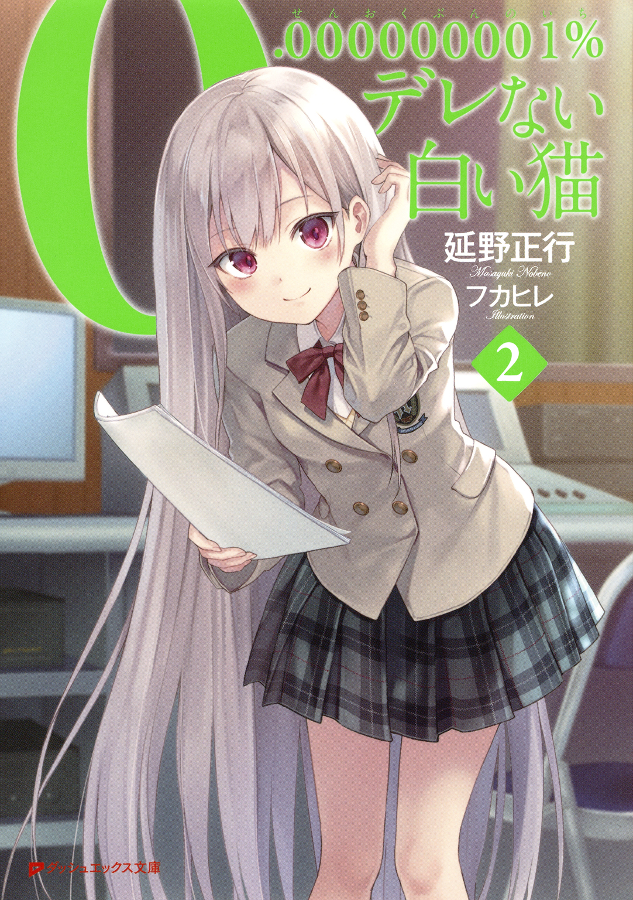
この本は縦書きでレイアウトされています。
また、ご覧になる機種により、表示の差が認められることがあります。
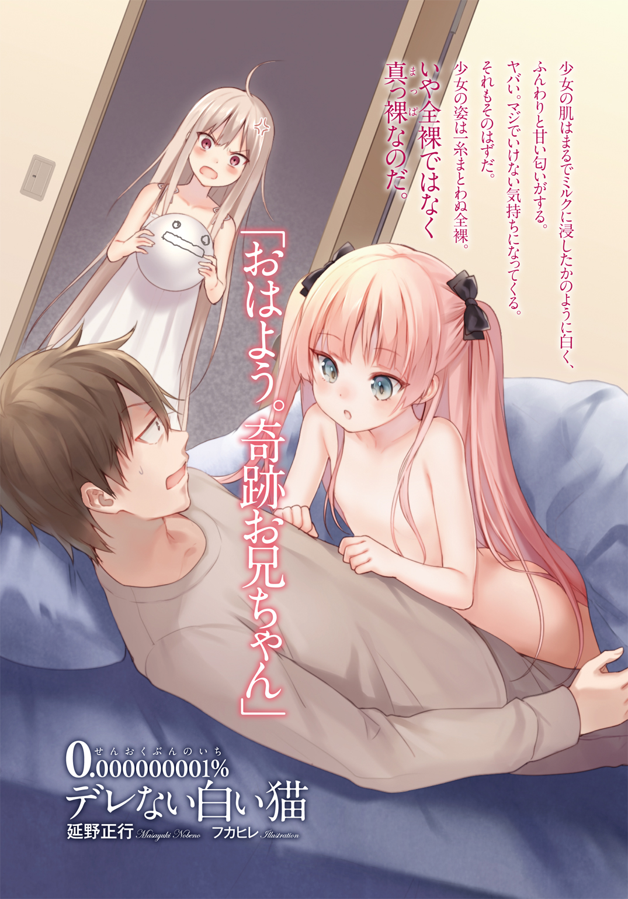
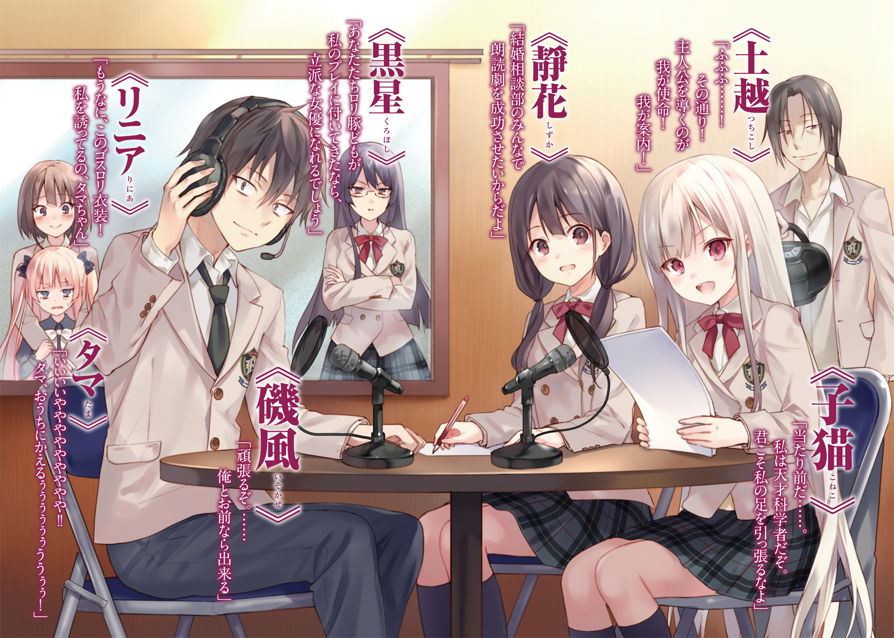
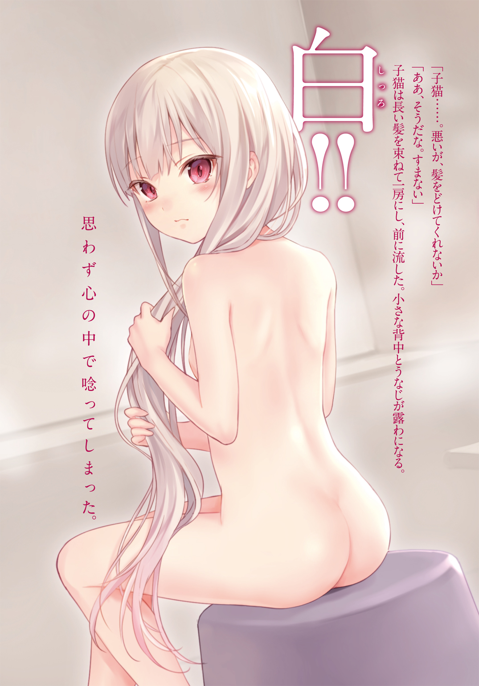
 ダッシュエックス文庫DIGITAL
ダッシュエックス文庫DIGITAL
０・００００００００１％デレない白い猫２
延野正行
プロローグ どうして俺たちの文化祭ははじまった......のだ？
「我々はぁ！ 生徒会の横暴をぉ！ これ以上許してはいけない！」
壇上に立つ男の叫びは、体育館一杯に響き渡った。
『生徒会の横暴を許すなぁ！』
体育館に集まった生徒達は、一斉に拳を突き上げ、声を張り上げる。
その姿は様々で、学校の制服から、ユニフォーム、十一月だというのにスク水まで着ている女子生徒までいる。一見、仮装パーティーかと思うほどバラエティに富んだ衣装がそろった空間。しかし、その生徒たちの目は一様に真剣そのものだった。
壇上の人物は叫声にうんと頷く。
おそらくラグビー部の部員だろう。マローンカラーのヘッドキャップをかむり、横縞のラガーシャツを着ている。身体が大きく、ちょっと力を入れるだけでシャツが破れそうだ。
「二ヶ月前......。我々はあの《炎の生徒会長》によって、学校生活における自由を奪われた。なけなしの部費を削られ、強制的に廃部にまで追い込まれたクラブもあった！ それほどの無体な所業を強いたにも拘わらず、あの魔女は我々にさらなる要求を突きつけてきた。それは何かッ!?」
『ある特定のクラブのために、我々の文化祭の場所と演目時間を譲るよう強要してきた！』
「そうだ。我々の文化祭の場所を横取りしようとしたのだ！」
『断固として、この横暴を許してはいけない！』
「我々は今こそ！ 一つになり、にっくきあの生徒会長を討つべきなのだ！」
あ、あの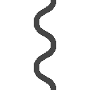。
熱くなるラグビー部員とオーディエンスを横目で見ながら、俺は間延びした声を上げた。
「なんだ？ 結婚相談部。確か、磯風奇跡とか言ったか？」
ラグビー部員は親の仇みたいに睨み付ける。俺は努めて紳士的ににこやかな顔で訴えた。
「あのさ。縄をほどいてくれない？」
そう――。俺は今、縛られている。別にエッチな縛り方ではないぞ。ビニール紐で手と腹を巻き込み、足首にまで巻かれている。動こうにも、尺取り虫みたいに動くことしか出来ない。
つまり、まあ......。有り体に言えば、この人たちに拘束されているのだ。
「ダメだ......」俺の訴えを、ラグビー部はあっさり一蹴した。「お前、生徒会長の腰巾着の結婚相談部の部員だろ？ お前らが俺らに何をしたかわかってるのか？」
「いや、あれは生徒会が勝手に――」
「わかってんのか......って訊いてんだよ」
ギロリ――擬音が脳内再生できるぐらい、ラグビー部員の目は据わっていた。
「いや、それは誤解だって。あ、待て。確かに結婚相談部はあんたらの場所と時間を奪おうとしている事は認める。けど、部員の中には穏健派がいてだな。それが俺――」
ガッキャアアアアア！
一際高い金属音が、カーテンで閉め切られた体育館に鳴り響く。
ほぼ同時に、その場にいる全員が同じ方向を向いた。
体育館の入口から白煙が上がっている。厚さ二センチほどの分厚い鉄の両扉はひしゃげ、握りつぶされた煙草の空箱みたいになって、床に転がっていた。
白煙の向こうから人影が現れる。二つの背の低いシルエット。
まず現れたのは、真っ白な髪の少女だった。
薄赤い瞳をさらに激しく燃え上がらせ、真っ白な手を腰に当ててポーズを取る。背丈は小学校高学年ぐらい。なのに、神話に出てくる想像上の生き物のように、神秘的な姿をしていた。
「ミー君！」
「子猫！」
互いの姿を認め、俺たちは名前を呼び合った。
しかし現れた潮乃女子猫を見た時、俺の胸中に現れたのは、期待ではなく不安だった。
「今、助けるぞ」
「あ、え？ あ、いやあ......。それは別に――」
「やっぱりお前、結婚相談部のスパイだったんじゃないか！」
俺と子猫の会話に入り込んできたのは、壇上のラグビー部員だ。
「やめたまえ！ それ以上、私のミー君に危害を加えるなら、こちらも容赦しないぞ」
「危害を加えたら、どうなるんだ？」
「そうなったら、割とマジであんたたち死ぬわよ......」
白煙の中から声が聞こえる。
次に現れたのは、黒い衣装を纏った少女だった。
とんがり帽子に、黒マントの前時代的な魔女ッ子コス。しかしその少女が宿した目の強さは、怒気というのも生やさしいほどの殺気に充ち満ちていた。
『岳東リニア！』
各クラブの部員達が声を揃え、少女の名前を叫んだ。
「どうやら、痛い目を見なきゃわからないようね」
右手から炎が上がる。「おお」という驚きの声は上がるが、部員達は一歩も退かない。
むしろその戦闘力は上昇する一方だ。
「我々は権力に屈しないぞ！ 断じてだ！」
「あっそ！ なら、その身に刻むことね。我が正義の鉄槌を！」
『ほっざけぇぇぇぇぇぇえぇぇぇぇぇぇぇえええぇえぇぇえぇえ！』
その言葉が戦いの合図だった。生徒の群れが、たった一人の少女に向かっていく。
それぞれの愛用の道具を手にし、恐怖を振り払うように雄叫びを挙げ、目に少女の姿を焼き付け突進していく。
生徒――いや戦士達の群れを見ながら、リニアは帽子の鍔を摑んだ。
影が差した顔に、不敵な笑みが浮かんでいた。
こうして俺たちの戦いは始まったのだ。
――ええ!? ちょっと待て！ そんな話じゃねぇだろ？
てか、なにげに最終回フラグ立ててんじゃねえよ。
今回、文化祭の話だろ？ ゆる～くラブコメするんだろ？ この話、続くんだろ？
なあ、なあってば――――。
第一章 二人の距離
１
文化祭を最初に企画したヤツ......。ちょっと話があるから屋上まで来てもらおうか。
教えてほしいんだが、一体何の目的でぼっちにとっての苦行を立案したのか？
――集団行動を学ぶ場だと？ ふざけるな。たまたま気が合って、たまたま趣味があって、たまたま同じクラブを選んだ連中が、わいわいがやがやと近所迷惑になるような騒音を撒き散らかし、学業も部活もほっぽり出して、挙げ句時間が足りないから学校に寝泊まりして、トーク重視になる行事が、健全な集団行動を学ぶ場として適当だと思ってんのか？ そんなもの修学旅行で間に合っている。いや、その旅行にしてもそうだ。「仲のいい人で班になって」なんてのはな！ 裏を返せば「ぼっちをあぶり出せ！」って言っているのと同じなんだよ!!
――地域の文化など発表する場という側面もある？ はあ？ 頭が沸いてんのかよ。
よく見てみろ。喫茶店を開けば、何故かコスプレ喫茶になってるし。迷路にお化け屋敷なんてどこに文化的な要素があるんだよ。あれは単なるカップルホイホイだろ！ 入学式とか卒業式では荘厳な雰囲気で行われる体育館すら、男がアイドルのコスプレして踊ってんだぞ！ 極めつけは吹奏楽部が『紅○の弓矢』を吹いてるんだよ。思わず「イェーガー！」って叫んじまうだろうが。大人しくホルストの『組曲 第一番』でもプカプカ吹いててくれればいいんだ！
十分理解したことだろう。
俺こと――磯風奇跡は文化祭というものが嫌いだ。
ついでに言うならば、修学旅行も、体育祭も、校外学習も、臨海学校も嫌いである。
とにもかくにも、人がついて回る行事が嫌いで、まあ言ってみれば――。
学校そのものが嫌いである。
特に、参加したくもない部に無理矢理参加させ、かつその文化祭の出し物を決めようとしている会議に出席させる。そんな状況は、もっとも遭遇したくないシチュエーションだろう。
そもそもクラブに所属したいなど、数年前からこれっぽっちも思わなかった。文化祭の会議など自分のクラスですら積極的に参加したことなどないのだ。
文化祭の準備なんかで色めき立つこの時期は、吐き気がするほど嫌だったし。「文化祭中止法案」なんてものが出来れば、時の政府を神のように崇め奉っただろう。
な・の・に・だ。
クラスのチャラい空間から逃げだし、文化祭七日前になっても出し物が決まっていない――ほぼ絶望的な状況下にあるクラブの部室にやってきたというのに、だ！
何故かそこでも、文化祭の魔の手が忍び寄ってきていたのである。
......きっかけは三日前だった。
突然、子供のように爛々と目を輝かせた――あ、いや......子供のようなではなく、まさしく子供なのだが、その生き物――潮乃女子猫の鶴の一声から始まったのだ。
「文化祭に結婚相談部の出し物を出すぞ！」
実にシンプルでわかりやすい宣言。
しかし部員たちは全員、言葉の意味が理解出来ず沈黙した。
その世界にあって、結婚相談部の実質的指導者にして首謀者たる子猫は。
「ふふん」と鼻を鳴らし、ない胸を反っていた。
髪も眉も肌も、真っ白な少女の超然とした姿は、世の中に十分なインパクトを与え、それこそ時を止めるほどのものではあったが、今はそこに感心している場合ではない。
そして二秒後。時は動き出した。
「「「ええ!?」」」
声を揃えた後、俺は他のメンバーと一緒に子猫の説得にかかった。
第一にすでに文化祭まで十日しかないこと。
第二にとっくに申請期限は過ぎており、出し物は出せないということ。
第三に場所がないということだ。せいぜい、この部室ぐらいしか使えない。
ちなみに我が結婚相談部の部室は、部室棟の五階。その最奥にある。エレベーターは完備されていない。階段で上ってくるしかない高層な場所だ。年老いた十五歳には苦行でしかない。さらにご高齢の方には、リアルに天国の階段に見えるだろう。
仮に出し物が出せたとしよう。
出てきたのは、十日で作った中途半端な代物である。
はるばる階段を上り、お越しになった奇特なお客様の憤慨した顔が、目に浮かぶようだ。
とまあ......散々、説得したわけだが。
「我らなら、奇跡を起こせる！」
瞳をリチウムの炎色反応のように赤く燃え上がらせ、結婚相談部の首謀者は声に力を込めた。
確かにまあ、俺たちならやりかねないだろう。
なんせこのメンツは、世界を救ったのだ。
しかも二つの世界を――。
残念ながら、俺の記憶にも、子猫にも、そして世界中の誰も彼もが、この世界が未曾有の危機に陥っていたということを、覚えていない。ただ天才科学者を自称する潮乃女子猫が作った最高最強のコンピューター《素粒子歪曲磁場発生解析装置 パンドラ》はそう言っている。
《パンドラ》の本体は家で自宅警備の真っ最中だが、俺の腕にはめられた《パンドラ改》という子機を介して俺たちの言葉を拾っていることだろう。
話を戻そう。文化祭に出し物を出すべく、俺たちは人事を尽くし、あらゆるコネを使った。
幸いにも（俺にとっては不幸だが）、結婚相談部に在籍している中に生徒会長が存在している。都合のいいことにそいつは子猫のためなら人を殺すのも躊躇わないようなヤツだ。
そいつは文化祭の場所と演目時間を譲るよう各クラブを恐喝した。だが生徒会就任後にそいつが行った改革に、不満を持っていたクラブ連合の団結力はすさまじかった。強固な意志によって劣勢をはねのけ、ついに生徒会長を退けるという奇跡を起こしたのだ。
偶然、傍目から俺は見ていたが、実に感動的なエピソードだった。彼らの文化祭はもう成功していると言っていいだろう。本にしたらベストセラー間違いなしだ。
だが、ここで俺たちの物語は最終回というわけにはいかなかったらしい。
そんなこんなで、あっという間に三日が経ったというわけだ。
２
「ともかく......出し物を決めよう！」
文化祭まで七日前にも拘わらず、子猫の士気は下がるどころかむしろ上がってすら見える。
壁際に置かれたホワイトボードをバンバン叩き、意気消沈している部員を鼓舞する。
俺は大きくため息を吐いた。まだやる気なのか......。
「そうね。......出し物を決めないことにはたとえ場所が決まったとしても、意味ないからね」
同意したのは、子猫より少し背の高い少女だった。
肩の辺りで切りそろえたボブに、意志の強そうな大きな黒目。顔は丸くまだあどけなさが残るものの、十分魅力的な容貌をしている。
俺が彼女をよく知る姿は、とんがり帽子と鴉の羽のような黒マントという古典的な魔女コスだ。が、今は薄いアイボリーに染まったブレザーに、チェックが入ったプリーツスカートをはいている。その着こなしは学校規定を準拠していて、模範的な姿をしていた。
名前は岳東リニア。子猫と同じ異世界の住人にして、一〇〇％信じてもらえないだろうが、魔法使いである。異世界人に魔法使いという――ラノベ読者なら如何にも食いつきそうな設定に飽き足らず、リニアはこの朝庭高校の生徒会長という役職まで持っている。次に会う時ぐらいには、宇宙人とか、地底人とかの設定が付いているかもしれない。
「その場所がとれないから、俺たちは校内をかけずり回っていたんだろ」
半ば強制的にな。
「いざとなったら、強硬手段よ。この高校を灰にしてでも、出し物を出してやるわ！」
リニアは父を殺されたナウシカみたいに髪を逆立たせ、黒いオーラを燃え上がらせた。
「ところであんた？ なんであのクラブ連合の連中どもに捕まっていたのよ？」
「え？ それはす、スパイ......かな――――？」
反対運動に参加していたら、結婚相談部の部員だとばれて捕まったなどと、口が裂けても言えるわけがない。
リニアはホワイトボードに駆け寄り、マーカーを拾い上げた。
キュポッと小気味よい音を立てて、ホワイトボード用マーカーの蓋を取る。
「誰か......。意見ある？」
「「「「「未や私そはるね映ＵなもＦら成Ｏい画が作かそりにもた政とい治年な家俺あがか作変るはな態らのやっプどぱレ文アイダ化ムがスうキ好ーき型か主だ論じよ祭ねるかああのもでにいもい張でラしょミなそエの参前ル加にあ型あをなもすた捨るが仕切がやるのとたはいういりのか反は対などたいうあだこといですか！」」」」」
「だーもう!! 一斉に言うな！ 私は聖徳太子か」
創部二週間しか経っていない部員達の意見は、バラバラだった。魔女ッ子生徒会長を前に敢然と立ち向かったクラブ連合の団結力に比べるまでもない。
お暇な人は是非分解して、それぞれの意見を聞いてあげてやってくれ。
「とりあえず順番に......。じゃあ、まず子猫」
リニアは一番近くに座っていた子猫を指さす。高校の制服を纏った小さな少女は、偉そうに手をふって「パス」と言った後、言葉を続けた。
「まずは皆の意見を聞こう。私は、最後でいい」
よほど自信があるのだろう。パイプ椅子の上でふんぞり返り、両腕を前で組んでいる。
わかったわ、とリニアは頷き、周囲を見渡した。
「じゃあ、えっと。それじゃあ............靜花はどう？」
次にリニアが名指ししたのは、子猫の隣に座った可憐な少女だった。
流れるような黒髪。それを二つに束ね、なで肩の前に出している。髪の色と同じ黒い瞳を輝かせ、薄い唇をわずかに広げて、みんなの意見に耳を傾けていた。顔は小さく、化粧しているのかどうかもわからないほど、肌は白く艶やかで、机に置いた手は楚々として精巧な細工物のようだった。
ジャパンが誇る大和撫子の正統後継者。その姿は現代の高校事情において、かくも珍しい天然記念物。残念ながら着物姿ではないものの、薄いアイボリー色のブレザーに、チェックが入ったスカート。細い首に巻かれた赤いタイという出で立ちは、殺人的に似合っていた。
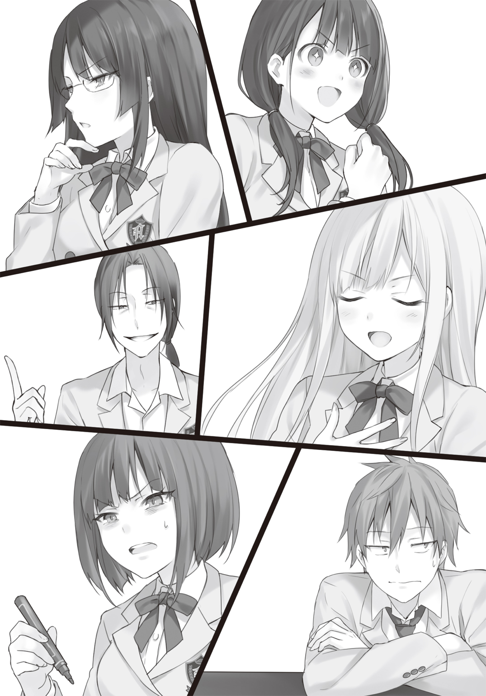
結婚相談部のエースにして、唯一無二の良心。
清川靜花さんだ。
いやあ、しかしかわエエなあ、相変わらず......。
結婚相談部なんて訳のわからん部に所属して、運勢最悪と思っていたが、彼女の存在がなんとかイーブンに戻してくれているんだよな。ホント清川さんが入ってくれてよかった。
『二十秒経過！ 自発的に報復行動を行います』
警告音声が、腕にはめた《パンドラ改》から聞こえてきた。
そして――。
「うががあああああぎぃぃぃいぃぁあああああああ!!」
狭い部室内を突き抜け、五階のフロア一杯に俺の断末魔の叫びが響き渡る。
十万ボルトの電撃を受けた俺は、シュウシュウと蒸気を発しながら机の上に突っ伏した。よく死なないよな、俺。むしろいっそ殺してくれ。やだよ、こんな設て――せ、生活......。
腕にはめた《パンドラ改》は《パンドラ》の子機だ。二十秒間子猫以外の異性を見ると自発的に電流が流れるようになっている。西遊記の悟空も真っ青の代物なのだ。
いまだ痺れが残る身体を起こす。
つと机の上に小さな上履きが載っているのが見えた。
え？ と疑問に思い、上履きから足を伝って、徐々に視線を上げていく。
少女が一人――凄い形相で睨んでいた。
口端をひくひくさせ、赤い瞳は地獄の業火を思わせるほど怒りに燃えている。
「ミー君......。君は一体私の他に誰を見ていたんだね」
言葉は冷静だった......。が、声は震えていた。
「いや、それはその............」と目を泳がせるが、誰も俺をフォローしようとはしない。
リニアはまたかと息を吐き、清川さんは苦笑している。まだ紹介していない残り二人に関しては、一体何を考えているのかすらわからない。
「ホントすんません」
椅子の上で小さく丸まるように土下座した。しかし少女の怒りは収まらないらしい。
「リニア！ 火炎放射だ！」
「かげぇえええええ！」
俺に向かって、炎を放つ。俺は回避運動をする間もなく、炎の塊の餌食になった。熱ぅ！
「ちょっと！ 子猫！ 私に何をさせんのよ！」
いきなり炎をぶっ放した魔法少女は、子猫に抗議する。怒ってる割には、お前ノリノリじゃねぇか！ カゲーって明らかにわかってるだろ。てか、お前ら。炎の直撃を受けた。俺を心配しろよ。さっきから殺されまくってるが、俺の命って世界の命運を背負ってんだろ！
ふん！ と鼻息荒く、子猫は自分の席へ戻っていった。
「そろそろ議事を進行されてはいかがですか？」
氷剣のような言葉が、結婚相談部の部室に突き刺さった。
きつい感じの忠告は、清川さんの隣から聞こえる。
黒曜石で出来た剣のような髪の少女が、目を伏せ不機嫌そうに腕を組んでいた。
結婚相談部の部長――黒星美巫子。
女性の平均値より上にある長い背丈に、腰まで伸びた日本黒髪。理知的な縁なし眼鏡をキラリと光らせ、唇を真一文字に結んでいる。思わず「おお」と声を出して感嘆してしまうほど、大きな胸は、ブレザーの上からでも明確に主張していた。
今はその立派なお胸を休ませるように、組んだ腕の上に載せている。
突然伏せられた瞼がかっと開いた。切れ味鋭い双眸が俺を捉える。慌てて目をそらした。何故俺を見る。まあ、カウント五秒前だったから助かったけどさ。
「そもそも私は何故、あなたが議事進行しているのかわかりません。本当なら部長である私が行うのが筋というものです。だいたいあなたが結婚相談部に入ったのは、メンバーの中で一番最後のはず。さらに前身の地域文化部では、あなたのおかげで創部に時間がかかってしまった。そんな人物がここで我々の意見を取りまとめているなど、おかしいのではありませんか？」
「なんですって？」
何かスイッチが入ったかのようにリニアの顔が、口内の奥で火を灯したように赤くなる。
「だったら、あんたがやりなさいよ。議事進行は得意でしょ、大臣様」
リニアが揶揄すると、黒星はふっと余裕の笑みを浮かべた。
「私が？ 私は結婚相談部のトップ。議事進行なんて下僕がやればいいことでしょう」
どっちなんだよ。やりたいのか？ やりたくないのか？
「げ・ぼ・く――ですってぇ」
黒星の挑発ともとれる発言に、リニアの怒りゲージが簡単にＭＡＸまで引き上がった。
「まあまあ、リニアちゃん。黒星さんも......。折角リニアちゃんが忙しい生徒会の仕事の合間を縫って、部活に参加してくれてるんだから。そんな事を言っちゃダメだよ」
可愛らしい声が俺の耳をくすぐる。清川さんだ。
そう言えば、リニアに意見を振られたにも拘わらず、何も言っていない。おい、お前ら！ 清川さんにおしゃべりさせろよ。むしろこのままずっと清川さんのターンでいいよ！
「まあ、いいわ」と清川さんの忠告を聞いて、少し冷静さを取り戻したらしい。「で――。靜花、あなたの意見は？」
元々俺たちとリニアは不純な活動を行う部と生徒会という構図で対立していたのだが、今はそのわだかまりは解け、リニアも部に参加している。
特に部の中で、リニアは子猫に次いで清川さんと仲が良い。お互い下の名前で呼び合っている事からもわかる。
ああ、俺も言ってみたいぜ。「おい、靜花」って。心の中では百万回ぐらい言い続けているんだが、現実で日の目を見ることはいまだない。
「ＵＦＯ作りたい！」
いきなり素っ頓狂な声が上がった。俺は思わず椅子に座ったままずっこけた。
ＵＦＯ――日本語で言うと《未確認飛行物体》。世界各地で目撃例はあるが、二〇一〇年代に於いてもその存在は謎であり、不確実だ。しかしその存在と宇宙人を頑なに信じる女子高生がいる。信じられないだろうが、それが清川靜花という少女の特性だ。
いいんだよ。ちょっと変わったところがある方が、俺は萌えるんだよ。
「ＵＦＯってあんたねぇ」とリニアは明らかに呆れた声を上げる。
「子猫ちゃんなら造れるでしょ。光子魚雷とか。反物質弾とか。次元波動超弦励起縮退半径跳躍重力波超光速航法とかアルゴリズム推進航法とか出来る宇宙船とか。別宇宙へいって、猿の惑星とか見つけたら、それ凄いことだよ」
それ凄いっていうか、凄すぎてノーベル賞十回ぐらい獲れるよ。というか、後半の文言はともかく前半の兵器とか何に使うの!? 宇宙人殲滅するの？ 猿を全滅させるつもり？
目を星のように輝かせ、立ち上がった清川さんはこぶりのお尻をふりふりさせながら子猫を見つめる。一生の不覚。俺の位置から見えない。
ふんふんと鼻息を荒くする清川さんに対して、子猫は苦笑を浮かべた。
「いや、靜花......。出来なくはないが」
出来るのかよ!!
「さすがに造るには、国の一つや二つぐらい潰さないといけないぐらい先立つものが――」
微妙にリアルな事を言いやがる。
子猫の忠告を聞いた清川さんは、一気にトーンダウンし、椅子に座り直した。この世の終わりだというぐらい、暗い顔をし、がっくりとうなだれる。
「ちょっと、靜花......。もうちょっとまともな意見はないの？」
「え？ そうだね」と顔を上げる。星が出ていた瞳は、まだ光が届いていない深淵の宇宙のように暗かった。「キャトル............ミュー......ティ............レーション............とか」
清川注：キャトルミューティレーションというのはね。動物の死体の一部とかが切り取られ、その際血液がすっかりなくなっていたという一九六〇年代に起こった変死事件のことだよ。
ちょ、清川さん！ しっかりして。黒川モードになってるよ。カムバック！ 清川！
「次！」とリニアは気を取り直し、部内を見回した。
一個上でありながら、まだ幼さが残る顔つきの少女は眉間に皺を寄せて表情を曇らせる。すると俺のところまでわざわざ来て、顔を近づけた。
「ねぇ、ちょっと磯風」と声のトーンを抑え、俺に耳打ちする。「あの物体はなに？」
指さした方向を見る。
確かに奇妙な物体があった。何故かこちらを見て、軽く手を振っている。
「なんか手を振られたんだけど。意思疎通とか出来るの？」
「さあ......。俺もわからんな」
「さも当然みたいに結婚相談部に在籍してるんだけど、あんなのいたの？」
「たぶん、ファンだろ？」
「ええ？ もしかしてストーカーってヤツ」
「とりあえず燃やしてみろよ。何色かには炎色反応を示すかもしれないぞ」
「そうね」とリニアは魔導書を開き、手の平に炎を灯した。
「ちょちょちょ――待ってよ。僕だって、この結婚相談部の一員だよ」
「「うわ。喋った」」
「クララが立った的なノリで言わないで（誰もそんなこと言ってない！）」
「あんた、何者？」と疑惑の眼差しをリニアは向ける。
それは人というにはあまりに細すぎ、醜く不細工そして怪しすぎる、まさに奇妙というべき姿をしていた。
「なんでベル○ルク風なんだよ！ しかもその描写説明――人じゃなくて剣だからね。ドラゴンとか殺せるから。もうちょっとちゃんと紹介してよ。前巻、僕の活躍がなかったら、君たちは死んでたかもしれないんだよ。世界は救われていなかったかもしれない。というか、この巻すらなかったかもしれないんだよ。醜男ってのは認めるよ。顔がいいなんて、自覚はしてないからさ。そもそも主人公の横にいる男キャラなんて、二枚目か不細工って相場が決まっているんだから。いじられる運命にあるのも理解してるさ。けどね。続巻の初っぱなのキャラクター紹介ぐらいもうちょっと具体的でわかりやすい説明とかしてくれたらいいじゃないか。今の描写でどうやって僕を想像するんだい。イラスト任せって、僕のイラストって前巻は口絵しかなかったんだよ。あまりに気持ち悪いからモザイクをかけようなんて案があったぐらいなのに。ひどすぎるぉ。僕の扱いひどすびるよう。不当だよ。雇用機会均等法だよ。うわーん」
おいおい泣き始めた。どさくさに紛れて、清川さんより長く喋ってんじゃねぇよ。
ああ、俺の隣で噓泣きしてるヤツは、土越案内という名前だ。俺以外で唯一の男キャラ。現実と虚構の区別が付かない容姿・言動ともに危ないヤツである。
まあ、容姿についてはご想像にお任せする。
「で、その土越君はなんか意見あんの？」
「もしかして僕に意見を聞くの。僕に出番を与えるって、リニアちゃんって天使なの？」
いきなり顔を上げて、土越は目を輝かせる。
「い、一応部員なんでしょ？ てか、リニアちゃんってやめてくれる。虫唾が走るわ」
リニアの容赦ない忠告に、怯むどころか土越は気持ち悪い笑みを浮かべた。
土越はちょっと首を傾げてから言い放った。
「じゃあ、映画を撮るってのは......」
「「「「「絶対、却下!!」」」」」
今まで全く意見が合わなかった部員達が、この時ばかりは声を揃えた。
そもそも機材を今から準備することなど不可能だし、この学校にはちゃんと映画研究会というものもあり、出し物は自主制作映画となっている。ネタがかぶるだろう。だいたいシナリオすら決まっていないのだ。七日間で出来るはずがない。
そもそもＳなんとか団さんとかが著作権料とか言って、搾取しにくるかもしれないだろ！
部員全員が言いたくても言い出せなかった意見を、軽々と言ってのけた土越は、怯むことなく奇笑を浮かべ「そんなに強く反対しなくてもいいだろ」と一人ぼやく。
「で？ あんたはどうなの？」
仕切り直したリニアは、矛先を俺の方へ向けた。
「聞くまでもねぇ。......俺は今でも文化祭には反対だ。何が楽しくて、みんなと力を合わせて一致団結せにゃならんのだ。だいたい七日間で何が出来るんだよ。準備期間が七日じゃ、せいぜい紙コップにジュースを入れるぐらいの喫茶店くらい関の山だろうが！」
「まあ、言ってる意味は理解できるけどね。とりあえずよ。とりあえず......。いいわ。満を持して――子猫、あんたの意見を聞かせてくれる」
とうとう私のターンか、と子猫は席から立ち上がる。
ホワイトボードの前に立ち、リニアからマーカーを受け取った。
すると手の届く目一杯のところに文字を書き始める。
如何にも子供っぽい字は、六文字。漢字が五にひらがなが一だ。
書き終えた子猫は満足した様子で、マーカーに蓋をした。
そしてバンとホワイトボードを叩く。
「私が推薦する出し物は『未成年の主張』だ」
「へぇ......。子猫にしてはまともな意見ね」
顎に手を当て、リニアだけが子猫の意見に感心している。
「待て。『未成年の主張』ってなんだ？」
子猫の返答が、地球環境や世の政治経済、世界各地で起きている紛争や宗教対立などを高校生の視点から見た意見を弁論する大会なら、俺は何も言わない。どうぞご自由にといったところだ（もちろん俺は参加しないがな）。
しかし！ ここは結婚相談部である。そして首魁潮乃女子猫の意見だ。
俺をデレさせ、結婚するためなら、ゲロまみれで婚姻届を出しに行ったり、平気で裸をさらして誘惑してきたり、ベッドに侵入したりするような破廉恥きわまりない少女である。ある一定の趣向を持つ人間ならば、歩くご褒美であり、同時に猛毒といっても過言ではないだろう。
そんな少女の意見がまともなはずがない！
「ああ、そうか。あんたたちは知らないわよね」
質問に反応したのは、リニアだった。
「えっと......。七年ぐらい前だったかな。私たちの世界がまだ老化現象の影響が少なかった時に、流行ったバラエティ番組なのよ」
「バラエティ番組？」
いきなりきな臭いにおいがしてきたぞ......。
「わかりやすく言うと、お見合い番組よ。男と女が分かれて......」
「論より証拠だ。リニアよ。一度見てもらえれば、皆も納得すると思うが」
「あの機械がないと説明できないでしょ？」
子猫は「甘いな」と言いながら、指を立てて横に振った。
「私は天才科学者だぞ。すでに用意してある！」
不穏な言葉の後、子猫は高らかに宣言した。
「ポチッとな」
白い手首に付けられた《パンドラ改》のディスプレイをタッチする。
途端、部屋全体が微震を始めた。
立っていられないというほどではないが、俺は側にあった椅子にしがみつく。すると磁石で引き寄せられるかのように椅子が部屋の端に寄る。俺のだけではない。他のメンバーが座っていた椅子も、壁の方へ移動していった。
なんだなんだ、と俺は部屋を見渡し、歯をガチガチ鳴らしながら、揺れが収まるのを待つ。
そんな中、子猫だけが唇を半円にして笑みを浮かべていた。
ゴゴゴ、と今度は重い音を立て、部屋の中央の長机がせり上がっていく。一定のところで止まると、横倒しに倒れるように床ごと回転した。
突如、俺たちの前に現れたのは、天板に大きな電光掲示板を付けたテーブルだった。サイドには五つのボタンが五組――つまり両側あわせて十組五十個のボタンが並んでいる。掲示板のドットは荒く、光っていなくても数値や線が描かれているのは一目でわかるほどだ。
いきなりの出来事に、俺は声を失った。他のメンバーもどこか呆然としていたが、唯一子猫だけが余裕の笑みを浮かべている。
そしていつもの声で叫んだ。
「《フィーリングカップル》！」
の○代声が響きわた――おい！ ちょっと待て！ あの超有名な漫画にそんな名前の道具なんてなかったはずだろ？ なに集中線を出して、未来の道具的な雰囲気を醸し出してんだよ。
「これは《フィーリングカップル》といって、まず気になる異性のボタンを押す。そして相手も自分の指名してくれていれば、カップル成立という一種のバラエティ器具だ」
ちょっと待てよ。それどこのプロポ○ズ大作戦だよ！ 未来じゃなくて大昔の道具じゃねぇか！ 昭和だぞ。ＨじゃなくてＳだぞ。まだ俺たち生まれてもいないんだぞ。
いや、その前にお前らの世界の《未成年の主張》ってネーミングもなんだよ。ツッコみどころありすぎて――って、よく考えたら俺もその世界にいたんだよなあ。ちょー恥ずかしい！
「ヤスキヨの時のものですね......」
冷静に分析したのは黒星だった。よく知ってるなあ！ お前も俺と同じで動画サイトで見た口なんだよな。リアルに見てないよな！ な!?
他の二人はどこか浮かない顔だ。
清川さんは先ほどの自分の意見が否決されたショックから、まだ立ち直っていないらしい。宇宙人と交信でもするかのようにぶつぶつと呟いている。土越に至っては、顔が火星のモノリスに刻まれた文字みたいに複雑過ぎて、何を考えているかわからない。
空気を察したのか、子猫は「では、一つデモンストレーションをしてみよう」と言い始めた。
子猫は、俺と土越、対面には子猫、清川さん、黒星を座らせる。リニアは横で見学だ。
「最初はまずは自己紹介からだ。私からやるぞ。......し、潮乃女子猫です。趣味はガーデニングと、お花を観賞することです」
「それは何か？ お前の頭に咲いたお花畑を眺めることか？」
「《パンドラ》。......サンダーボルト」
『びがあぁあああ！』
「んぎゃああああああああああああああああ！」
再び俺の全身に電撃が駆け巡る。
俺は頭から湯気を出しながら、電光掲示板の上に突っ伏した。
「自己紹介すればいいんだね。そういうのは僕、得意なんだ」
痙攣する俺に代わって、自分を紹介しはじめたのは、土越だった。
長いのでカット――。
「このように相手の趣味嗜好を聞いて、一番良いと思った異性のボタンを押す。指名した相手が、自分も指名していればカップルが成立だ。ミー君、試しにボタンを押してみたまえ」
「ボタンを押せばいいんだな」
ボタンはそれぞれの異性に付いた番号に対応している。
俺は子猫の言葉通り試しにボタンを押してみた。
「我々も押そう」と女性陣を促し、子猫と清川さん、黒星がボタンを押した。
すると電光掲示板が派手に光り始めた。まるで場末のネオン街みたいだ。
ジャカジャカとドラム音が鳴り始める。すると俺の番号が付いたマークから線が伸びていく。それは子猫の方へと向かっていくと思われたが、最終的に到達したのは清川さんだった。
清川さんの番号が、一際輝く。ファンファーレが鳴り響いた。え？ これってもしかしてカップル成立ってことなのか？ それはつまり清川さんが俺を選んでくれた。
俺はその場でジャンプしそうなぐらい喜んだ。
が――つかの間の安息だった。地獄はすぐ側までやってきていたのだ。
電光掲示板の上に立ち、薄紅色の瞳を燃え上がらせた少女が、ガイナ立ちで見下ろしていた。
「ミー君......。どういうことだね。この場合、私のボタンを押すのが、フィアンセとして当たり前だと思うが」
「待て待て。お前が試しに押してみろって言ったんだろ。こうなるなんて知らなかったんだよ。ていうか、プロポ○ズ大作戦なんて、もう四十年も前の企画――」
「《パンドラ》！ かみなりだ！」
『ぴがあああああああああ！』
荒々しい雷獣のような叫声が上がる。
同時に俺の全身に電撃が打ち込まれた。血管を直接バシバシ叩かれたような痛みが襲う。
いつもより長めに電撃を受けた俺は、全身の筋肉が弛緩し、椅子から落ちて地面にへたり込む。シューと湯気を上げて、咳をすると灰が混じっていた。マジ死ぬ！
「お前、いい加減にしろよ！」
何度も電撃に炎を喰らって、黙っている磯風奇跡ではない。
さすがの俺も頭にきた。
渾身の力を込め、奈落から這い上がってきた亡者のごとく、電光掲示板に寄りかかりながら、なんとか立ち上がる。
「何を言う！ 君も、いい加減私にデレたらどうなんだ？ 来年の一月十日には我々は結婚しなければならないんだぞ」
そうなのだ......。
一二〇％信じてくれないだろうが、俺とこのロリッ子美少女はいずれ結婚しなければいけない運命にある。しかも来年の一月十日の前日までと、ご丁寧に期限まで決められているのだ。
そして二〇〇％信じてもらえないだろうが――その日までに結婚しないと、この世界は滅亡するのだという。
それだけの理由があれば、ロリッ子と結婚しても合法じゃん、役得じゃん、なんて思ってる世のロリコンどもよ。今、この状況を見て言えるだろうか。
「じゃあ、言わせてもらうがな！ 文化祭に参加することと世界を救う......その、俺たちが結婚する事とどう関係があるんだよ！」
俺のマジ怒声に、子猫は怯むどころかカウンターを浴びせるかのように反論した。
「関係はある。......現在、朝庭高校で結婚相談部の認知度は低い。場所も人が寄りつかないような場所だ。君をデレさせるためには、私は多くの情報が必要だと思っている。そのために結婚相談部を盛り上げ、部員を増やして、アドバイスをもらうことが肝要なのだ」
「俺は十分人材は揃ってると思うぜ。生徒会長はいるし、清川さんだって学年では頭が良い方だ。黒星なんて内閣総理大臣だぞ。これ以上にどんな人材が必要なんだよ」
「人は多ければ多い方がいい」
「俺にはこれぐらいの身の丈があってる！」
次第に俺と子猫の議論がヒートアップしていく。
そうだ。まず子猫と意識が同調しない点はそこだ。こいつは結婚相談部を大きくして、俺と愉快な仲間達の輪を広げようとしている。どうやら子猫は俺が他人にあまり信用されていない事が気に入らないらしい。実際俺はクラスの文化祭の準備から外されている。
そうしたわだかまりをほどくために子猫は部を発足させた。その行為に関しては、理解も出来るし感謝もしてる。集まったヤツらはみんなくせ者揃いだが、嫌いではない。
だから、俺としては今のバランスを崩したくない。
結婚相談部が有名になることよりも、たとえ小さな事でもこの六人で成し遂げたいのだ。
なんで子猫にはそのことがわからないんだ。
「あ～、はじまっちゃった」
口論する俺と子猫を見ながら、清川さんは苦笑した。
「最近ずっとこうなの？」
リニアは清川さんの背中にそっと近づくと尋ねた。
「うん。......でも二人が喧嘩してるのって、それだけじゃないと思うんだ」
「え？ どういうこと？」
意味深な台詞を吐く清川さんはリニアの質問に答えなかった。髪を二つに束ねた少女はじっと俺たちの方を見ながら、口論を見守っている。
そして俺たちの喧嘩は、最終局面を迎えようとしていた。
「つまりお前はあれだろう。......周りの評価が自分のと比べて低いことが気に入らないんだろ！ 自分の恋人が過小評価されていて、自分も下に見られる事が嫌いなんだ」
「私はそんな事を言っていない。......君をデレさせる方法として、最良の方法をだな......」
「だったら、文化祭なんて無理にやる必要ないんだよ。俺たちは俺たちのやるべきことをやればいい。デートでもなんでもしてやるよ。そうすれば、お前も俺の評価を上げるだろう」
「評価って！ 私はそんな目でミー君を見た事なんて一度も......」
「そもそも......俺はまだお前と結婚するなんて認めてないぞ。だいたいなあ！ 俺の結婚する相手って本当は――」
言うな!!
「心夢姉なんだからな！」
心のブレーキは間に合わず、俺はつい決定的な一言を口にしていた。
口を手で覆ったが、すでに遅い。
子猫を見る。薄い紅の大きな瞳はつぶれ、顔は真っ赤になっていた。
今にも泣き声を上げそうな口をむずむずさせ、声を上げまいと必死に口を結んでいる。
「帰る！」
と、俺に背中を向けた。
瀑布のしぶきにも似た白い髪が、一瞬差し込んできた夕日の光を受けて赤く見える。
不意に俺の脳裏に、血に濡れ赤く染まった白髪の少女の姿がフラッシュバックした。
目をそらす。胃の奥からせり上がってきた吐き気を抑えるため、手をお腹に当てる。
吐瀉をこらえた口元を震わせ、俺は言葉を絞り出した。
「どこに帰るんだよ？ 元の世界か？」
相手が鋭く息を呑むのがわかった。
顔がこちらを向かない。だが白い頭が震えていた。
子猫はそのまま黙って自分の鞄を拾い上げる。ホワイトボードの前を通り、俺とは反対側を通って部室の入り口へと向かう。一切何も言わず、結婚相談部の部室から出て行った。
あまりの出来事に、一同は呆気にとられ、沈黙する。
先に正気に戻ったのは、リニアだった。魔導書を広げた方とは反対の手に炎を握り、肩をわなわなと動かしている。
「磯風ぇえ!! あんた――――」
磯風君！
リニアの怒声よりも一瞬速く、声は部室に響いた。
清川さんの声だった。
「言い過ぎだよ......」
俺はそっと清川さんの方を見る。
表情こそ崩れていないものの、大きな瞳でじっと俺を見つめ、むぅと口を結んでいる。まるで悪戯をした子供を叱り付けている母親のようだった。
すると今度は、突然胸ぐらを摑まれた。
気がつくと、前髪を切りそろえた少女のどアップがあった。眼鏡の奥からは、殺意を含んだ冷たい眼差しが見て取れる。思わず息を呑んだ。黒星美巫子は忠告する。
「少々自覚が足りないのではありませんか？」
「な、なにが？」
「彼女が元の世界に帰れば、再びこの世界は未曾有の惨事になりかねない。そうですね。《パンドラ》......」
『その通りです。現在、潮乃女子猫の同位体反応は、マスター一人しかいらっしゃいません』
滑らかな機械音声が《パンドラ改》から聞こえてきた。
「あなたと潮乃女子猫。世界に二つのピースがなければ、〇・〇〇〇〇〇〇〇〇一％の確率はたちまち〇％になってしまう。あなたにはその自覚はありますか？ そう問うているのです」
「黒星さん。そんな言い方......」
清川さんが間に入る。黒星は胸ぐらを締め付ける力を緩めようとはしなかった。
「これは非常に重要なことですよ。特に一国の首相にとっては大問題です。......だから、軽々しく潮乃女子猫を元の世界に帰らせるような言動は控えて下さい」
そうしてやっと黒星は、手を離す。
俺は再び地面に崩れ落ちた。
「あなたの依頼通り......。あなたの姉――小野飯心夢の捜索は続けます。潮乃女子猫に確認したところ、彼女がこの世界に来たのはあなたと出会った当日。小野飯心夢が居なくなったのは、今から三年前。その間、世界の老化といわれる現象は起きなかった。それはつまり、つい最近まで小野飯心夢がこの世界にいたという証拠に他ならない。すでにこの世界にはいないかもしれませんが、その痕跡は絶対に見つけます。あなたも、それを望んでいるようですから」
それを――という部分に強く力を込める。
ブレザーの下襟を正し、黒星は部室から出て行った。
部員全員で、大臣の帰りを見送った後、結婚相談部の部室はしんと静まり返った。
俺は喉の辺りをさすりながら、立ち上がる。何も言わず学生鞄を拾い上げた。
「あ、ちょっと！ まだ私の天誅がまだよ。どこに行くのよ」
リニアに背を向けた俺は。
「帰るんだよ」
とだけ言い残し、子猫が去って行ったドアに手をかけ部室をあとにした。
３
結果として、俺たちは世界を救った。
それはつまり〝結婚する〟と認められたフラグを達成したということ。
そして磯風奇跡が潮乃女子猫に対して、デレたということなのだろう。
なんらかのイベントがあり、俺と子猫との結びつきは強固なものになったに違いない。
しかし今、子猫にも俺にもその記憶はない。正確にいえば、土越が作った《ガン丸Ｍｋ－Ⅱ》で、子猫がいた世界に飛んだ後の記憶が全くないのだ。
子猫の世界と俺が今いる世界が救われた――その事実を知るだけ。
望外な奇跡。英雄と祭り上げられてもおかしくない。
その確率は俺と子猫が結婚する確率〇・〇〇〇〇〇〇〇〇一％を軽く凌駕する。
俺たちはそれをやってのけた。
だが、ここで俺は一つの問題にぶち当たる。
それは世界を救ったという英雄的行為よりも、至極単純で些細な疑問だった。
果たして磯風奇跡はどうやって潮乃女子猫にデレたのであろうか......。
世界を救うという偉業の重みとともに、その疑問は俺の頭の中を静かに侵食しつつあった。
さらに言うと、俺には鮮明に覚えている事がある。
遊園地での出来事だ。
潮乃女子猫が《魔人の眷属》であることは承知している。そして不老であり、不死であり、五百年という長い時間を生きた存在であることもだ。
けれど俺はそのことを他人から聞いただけで、あいつの口から一切聞いたことがない。
子猫にとって、それは非常に辛い事であることは理解している。ＹＯＵＦＯＲランドの事故で見せたあいつの涙は今も忘れられない。
だからこそ話してほしい――。
泣くほど辛い事なら、少しでも痛みを分かち合うべきじゃないのか。
それが多分、結婚するということなんじゃないのか――？
しかし俺の望みとは裏腹に、子猫は何も話してはくれない。俺をデレさせようと躍起になっているのは相変わらずだが。
――そんなに磯風奇跡は信用ならないんだろうか......。
暗い疑念が浮かぶ。
通学路を歩きながら、ふと顔を上げた。
真っ暗な空に、吐いた息が白いもやのように広がった。
第二章 襲撃者はライバル猫!?
１
あ......ありのまま今、起こったことを話そう......。
昨日帰ってきて、俺は飯も食わずに泥のように眠り込んだ。
散々電撃だの炎だのを浴びたことによって、身体が限界に近かったのだろう。
起きると、七時前。通学時間にはちと早いが、二度寝をするには危険な時間だ。
幸い眠気はない。身を起こすことにもなんの躊躇いもなかった。
昨日ベッドにそのままダイブしたにも拘わらず、何故か布団が掛けられている上に、寝間着まで着ていることには疑問はあったが、この際どうでもいい。
本題はここからだ。
学校へ行く用意をするか、と思い立った時、不意に自分の身体が動かないことに気付いた。
いや、別に金縛りとかそういう霊的な干渉を受けたわけではない。なんと言うか下半身が重たい――と言えばあらぬ誤解を招くだろうが、妙にホールド感があるのだ。
俺は恐る恐る布団をつまみ、中を覗き込んだ。
「ふぃ――――」
息を呑むついでに、俺は変な奇声を上げた。反射的につまんだ布団を、その中身を隠すように閉じる。二秒ほど心停止した心臓に、もう一度血を送るため何度も息を吸い、吐いた。
正直、その時までは俺の同居人が、何度目かの無謀な突貫を行ったのだと思っていた。
昨日あれほど口論したというのに、もう立ち直ったのか。
少女でありながら、女性の精神力には感服する――そう思った。
が――違う！
布団の中には、まったくの新キャラが潜んでいた。
もそりと布団の中身が動く。盛り上がったシーツが芋虫の這うような動きを見せ、迫ってくる。同時に俺の下半身の上を、手や足と思われるものが近づいてくるのがわかった。
ついに布団は津波のように持ち上がると、二つの大きな目が闇の中で閃いた。
ふぁさり――拍子抜けするぐらい柔らかな音。
布団がその小さな背中を滑っていく。
現れたのは、期待を裏切らないほどの美少女――いや訂正しよう。
――美幼女だった。
無地に薄い桜色をほのかに香るぐらい混ぜたような白桃色の長い髪。ころころとした丸い輪郭に、薄い雲がかかったような青色の瞳。唇は薄く、白眉にもややピンクが混じっている。
その体軀は俺の同居人よりもさらに小さく、小学校低学年レベル。成熟した女性の片鱗は一切なく、手や足などのそれぞれの部位がいちいち可愛いサイズをしている。当然胸はなく、魚を三枚に下ろせそうなまな板で、うっすらとだが肋骨が浮き出ていた。
よく子供を乳臭いなどというが、少女の肌はまるでミルクに浸したかのように白く、ふんわりと甘い匂いがする。ヤバい。マジでいけない気持ちになってくる。
それもそのはずだ。少女の姿は一糸まとわぬ真っ裸。いや全裸ではなく真っ裸なのだ。
「にゃあああああああああああああああああ!!」
自分の混乱ぶりがわかるように、俺は何故か可愛い叫声を上げた。
その声は家の隅から隅まで響き渡る。
すると猫が餌に向かってツッコんでくるような慌てた足音が、部屋の外から聞こえてきた。
自室のドアが開け放たれる。
現れたのは、これまた美少女だった。
白い髪を振り乱し、淡い紅色の瞳を大きく見開き、顎と肩で息をした少女は叫んだ。
「どうしたのだ！ ミー............」
君、と続けたかったであろう言葉は、少女の台詞からごく自然にフェードアウトしていった。
そしてそのエネルギーを回収するように、赤い瞳を燃え上がらせる。
「み、ミー君。君は何をやっとるんだ！」
「待て！ 落ち着け、子猫！ 誤解だ！」
瞬間、俺の顔面に白い球体の《パンドラ》が投げつけられた。電撃を帯びた――。
「ふががあああああああああああ!!」
断末魔のような悲鳴を上げた後、黒く焼き上がった俺は、燃え尽きたボクサーのようにうなだれた。そんな俺の顔に、ひんやりと冷たい感触が当たる。布団の中の少女が、俺の身を案ずるように触れてきたのだ。そして――。
「おはよう。奇跡お兄ちゃん」
少女は小悪魔のように首を傾げ、何事もなかったかのように挨拶した。
２
「子猫！ てめぇ、問答無用で《パンドラ》に電撃を出させてんじゃねぇ！」
俺の部屋の入り口で、肩で息する少女に抗議をする。
子猫は寝間着兼部屋着にしている真っ白なワンピース姿だった。
起き抜けらしい。白い髪が所々ピンと跳ねている。部屋から慌てて出てきたのだろう。
「う、うるさいぞ、ミー君。き、君こそなんだ！ わ、わわわたしというものがありながら、他の女性をべ、ベベベベベ、ベッドに連れ込むなど......」
「女性って歳かよ。よく見ろ、お前より小さな女の子なんだぞ」
俺は掛け布団を羽織った闖入者を改めて見た。
今は子猫に怯えるように俺の背後に回って、腕を絡めている。未成熟な幼児体型は布団で隠れているが、膨らむ兆しもまだない胸ががしがし俺の腕に当たり、感触が骨まで響いていた。
ちっぱいがあ......ちっぱいがあたってるのだ！
「貴様！ 一体何者だ!! 勝手に人様の家に侵入するどころか、ミー君のベッドに潜り込むなど。不法侵入で訴えられても文句は言えんぞ！」
おまいう！ 完全にブーメランだろ！ そもそもお前に俺の家の屋根を貸しているのも、並行世界から乗ってきた《ガン丸》が修理されるまでの間だけだったと思うが。
怒髪天を衝かんばかり怒る少女を見て、謎の幼女はさらに俺の腕を自分に押しつけた。そして助けを求めるように、俺を見つめる。
顔や体軀は幼いが、子猫と同じく独特の魅力を持った幼女だった。そう――子猫と同じくただ美しいだけではない。幻想動物を見るような神秘的な雰囲気を持つ子供だった。
つまり！ もうこのまま死んでもいいと思えるほどかわゆいのである。
哀願するように見つめられ、俺は思わず顔を赤くする。いかんいかん。こんな幼女に欲情するなど、子猫に欲情する以上に犯罪だろうが！
しかしどれだけ欲望に蓋をしても忘れられないことがある。
奇跡お兄ちゃん！ ......お兄ちゃん、ちゃん......ちゃん......ちゃ......ん......。
その一言は俺の脳内で輪唱を続けている。三半規管を直接猫じゃらしで撫でられているようだ。妹っていいよね。
「なんとか言ったらどうなんだ？」
「子猫。それぐらいにしてやれ」
幼女に迫る子猫に、至極冷静な口調でいさめる。
一度子猫は構えた態勢を解く。明らかに疑惑の眼差しを向けると、言った。
「おい。ミー君。鼻血が出ているぞ」
見ると、布団の上に血だまりが出来ている。
「き、君は......ここここ、こんな小さな女の子に欲情しているのか？」
「うるせぇ！ お前が言うなよ。可愛いもんは可愛いんだから仕方がないだろ！」
「お兄ちゃん、大丈夫......？」
お兄ちゃん、大丈夫......お兄ちゃん、だい............お兄ちゃん......兄ちゃん......ちゃん。
再び少女の言葉が、俺の脳内で響き渡る。我が生涯に一片の悔いなし！
謎の少女はベッド脇に置いていたティッシュに手を伸ばす。
だが先に手に取ったのは、子猫の方だった。
しゃー、と縄張り争いをする猫のように毛を逆立てる。
対して謎の少女も負けない。一旦子猫が手にしたティッシュ箱を摑み、奪い取ろうとする。
「ちょっと！ 君！ 何するんだ!?」
「お姉様はあっちいって！ お兄ちゃんを看病するの！」
いきなりティッシュを縄にして、綱引きを始めた。
突如始まったラブコメ的な展開（なのか？）に、俺はオロオロするだけだ。
「だいたい君は何者なんだ！」
「そんなことは今はいいでしょう！ 奇跡お兄ちゃんが出血多量で死んだらどうするの？ お兄ちゃんの遺伝子がなくなっちゃうよ」
「い、遺伝子って。君は一体、ミー君の布団の中で何をしていたんだ」
「そ、そんなこと......。言えるわけないじゃない、お姉様」
ポッと顔を赤らめる。ちょちょちょちょっと！ ホントに君、俺に何やったの!?
「激しかったよ、夜のお兄ちゃん」
「は、はげ、激しかったって！ なにをやっていたのだ、君達は！」
激しく少女と幼女はいがみ合う。それを俺は、鼻血を垂らしながら見ていることしか出来なかった。そして――――。
ぶしゅ！
と音を立て、俺の下半身が火を――ちげぇよ！ ティッシュが破れたんだよ。正確にはティッシュ箱が中の紙ごと真っ二つに裂けたんだ。――って、こんなことってあるの？ 二人ともどんだけ握力が強いんだよ。花○薫かよ！
盛大に引きちぎれた白いティッシュ紙の一部は、わっと羽のように舞い上がった。
その光景を三人でぼんやりと眺める。
先手を取ったのは謎の幼女だった。
半分にちぎれたティッシュを取り、小さく丸める。
「はい。お兄ちゃん。......これで鼻血を止めて」
俺の鼻の穴に詰めようとする。団子状のティッシュの塊は、ゴルフボール並みにデカい。
ちょっと！ 入るわけないだろ！ 俺の鼻の穴、どんだけデカいと思ってんの！
それを見た子猫は、慌ててティッシュを丸める。
「ミー君、ほら。私のティッシュで鼻血を止めるのだ！ あーんだ、あーん」
対して子猫が丸めたティッシュは野球のボールみたいにデカい！
てか、あーんって何だよ。食べさせるつもりか！ 俺は山羊か！
謎の少女は子猫のティッシュのデカさを見て、何を思ったのだろうか。
さらにティッシュをかき集める。今度はソフトボールぐらいまで肥大させた。
「お兄ちゃん。こっちの方が大きいよ」
「ちょっ......ちょっとおっきいって！」
俺が苦しそうにしているにも拘わらず、それを見た子猫はさらにティッシュを丸めた。
出来たティッシュの塊は、サッカーボールに匹敵する。
どこにあったんだよ、そんなティッシュの量！
「さあ、私のティッシュをねじ込みたまえ！」
「お兄ちゃん。ティッシュ入れて！」
子猫と謎の幼女は俺の顔面にティッシュを押しつける。
微妙に二人の台詞がエロい......。
てか、二人の美少女にティッシュを詰められるってどんな状況なんだよ。
「ええい!! やめろおおおおおおおぉぉぉぉぉぉぉ!!」
絶叫は、再び一戸建ての家に響き渡った。
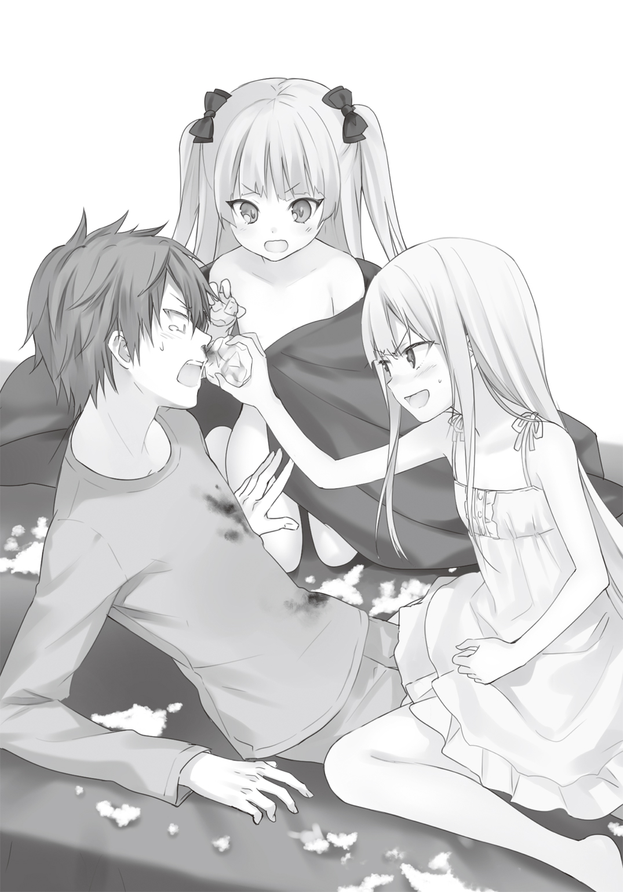
３
「百鬼タマといいます。よろしくね、お兄ちゃん！」
きゃは、と可愛いロリ声を上げながら、少女は首を傾けながら笑顔を浮かべた。
百鬼タマと名乗った幼女は、黒いゴシック衣装を身に纏っている。
黒と白のチェックが入ったラッフルスカート。グレーを基調としたブラウスには、ちょっと大人な感じの黒のレースが袖、襟に大量にあしらわれている。ウエストを強調するように巻かれたベルトに、まるで蝶が羽を広げたような白黒のリボンが小さな胸を覆い隠していた。
所謂、ゴスロリ衣装――いやこれこそゴス幼女衣装の正しい使われ方である。
彼女がどこからこんな衣装を持ち出してきたのか。それを言及する事さえ忘れ、ぽややんと俺は少女の姿に感じ入っていた。
何より左右一房ずつ束ねたツーサイドアップの髪型がいい！
時折、ひょこひょこを動いているのを見ると、たまらなく癒やされる。
「ミー君......。鼻血を拭け」
隣に座った白のワンピース姿の子猫が、新しいティッシュを差し出した。
うう。一生の不覚だ。いや、俺ってこんなに小さい女の子に耐性がなかったのだろうか。
いや......。これは百鬼タマという女の子が殺人的に可愛いからなのだ。そうだ。そうに違いない。俺がロリコンなわけがない。単に俺の美少女センサーが過剰反応しているだけなのだ。
「ミー君、改めて問おう。......これはどういうことだ？」
「いや、俺には何がなんだかわからないんだよ！」
子猫の背中から迸る殺気に気付きながら、慌てて弁解する。
俺は別に噓を言っていない。久々に一人で下校して家に帰り、寝て起きたら、事後という状態なのだ。こっちが説明してほしいぐらいである。
「お前こそ、家に居たんなら俺が帰ってきて、何をしていたのかわかるんじゃないのか？」
そうだ。先に帰ってきた子猫の方が、状況を知っているはずではないか。
俺の質問に白い頭をぷいっと背け、子猫はぶつぶつと呟いた。
「知るものか。ずっと自分の部屋にいて、ベッ――――......」
最初の方こそ聞こえたものの、段々と子猫の声は小さくなっていき俺にはよく聞き取れなかった。どうせ帰ってゲームなり、アニメなり見ていたのだろう。その証拠に、目の下には隈が出来ているし、目も充血している。
「えっと......。百鬼ちゃん？」
「タマって呼んで、奇跡お兄ちゃん」
ふふ、と天使のような笑みを浮かべる。俺はまたぽややんとなった。
「じゃあ、タマちゃん」
「待て！ ミー君」
相撲の取り組みに物言いを入れるように手を挙げたのは、子猫だった。
「君なあ......。私の時はファーストネームで呼ぶのに時間がかかったのに。なんでこの正体不明の少女のファーストネームを言うことに抵抗はないのだ」
「まあ......そりゃあ......。小さい子なんだし」
「私だって、小さいぞ」
腰に手を当て、胸を張る。いや、自慢にならんし。
「もう一度聞く。お前は何者だ？」
目くじらを立てて、子猫は迫る。
タマちゃんは今にも泣きそうな顔を浮かべた。俺の背に回り込み、ひしと俺の腕を摑んだ。
「お姉様、怖い......」
俺を盾にして、呟く。俺の腕に回された手は小動物みたいに震えていた。
「子猫、落ち着けよ。タマちゃん、怯えているだろう」
「ミー君もミー君だ。何故、突然現れ、自分のベッドに潜り込んできた少女に対して警戒しないのだ。私が同じ事をすれば怒るくせに」
「そ、それはだなあ......。タマちゃんは妹って感じだから......。小さな妹が悪戯しても怒る気にはなれないだろう。逆に子猫が入ってくると、何か犯罪臭のようなものを感じるんだ」
「は、犯罪臭とはなんだ！ 犯罪臭とは！」
「お兄ちゃん。タマは奇跡お兄ちゃんをお兄ちゃんって呼んでるけど、大きくなったら恋人にしてもいいんだよ」
「なに！ どさくさに紛れて君は宣言してるんだ！」
「奇跡お兄ちゃんは、タマの恋人だもん！」
再び俺を挟んで押し問答が始まる。
「とりあえず、お前ら落ち着け!!」
そしてまた俺の仲裁が磯風家にこだました。
猫同士の闘争のようにうなり声を上げていた子猫とタマちゃんは、同時に動きを止める。
一気に部屋は静まった。外から車の排気音が聞こえてくる。
俺はわざとらしく咳払いした後、タマちゃんに向き直った。
「タマちゃん。俺からも質問するよ。君は何者なんだい？」
タマちゃんは薄青い瞳を向けた後、少し距離を置いた。
腰の方に手を伸ばす。鞘に収まった小ぶりのナイフを取り出した。
躊躇することなく鞘からナイフを引き抜く。
朝日を受け、光を反射させる刃の部分を見て、俺は本物ではないかと疑った。
タマちゃんは右手にナイフを持ったまま、指で引っかけるようにして左のブラウスの袖をまくり上げる。再び露わになった白く細い腕をぐっと前に差し出し、刃を近づけた。
危ないぞ、と注意しようとしたその時――。
シュッ――。
あろう事かタマちゃんは、刃を腕に押し当て、躊躇いもなく引いた。
血の線が細く白い腕を横断する。
それは皮膚だけを裂いたような浅い傷ではない。まるで腕そのものを切り落とす勢いで傷つけられていた。肉が裂け、白い骨が見えている。
蛇口が壊れた水道水みたいに鮮血が傷口から迸る。神経ごと切ったからだろうか。血線から先の腕や指が力なく垂れていく。血は容赦なく部屋の絨毯を真っ赤に染め上げた。
ただ俺は見ていた。何もせずじっと――。
――止めなきゃ......。
ふと強い使命感を抱いても、身体が思うように動かない。また吐き気が込み上げてくる。
だがゆっくりと、タマちゃんの血を止めるため自分の腕を伸ばした。
「待て！ ミー君！」
肩に手を置き、子猫が待ったをかける。
振り返った。薄い紅色の瞳を燃え上がらせながら、子猫は事態を見つめている。焦りはない。冷静な科学者としての潮乃女子猫の姿があった。
再び向き直る。そして気付いた。
――傷口が再生している......。
心の呟き......。そう。タマちゃんの傷が治りかけていた。それも恐ろしい速度で。
開いた傷口から見える血管や神経、筋繊維に誰の手も借りずに結ばれていく。垂れた血は巻き上がるように腕の中に戻り、皮膚は泡のようにふくれあがったかと思うと、傷口を塞ぎ、最後には元の細い腕に戻っていた。
確かめるように指を動かし、正常に動作していることをアピールする。
どこかで見た――否――俺はこれに似た光景を生涯で二度見ている。
一つは三年ほど前。俺の義理の姉小野飯心夢が交通事故に巻き込まれた折。
そして二つ目は、つい一ヶ月ほど前――。
俺の隣にいる潮乃女子猫が、遊園地の事故に巻き込まれた時だ。
その時の光景が記憶の中から蘇る。言いしれぬ恐怖が胃の内容物とともにせり上がった。俺は必死に隠す。歯がガチガチと鳴るのを、指をくわえて無理矢理抑え込んだ。
もっとも異様だったのは、タマちゃんの表情だった。
ナイフを持ちだしてからこれまで、その表情は一度も変わらなかったのだ。
「お前、もしかして私の同位体か......？」
一連の凄惨な光景を前にしても、子猫の表情もまた変わっていなかった。
同位体――。各宇宙の歴史的結節点において、似たような役割を担う人間のことをそう呼ぶのだそうだ。世界の滅亡において、結婚という役割を担う俺もまた同位体という存在らしく、今その言葉を呟いた潮乃女子猫も各次元に置いて、似たような人間が存在するらしい。
「どういたい？ 異星体のことかな、子猫お姉様。そうだよ。タマはお姉様の同位体。この世界とは別の世界から来た潮乃女子猫なんだよ」
「ちょ！ 子猫、どういうことだよ！」
いきなり別の世界とか言われて、俺一人だけパニックになる。
少女と幼女はまるで獅子と虎のようににらみ合っていた。
「言葉通りだ、ミー君。同位体というのはほぼ無限にある並行世界において、無数に存在している。......私と心夢以外に居てもなんらおかしいことではない」
説明をした後、タマちゃんに質問をぶつけた。
「それよりもだ。どうやってここまで来た？ 次元を歪曲させるほどのエネルギーが感知されれば、こちらの探査網に引っかかるはずだ。《パンドラ》よ。よもや見逃していたわけではないだろうな？」
『私の索敵範囲内では感知できませんでした。範囲外である太陽系外から進入された可能性はあるかもしれませんが、《ガン丸》のような高速飛来物の反応を感知した形跡はありません』
機械的な声が、側に転がっていた丸いインターフェースから聞こえる。
その説明に反応したのは、タマちゃんだった。
「《ガン丸》？ そっか。次元航行機能が付いたユニットのことだね。それなら――」
立ち上がり、俺のベッドの側まで歩いて行く。するとマットレスをまくり上げた。
俺は思わず悲鳴を上げそうになった。
普段俺が寝ているマットレスの下――。
二十二世紀の未来につながっていそうな真っ暗な穴がぽっかり空いていた。
なんだよ、これ！ なに、俺のベッドを魔改造してるのこの子！
「これがタマの次元航行ユニットだよ。《次元航行潜行洞穴》って言うんだ」
いきなり幼女から難しい単語が飛び出してくる。
このことに一番驚いていたのは、子猫の方だった。
「な！ こんな無茶苦茶な！ 次元のトンネルをこんな小さく、かつ安定させるなんて！」
「あれ、お姉様は出来ないの？ 割とポピュラーの技術だと思うけど」
「なに！ ......あ、いや」と軽く咳払いし。「まあまあだな」と取り繕う。おい、子猫。額にたまった汗をぬぐえよ。
「と、ともかくだ。......タマちゃんが子猫の同位体ってのはわかった」
認めざる得ないだろう。
幻想的な容姿といい、科学に精通していることといい、何より傷口を超回復させてしまう身体の機能といい。髪の色や目の色は違うが、彼女を潮乃女子猫や俺の義姉小野飯心夢と同一ではないとは、俺には言い切ることが出来ない。
「だけど、タマちゃんがこの世界に来た理由って一体？」
「そんなのたった一つしかないよ。奇跡お兄ちゃん」
タマちゃんは微笑を浮かべた。
そして俺の腕に抱きついた。
甘い強烈な香りが、鼻腔をくすぐった。
「奇跡お兄ちゃん、タマにデレて！」
それは、これから起こることの宣戦布告を意味していた。
４
潮乃女子猫の同位体の襲来。
俺は通い慣れた通学路を歩きながら、自分なりに整理しようとした。
隣の少女は、真剣な表情で物思いにふけっている。
百鬼タマと名乗った幼女は、俺の家に置いてきた。本来なら、学校を休んででも詳しい事情を聞きたいところなのだが、子猫にはそれ以前にやることがある。
たった一人で子供にお留守番させるのは大変忍びがたい。でも家には《パンドラ》という自宅警備員がいる。だから詳しい事情は帰ってからという事になった。
大方の予想は付く。
彼女もまた、子猫や心夢姉がそうであったように、俺に世界を救ってもらいたくて、この世界にやってきたのだろう。俺の同位体がどうなったかまではわからない。だが《次元航行潜行洞穴》なんていうハイパーテクノロジーを駆使し、次元の彼方からやってきたのである。
悲しい出来事があった。そう考えずにはいられなかった。
「ミー君......。おーい、ミー君。話を聞いているか？」
薄いピンク髪の女の子の事を思い浮かべていると、耳朶に子猫の声が飛び込んできた。
「あ。すまん。なんだ？」
「やはり話を聞いていなかったのか？」と肩をすくめた後。「あの娘をどうするつもりだ？」
「タマちゃんのことか？」
俺が言うと、子猫の額に一瞬青筋が浮かんだような気がした。
どうやらまだ俺が「タマちゃん」と呼ぶのが気に入らないらしい。
「そうだ。そのタマちゃんのことだ。君はどう考えている？」
「お前と似たような理由でこっちに来たってことだろ」
「そんなことはわかっているのだ。今後、彼女をどうするか、と訊いているのだ」
「まあ......。そりゃあ......しばらく俺の家で............」
「泊めるのか？ 宿泊させるというのか。磯風家に」
「お前が言うなよ。居候のくせに」
子猫は「う」とうめき声をあげ、後ずさった。
「それにあんな小さな子を、右も左もわからない世界に放り出すわけにはいかないだろ」
「やけに肩を持つな。私の時はそんなこと一言もいってくれなかったのに」
「そうだったかなあ......」
「まあ、いい。私もあの女には訊きたいことが山ほどあるからな。......だが、事情を訊くまでだけだからな。事情を訊いたら、とっとと自分の世界に帰ってもらうからな」
頰を赤くして、ぷりぷりと怒りながら、大股で歩いて行く。
俺たちはしばし歩く。無言のまま。
そしてようやく気付いた。自分たちが喧嘩し、ただ今冷戦状態であることを。
しかし俺には一つ頭の中で引っかかっている事があった。
「あのな。......子猫。一つ訊いていいか？」
前を歩いていた少女は、真っ白な髪を翻した。顔はむくっとふくれたままだ。
やっぱり怒ってるのか......。まだ――。
「布団をかけてくれたの、お前か？」
朝、俺は布団を掛けて寝ていた。タマではないらしく、そうなれば答えは一つしかない。
子猫は息を呑んだ。顔を背け、少し身体をもじもじさせる。
「あと寝間着も......」
「ね、寝間着は！ そ、その............《パンドラ》にやってもらって」
ぽっと耳たぶが赤くなる。その反応だけで、俺はすべて察した。
「ありがとな。それと――」
俺は二、三度頭を搔いた後――言った。
「昨日は......。その......。わ、悪かったな」
別に昨日、清川さんに怒られたからでもない。
まして黒星の政治的な忠告を受けたからでもない。
ただ――ずっとこいつは俺の隣にいようとするだろう。家でも、学校でも、行きも帰りも、きっと俺の側にいようとするだろう。
だから、その......。ずっとギスギスしたままってのは、嫌だ――ていうか......。
まあ、そんな理由だ！ それ以外に他意はない。
ないからな！
俺の謝罪に対し、子猫は薄紅色の瞳を大きく開くだけだった。
何故か、その白い顔がぽっと赤くなる。温度を持った自分の表情に気付いた少女は、その顔を隠すように、俺から背けた。
「み、ミー君は......。やっぱり結婚相談部で出し物をするのは、今でも反対か？」
「それは――」
やや返答に困る質問だった。
率直に言えば、今でも俺は反対派だ。
だが折角作った今の雰囲気を、壊すことはしたくない。そう思う気持ちもある。
言葉に窮していると、子猫は口を開いた。
「私の方こそすまない......」
そこで子猫は謝罪の言葉を口にした。
「磯風奇跡という人間をずっと私は分析し続けた。君の趣味嗜好を探ろうとしたり、なんとか君の気を引こうと躍起になってきた。だから、人を信じず人から信じられない生活をしてきた君が、文化祭という集団行事に参加を拒むことは容易に想像できたはずだ。なのに、私は結婚相談部を大きくすることだけしか考えていなかった。そうすれば、君がデレる活路を見いだせると考えたからだ。でも、それは自己満足だったのだな」
「子猫......。俺は――」
「でも！」
子猫は強い調子で逆接的な言葉を叫んだ。
「でも......。それでも......。私は君と文化祭を楽しみたいと思うのは、わがままだろうか。......最初はそう――君と文化祭を回るのもいいと思っていた。けど、それだけじゃダメなのだ。君と何か一つのことを達成したい。そう強く思うようになったのだ。だから――」
「わかったよ、子猫」
「え？」
子猫はぴくりと小さな肩をふるわせる。
白い髪の頭頂部に、不意に俺の手が載ったからだ。
「まったくお前は一生懸命すぎて、たまに理解するのが難しすぎるんだ。はじめっから、俺と文化祭を立ち上げたいって言えばいいんだよ」
子猫の髪の毛をくしゃくしゃにしながら、俺は言った。
「やるか......。文化祭の出し物」
「本当か!?」
さっきまで泣きそうだった顔が、一瞬にして明るくなる。
「その代わりに、タマちゃんをしばらく俺の家に泊めることも認めてくれよな。わかるよな。お前、タマちゃんよりお姉ちゃんだし。それに同じ同位体なら、お互いの気持ちもよくわかるだろ。他人の世界に来た時の不安とかな」
「う......。..............................わかった」
たっぷり五秒ぐらい間を持たせた後、こくりと頷いた。
「よし。......けどよ。意気込んだのはいいが、場所と時間はどうするんだ？」
「それは努力するしかあるまい。......心配などいらんさ。我々は世界を救ったんだぞ」
ない胸を反って、のけぞった。
いつもの潮乃女子猫を見て、俺は笑ってしまった。
５
「お兄ちゃ～ん。お姉様ぁ。どこですか～？」
半分うとうとしかけていた四時間目の授業の最中。
少し耳にキンと来るぐらいのロリボイスが、俺の頭を覚醒させた。
はじめは夢かと思い、また重くなってきた瞼を閉じかけた瞬間――。
「奇跡お兄ちゃ～ん！ どこぉ？」
まるで迷子がデパートで両親を探すような涙声が聞こえてきた。
え？ と目を開けて、俺は頭を上げた。
すでにクラスは声の事で騒然としていた。『伊勢物語』の一節を説明していた大海原原子も、手を止めて廊下の方から聞こえてくる声に耳を傾けている。
退屈そうに頰杖をついていた子猫は、声の主に気づき、俺を見た。
「先生、ちょっと失礼します」
腰を上げ、廊下の方へ歩いて行く。その後ろに子猫が従った。
教室のドアを開け、廊下に出る。右を見ると、小さな女の子を発見した。
「タマちゃん？」
慌てて俺は駆け寄る。
ツーサイドアップにした薄ピンクの髪の少女は、壁を背にし、廊下に蹲っていた。
ゴスロリのドレスの上から、白黒の厚手のコートは着ているものの、今朝襲来したばかりの潮乃女子猫の同位体――百鬼タマで間違いなかった。
俺の声に反応したタマちゃんは、こちらを向いた。
顔を輝かせると、黒のリボンを振り乱し、真っ直ぐこちらにやってくる。
腰骨に重く響くようなタックルを俺にくらわせた。
小さな顔を俺の腹に埋めるように抱きつく。
「お兄ちゃん！ 会いたかったよぉ」
ええーん、と泣き声を上げ、タマちゃんはぐりぐりとさらに自分の顔を押しつけてくる。
「ちょ、ちょっと！ タマちゃん。その位置ちょっとび、微妙！」
ああう......。い、いけない気持ちになってくる。
「やめんか！ 小娘！」
ばちん、と上履きでタマちゃんの頭をはたいたのは、子猫だった。
「うわーん。子猫お姉様がぶったわ。お母様にもぶたれたことないのにぃ」
子猫の叱咤は逆効果だった。何故かピンクの頭が腹ではなく、どんどん下に向かっていってるような気がする。ちょちょちょちょっと待って、タマちゃん。それ以上はいけない......。
「離れろ。この泥棒猫が！」
磁石のようにくっつくタマちゃんを、子猫は無理矢理引きはがす。
「やん。お姉様のいじわる。タマはまだ甘えたい年頃なんだよ」
「黙れ！ お前は私の同位体だ。どうせ結構な年齢なのだろう？」
「お姉様ほどではありません」
「なにおう！」
二人の間に見えない炎が燃え上がる。
バックに虎と龍――ではなく、牙をむいた白猫と黒猫の絵図が浮かんでいた。
「ちょっと......。どういうことですか、磯風君？」
教室から出てきたのは、大海原原子だった。
俺のクラスの担任で、割と人気の高い女教師。結婚相談部の顧問もしている。
ちなみに三十四歳独身。
大海原はトレードマークの眼鏡をキラリと光らせ、見慣れない子供の姿を認めた。
「この子は？」と眼鏡をぎらつかせ、俺の方を見る。
あれ？ なんかこの展開はどこかで見たような気がする。
「こんにちは、先生。お兄ちゃんの家に一緒に住んでる百鬼タマっていいます」
ぺこりとお辞儀する。
愛くるしい声と所作に、思わず大海原は「よく出来ましたねぇ」と頭を撫でた。
数秒後、菩薩のような顔をしていた大海原の顔が一転、般若の形相へと変貌した。
青筋を浮かべ、再び俺に近づく。
「どういうことですか？ 磯風君」
「いや、どういうことですかって言われても......」
「確か磯風君は、潮乃女さんとも同棲していると言ってましたね」
同棲、という言葉を殊の外強調し、大海原（三十四 独身）は眼鏡の奥から睨んでくる。
「ま、まあ......。それは家庭の事情で」
「まさか！」
手を「グワシ！」の形にして、身をのけぞらせ、大海原の背後に雷鳴が轟いた。
「まさか！ 潮乃女さんと磯風君の愛の結晶！」
「――なわけあるか！」
「いや、その......。私としては、磯風君とその............子供を......までは、まだ――」
「お前も動揺してんじゃねぇよ！」
俺は大海原と、横で顔を真っ赤にさせてもじもじしている子猫にツッコんだ。
落ち着け担任よ！ 想像の翼が羽ばたかせすぎて、言動が酸欠状態で朦朧としているイカロスみたいになってるぞ！
この独身女は、結婚、妊娠、幸せ、同棲、子供、リア充という言葉に強く反応する。
大海原のこういうところが非常に苦手だ。ナイーブすぎて手が付けられん。
「タマ。お前、一体何をしにきたのだ？」
俺が大海原をなだめている横で、子猫は改まって尋ねた。
するとタマちゃんは、風呂敷に包まれた物体を取り出した。
同時に何やらいい匂いが漂ってくる。
「タマちゃん、それって？」
「お弁当を持ってきたよ。お兄ちゃん」
満面の笑みを浮かべながら、タマちゃんは風呂敷包みを掲げた。
６
昼休みになった。
俺と子猫は、タマちゃんを連れてひとまず結婚相談部の部室にやってきた。
タマちゃんが持つ風呂敷包みから漂う匂いが、一瞬で小さな部室を支配した。
俺と子猫は仲良く腹を鳴らす。
事情を訊く前に、とりあえず昼飯にすることになった。
「お兄ちゃんのために、タマ......精魂込めて作ったんだよ」
風呂敷をほどきながら、「きゃは」とかわゆい笑みを浮かべる。
俺がその笑顔に癒やされていると、隣に座った子猫が足を思いっきり踏んづけてきた。
鼠小僧が担いでいそうな唐草模様の風呂敷を広げる。
現れたのは二段に重なった黒塗りの重箱。
俺の期待がますます膨らむ。漂ってくる匂いも申し分ない。
タマちゃんはおもむろに一段目の蓋を開けた。
「おお！」
思わず歓声を上げる。
一段目の重箱には、おにぎりがそえられていた。
しかもただ握ったというものではない。紫蘇ふりかけをまぶしたおにぎり。青のり、そして鮭フレークの三種のおにぎりが、食べやすいサイズに丸められて重箱一杯に詰まっていた。
紫、青、赤という彩りは申し分なく、紫蘇の香りがほのかに漂ってくる。
お腹の虫が、早く食べさせろと急かした。
「ふ、ふん。......おにぎりぐらいなら、私でも作れるぞ」
涎を垂らさんばかりに、顔を輝かせる俺の表情を見て、子猫は頰を膨らませた。
「もちろん、おかずもあるよ」
今度はタマちゃんは、一段目を持ち上げ、二段目を開いた。
色とりどりの食材が目に飛び込んできた。
トマトであえたショートパスタ。その隣には紫蘇の葉の天ぷらだろうか。何枚も折り重なって置かれている。さらにきつね色に揚がった唐揚げは食欲を促進させた。全体的に重い色が揃った重箱に、小さく切られたブロッコリーが目に優しい色に変えてくれている。
徹頭徹尾――どこから見てもお弁当。しかも家庭で作るようなレベルの代物ではない。
そのままレストランにでも置けそうなほどのハイクオリティ。その弁当が、テーブルクロスも何もない長机に降臨していた。
先ほどまで強気だった子猫も、二段目を見て言葉を失っている。
ごくりと生唾を飲む音が、俺のところまで聞こえてきた。
「本当なら、お兄ちゃんとお姉様のお弁当を、朝のうちに作っておきたかったんだけど、タマお寝坊したから、間に合わなくて。だから届けにきたの......」
こつんと自分の頭を叩き、タマちゃんは軽く舌を出した。かわゆい......。
「あ、味はどうなんだ？ 香りとか彩りよりも、味が問題だろ」
締まりがない俺の顔を見て、子猫はますます顔を赤くする。
タマちゃんは「どうぞ、お姉様」とエンジェルスマイルを炸裂させ、割り箸を差し出した。
仏頂面のまま子猫は受け取る。八つ当たりするかのように大きな音を立て、箸を割った。
弁当箱の中で、一際インパクトがあるこんがり揚がった唐揚げを摘み上げた。
ゆっくりと口元に持って行き、パクリと一口で食べる。
味を吟味するように咀嚼した。
「ん！」
感動と驚きが混じったような声を上げた後、子猫は大きく薄紅色の双眸を見開いた。
「んまあああああああああああああああああああああああああああああああああい！」
味王もびっくりの叫声は、部室棟の壁を突き壊すような勢いで広がった。
「なんだ、これは！ こんなうまい唐揚げ、初めて食べたぞ。近くのスーパーで売っている唐揚げをオーブンで温めて、食べるのがこの世で一番うまいと思っていたが、これはなんだ。表皮はカリカリでサクサク......。なのに、中はとってもジューシー。しかも何かこれは野性味を感じる。山で鍛えられた感じの野性味がぁ!!」
今にも目から鱗を落とさんばかりに子猫は感動している。というかなんだよ、その食レポ。スーパーの総菜と手料理を比べるなよ。磯風家の食事情がもろにばれるじゃねぇか。
子猫の食レポを聞いて、ますます食欲が増進される。待ちきれず、タマちゃんになんの断りも入れずに唐揚げを摘み上げた。一気に食らいつく。
「うまい！」
「やったあ」
俺の言葉と顔を見て、タマちゃんは万歳する。
「たくさんあるから、どんどん食べてね」
重箱ごと俺に差し出した。
俺と子猫は三日ぐらい何も食べていなかったみたいに、弁当を貪り始める。
実際、家ではあまりいいものを食っていなかった。なので、こんな手の込んだものを食べるのは久しぶりだったのだ。
子猫の言うとおり、特に唐揚げは絶品だった。
衣はサクサク。少し肉が硬いような気がするが、嚙み応えがあって俺は好きだ。
そういえば、鶏肉の臭みみたいなのがあまりない。何か違う肉だろうか？
俺は不思議に思って、タマちゃんに尋ねる。
彼女は事も無げにこう答えた。
「兎の肉だよ、お兄ちゃん」
ザ・ワールド――！
一瞬――いや、五秒ぐらい時が静止した。
世界がセピア色に染まったような気さえする。
「うさぎの......にく......？」
「うん。......野山に入って獲ってきたの。私が捌いたんだよ。偉いでしょ」
さらに十秒静止。
その時、俺の脳裏には幼気な野生の兎が、サバイバルナイフを持った幼女に襲われているシーンがリピート再生された。
「タマちゃんが、捌いたの......？」
「うん？ あれ、お兄ちゃん。兎の肉って嫌い？ フランスじゃごく一般的に食べられてるんだよ。高級食材なんだよ」
にぱあ、と笑顔を浮かべる。うん。可愛い――。
俺は気を取り直す。そうだ。彼女は高級食材を俺たちに食べさせようとしてくれただけだ。
だから、兎の肉を黙って弁当の食材にすることは、決して悪いことではない。
タマちゃんなりの気遣いなのだ。
俺はそう自分に言い聞かせ、唐揚げはやめて、天ぷらに食指を伸ばした。
見たところ普通の紫蘇の葉の天ぷらだ。唐揚げと同じくサックリと出来上がっている。
恐る恐る口に入れてみた。
うん。うまいうまい。
特に問題なく、サクサクとスナック感覚で食える。
だが、なんというか思ってたよりも、紫蘇の甘酸っぱさが伝わってこないというか。ちょっと筋っぽいというか。というか、紫蘇の葉っぱって、周りがギザギザしてるけど、これは丸いんだが......。
タマちゃんに聞いてみた。
「イノコヅチだよ」
思わず吐きそうになった。
イノコヅチ。学名アクリエンテス・ジャポニカ。ヒユ科イノコヅチ属の多年草。夏から秋にかけて生息。割と野山とか行ったら、一本は生えてる食草。
後で図鑑を開いたら、こんなことが書いてあった。植生が適当だな、おい......。
食べられるのはいいけど、さっきから野山レパートリーが多くない？
自然のものを食べられるのは、ある意味贅沢かもしれないけど、俺の胃にはちと高級すぎるんだが......。
「おい。これはなんだ？」
偉そうに質問したのは、子猫だった。
トマトのパスタと一緒に和えられていた赤い身の詰まった部分を摘み上げる。
俺は目を細めて、自ら分析した。カニカマのように見えるが......。
一口入れると、普通にうまい。ぷりっとした食感がパスタとあっていた。
「ザリガニだよ」
ぶー！ 今度はさすがに吐いてしまった。
「やはり」と得心したのは子猫だ。「懐かしい味だったので、つい夢中になってしまった」
パクパクと口に入れていく。
そうなのだ。先ほど潮乃女子猫は、兎だのイノコヅチだのザリガニだのと横で聞きながらも、全く手を止めず弁当を食している。
なんというか、この二人の同位体にとっては、割とポピュラーな食材なのかもしれない。
ところで子猫よ。お前、さっきまで不満たらたらだったじゃねぇか。あっさり食べ物で懐柔されてんじゃねぇよ。
結局、俺たちは完食してしまった。
食材はともかくとして、料理はうまかったのだ。
ふくれた腹を軽く叩きながら、俺と子猫が一服する。
すると部室の中を物珍しそうに見ていたタマちゃんが、声を上げた。
「お兄ちゃん達は、文化祭の出し物を決めているの？」
ホワイトボードを見て、尋ねる。昨日の議論した痕跡がそのまま残されていた。
「タマちゃんの世界にも文化祭ってあるの？」
「うん。あるよ。学校っていうシステムも残ってる。タマは......参加したことないけど」
いつも元気一杯のタマちゃんの顔に少し影が差す。
悪い事を訊いてしまっただろうか。
「なあ、タマちゃん。......タマちゃんなら、文化祭で何がやりたい？」
話題を変えるため、俺は何も考えず彼女に尋ねてみた。
「え？ うーんとね......。なんでもいいの？」
顔をのぞき込んでくる。俺は首を縦に振った。
指を唇に当ててしばらく考え込む。
一分ほど待ってから、タマちゃんは「そうだ」と両サイドに束ねた髪を、ピンと伸ばした。
「じゃあ......。じゃあ、お姫様がやりたい！」
「「はあ？」」
「お姫様を王子様が助けに行く話！」
「それはつまり、演劇ということか？」
子猫が確認する。白桃色の髪を大きく揺らしてタマは頷いた。
「いや、それは......ちょっと――。時間が――」
「......良いかもしれない」
タマちゃんに敵愾心を持っていたはずの子猫が、珍しくその意見に同調した。
「ちょっと待て、子猫。......俺たちには時間と場所が――」
ない、と言い切ろうとした瞬間、唐突に部室のドアが開いた。
「いたいた。こんなとこにいたのね」
少し息を切らして、入り口の前に立っていたのは、岳東リニアだった。
手には何やら書類を持っている。
矢継ぎ早に用件を言おうとしたリニアだったが、タマちゃんの姿を認めて口を噤んだ。
「あんた......」
いきなり重苦しい雰囲気が流れる。
じっとリニアは幼女を見つめている。タマちゃんは己の身を守るように胸の前で手を組んだ。
入口のレールをまたぎ、一直線に正体不明の幼女の前までやってくる。
何やら嫌な予感がした。俺はリニアの動きを止めようと、肩に手をかけようとする。
だが一瞬、彼女の方が速かった。
「かわいいぃぃぃぃ！」
タマちゃんに抱きつき、まるでぬいぐるみを可愛がるがごとく頰ずりする。
何が起こったのか理解出来ず、タマちゃんはされるがままだ。いや、リニアの抱きしめる力が強いのだろう。若干顔が青い。口から「ぎ、ぎ......ぐ......」とエイリアンみたいな声を漏らすものの、何かのスイッチが入ったリニアを止めることは出来ない。
「ちょっと！ この子、何者？ まさか――」
ギロリと俺を睨んだ。
「まさか、あんたまた監禁を！」
来たよ！ 監禁ネタ！ なんか久しぶりだな、おい！
「違うわ！」
俺は烈火のごとく否定した。そして簡単に事情を説明する。
「なるほど。子猫の同位体かあ。そう言えば、なんだかちっちゃい頃の子猫に似てるわね」
一旦引き離しては、タマちゃんの顔を確認し、また抱く――という動作をリニアは繰り返す。
完全に動作と反応が、小さな子供を見つけた時のおばさんの反応だ。
隣を窺う。子猫がリニアとタマちゃんを見つめていた。
無駄にプライドの高い子猫である。自分の同位体がちやほやされているのを見て、内心穏やかではないだろう。リニアのさっきの発言だって、普段であれば「私の方が可愛かったぞ」とか言うようなものである。
「どうした？」と俺は子猫に尋ねた。
「あ、いや......。その、だな。............なんか、リニアに会った時のトラウマが――」
トラウマ――!?
ああ、なんか聞きたいような聞きたくないような......。今のリニアとタマちゃんの状況を見て、予想が付くような......。
しかし、このまま放っておくわけにはいかない。すでに幼女の息が浅いような気がする。
「おい、リニア。なんか報告があったんじゃないのか？」
俺が声をかけると、リニアは「あ」と声を上げた。
タマちゃんを抱いたままずっと持っていた紙の束を掲げる。
「見つけたわよ。空いてる場所と時間を！」
どうだ！ と言わんばかりにリニアは得意げに鼻を鳴らした。
７
その日の放課後。
集まった結婚相談部員たち＋タマちゃんは、リニアに連れられ、中庭にやってきた。
昼休みのうちにタマちゃんを家に帰すつもりだったが、小さな子供を一人で帰すわけにはいかない。仕方なく授業が終わるまで保健室で預かってもらい、今に至っている。
そのタマちゃんは、リニアに手をつながれ、げっそりとしていた。表情には「これなら帰った方がまだマシだ」と不満がありありと浮かんでいる。
朝庭高校の中庭は、県立の高校とは思えないぐらいよく整備されていた。
中央の噴水は勢いよく水をふきだし、そこから四方に伸びた地面は煉瓦道になっている。びっしり詰まった煉瓦の間から雑草が生えてくる様子もない。四隅には柔らかな芝生と背の低い椿が植えられていた。
いくつかベンチが置かれているが、利用者はいない。今日は肌寒いからだろう。
「ここよ」
リニアが指し示したのは、噴水のド真ん前だった。
「ほう？ なかなか良い場所ではないですか？ 人通りも多く。アピールする場所としては絶好のロケーションかと思われますが......」
最初に褒め言葉を述べたのは、意外な事に黒星だった。
「うん。すっごくいいよね」と清川さんが追随する。
「こんなところでやっていいのか？ ......お前、マジで無辜の善良な学生たちを殺が――」
「――なわけないでしょ！ キャンセルがあったのよ」
リニアの話に寄ればこうだ。元々近くの商店街の有志が、毎年朝庭高校の文化祭のためだけに一芸を披露する場所だった。しかし高齢と病気がちの人が多く、満足いく練習が出来ないため、先ほどキャンセルする連絡があったのだという。
「神は私たちを見放さなかったというわけね」
それ、魔女とか言われてるヤツがいう台詞かよ。
「で――。何やる？ まあ、時間を延ばすことは出来ないけど。まずは場所を確保したわ」
「その話なのだが......。演劇をやろうと思う」
「「「「演劇!!」」」」
初めてそのことを聞いたリニア、清川さん、黒星、おまけに土越が声を揃える。
驚くのも無理はない。
演劇というのは文化祭の演目としては割とポピュラーだ。だが、準備には時間がかかるし。映画と同じくシナリオが必要になる。台詞も所作も覚えなければならない。
はっきり言うが、とても七日――いや六日で出来るものではない。
「うん。私は賛成！」
手を上げたのは、清川さんだった。ついで――。
「私も......。面白いと思う」
リニアが倣う。
「ちょ、ちょっと待ってくれ。清川さん、リニアも......。考えてもみろよ。もう六日しかないんだぞ。どうやって準備するんだよ。台詞だって」
「朗読劇......というのはどうだろうか？」
提案したのは「演劇をやる」と発案した当の子猫だった。
「台本を見ながらなら、台詞を覚えることもない。たいしたセットも必要ないはずだ」
「なるほど。朗読劇ですか。......ならば」
と黒星が手を上げた。
「でも、シナリオはどうするんだい？」
土越よ。たまにはいいこと言うじゃねぇか。
そうだ。その通りだ。あらすじだって決まってないんだぞ。今からどう考えても――。
「私がやる」
大きく手を上げたのは、清川さんだった。
「清川さん、でも！」
俺は知ってる。実は清川さんは今すごく忙しい。毎日のように部室に顔を出しているが、彼女はクラスの出し物で、服を作る担当をしている。しかもかなり難しいところをやっていて、休み時間やお昼休みはずっと裁縫をしている。
そんな彼女にこれ以上の負荷を与える事は出来ない。
「やらせて、磯風君」
彼女の真っ直ぐな瞳が俺を射貫いた。
その真摯な眼差しに、出かかった反論を思わず呑み込んでしまう。
「心配無用です、磯風奇跡。私が働きかけて、少し彼女の負担を軽くしましょう」
結婚相談部の部長にして、俺のクラスの委員長でもある黒星が口を挟んだ。
「ホントに大丈夫なのか？」
「......私の統率能力を疑うのですか？」
黒星の能力は十分理解している。
だが、万が一――いや、億が一ということもある。無理はしてほしくなかった。
「わかった。そこまで言うなら、俺も賛成だ」
子猫の顔が輝くのを目の端で捉えつつ、俺はもう一度清川さんの方を向いた。
手の平を合わせて、顔をほころばせている姿は、眩しいぐらい可憐だ。
「では、早速......。どんな話にするかだが」
「それはもちろん......。ラブロマンスだよね、お姉様」
意見を出したのは、タマちゃんだった。
子猫は大きく頷き、同意した。
「ラブロマンスって......。女役はともかくとして、男役はどうすんだよ......」
「そんなの決まっているだろう」
子猫はじっと俺の方を見た。
ついで部員全員とタマちゃんがこちらの方を向く。
「待て！ 俺は清川さんのサポートに回る方が――」
「ミー君......。そもそもこの結婚相談部を作った理由はなんだ？」
「う――。それは......」
答えたくなかったが、皆から受ける無言のプレッシャーに俺は負けた。
「磯風奇跡を、潮乃女子猫にデレさせる......ことです......」
「そうだ。誰が何の役をやるなんて決まってることだろうが」
「まあ、そうなるでしょうね」と黒星はギラリと眼鏡を光らせ。
「磯風君。ファイト！」と清川さんからはエールを送られ。
「磯風君。ファイト！」と土越からは呪いの言葉を贈られた。
マジかよ......。
「で、やっぱりこいつの相手役は子猫なわけ？」
若干言葉に嫌そうな空気を詰まらせながらリニアは尋ねた。
「それはまあ――」
「もちろん、タマだよね」
「なに！ タマ！ 聞いていたのか？ ミー君は私にデレると言っているのだ。私とミー君がやるのが一番正しい。......外部の人間がしゃしゃり出てくるな。そもそも君はこの学校の人間ですらないのだぞ」
「聞いていたよ、お姉様。......でも、タマだって潮乃女子猫の同位体だよ。資格は十分あるはずだよ。ね。お兄ちゃん」
にぱあ、と笑みを浮かべた。俺は訳もわからず「そうだね」と頷く。
直後、電撃がお見舞いされたのは、言うまでもない。
タマちゃんの言動を聞いた部員達がざわめく。
俺は簡単にタマちゃんの素性を話した。
もっと驚くかと思ったが、さすがは結婚相談部の面々だ。あっさりと俺の話を理解してしまった。清川さんに至っては「宇宙人二号だね」とこのノリである。
「じゃあ......勝負しよ、お姉様。どちらがお兄ちゃんにふさわしいかを」
「面白い！ 受けてたとう！ 小娘め！ 後で吠え面をかくなよ！」
二人は火花を散らす。そしてバックには、縄張り争いをする二匹の子猫の絵が......。
こうして子猫とタマちゃんの激しいヒロイン争奪戦の火ぶたは切って下ろされたのである。
第三章 磯風奇跡争奪戦
１
「ああん......。そこはダメです。お姉様！」
狭い空間内で幼女の艶やかな声が響いた。
「ふん。甘えた声で頼んでも無駄だぞ。......本気にさせたのはタマ、お前だぞ」
緊張した少女の声が、同じ空間に広がる。
「しかし――。あ、その！ ああ、大きいのは............ずるい」
「ほう。どうやら初めてのようだな」
「......そんな、こと......。い、いえないよう......」
「タマ......。お前は私の虜になればいいのだ」
「虜って......。いいえ。ここから本番だからね！」
「なに！ 見失った。......暗くてよくわからん！」
「後ろだよ」
「――んん。くぅ......。......少しは加減をしろ」
「ごめんなさい、お姉様。......タマ、久しぶりだったんだよ」
「なに、やはり経験者か！ ......私はその......はじめてなのだ」
「......え？ そうなの？ でもお姉様......。タマは加減しないよ」
「んん！ くあ！ ......速い！ なんとういう運動性だ！ だ、だいじょうぶなのか......」
「お姉様......当たらなければどうということはないんだよ！ ......あ、当たった！」
「まさか当たったのか！」
「うかつだよ、お姉様。......無傷で手に入れてあげるんだから！」
「それはこっちも同じ！ ......あ、しまった。あ、あ、もうダメ......。らめぇえぇええ!!」
お前ら、もうちょっと静かにしろよ!!
俺の絶叫が隣家までこだました。
潮乃女子猫と百鬼タマが一斉にこちらを向く。
手にはゲームパッドが握られていた。
次の瞬間――テレビのスピーカーから、リアルな爆発音が轟く。
テレビ画面のロボットが、爆炎を上げながら、その場に静止した。
画面が薄暗くなり「戦闘不能」という文字の後、「２Ｐ ＷＩＮ」という文字が閃いた。
「やったぁ！ タマの勝ち！」
ゲームパッドを放りだし、喜んだのはタマちゃんだった。
負けた子猫はがっくりとうなだれる。かと思えば、顔を上げて、瞳に灯った怨嗟をぶつけるがごとく、俺を睨んだ。相当悔しかったらしい。薄紅色の瞳には涙がにじんでいる。
「ミー君！」と大きな声を上げた。「君は一体どっちの味方なのだ。あと一撃！ あと一撃当てることさえ出来れば！」
ヤマトに破れた悪役みたいな台詞を吐き、再び子猫はうなだれた。
とりあえずその前に俺が言いたいのは、変な声を上げながらゲームするなよってことだ。
隣家に聞かれたらどうするんだ！ リアルに人生オワタじゃねぇかよ！
タマちゃんはぴょんぴょんとウサギみたいに跳ねながら喜ぶ。とたとたと俺の方に走り寄り、ラグビー選手みたいにタックルをかまして、抱きついてきた。
「どう、お兄ちゃん！ タマ、うまかった？」
「あ、ああ......。タマちゃん、料理だけじゃなくてゲームもうまいんだね」
「うん！ お兄ちゃんといつか対戦したいなって思って、午前中に覚えたんだよ！」
すげぇな。あの手の込んだ弁当を作った上に、ゲームの練習までしていたのか、この子。一体どこまでハイスペックなんだよ。
「待て」
ゆらりと立ち上がったのは、子猫だった。
「勝負はまだついてないぞ！」
なんだかバトル物のラストみたいな台詞を叫ぶ。
一人胸熱状態だが、俺の周りに魔王がいるわけでも、人間の存在が嫌になった破壊神がいるわけでもない。あるのは、二十畳ほどのリビングと、三十二型の古い液晶テレビに、ゲームがあるぐらいなものだ。
「お姉様......。タマは何度だって、相手になるよ！」
タマちゃんは敢然と立ち向かった。
「ふふ......。タマなら言うと思ったぞ！」
ちょっと待てよ。俺的にはぬるいラブコメ的な展開だったと思ったのに、なに？ この雰囲気。中二バトルから今度はスポ根みたいな台詞を話し始めたぞ。
「勝負はどうするの、お姉様」
「それは――」
少女の瞳に、真っ赤な炎が閃いた。
「お背中流しだ!!」
２
磯風奇跡争奪戦と名付けられた勝負は、俺たちが学校から帰ってくるやいなや開戦した。
一回戦は料理勝負だった。
もう説明しなくてもわかるだろう。
タマちゃんの勝ちだ。
制限時間は一時間。あの往年の名番組を彷彿させるような時間制限の中で、彼女は見事手ごねハンバーグとコーンスープを作りあげた。しかも絶品。さらに材料に至っては、兎の肉でもワニでもなく、ちゃんと牛を使ってくれたのだそうだ。
後で聞いた話だが、近くの牧場から牛一頭が忽然といなくなったらしい。
......きっと宇宙人に殺されたんだろう。うん......。そうに違いない。
まあ、解説するまでもないが、子猫の方はというと、こちらもハンバーグ――なのだという。
身がカチコチになるまで焼かれ、見た目も悪く、グロい。
もうはっきり言って、○○コにしか見えなかった。
加えて説明しておくと、子猫の格好はあのデスメタル仕様のガスマスクである。
火炎放射の炎が、築十年の家の壁を焦がした時、我を忘れて叱責した事も付け加えておこう。
先ほどのゲーム勝負が二回戦。
この世界のゲームに不慣れなタマちゃんが不利かと思われたが、奇跡の逆転勝利という幕切れで、連勝を飾った。
後がなくなった――といっても、この不毛な戦いが何回戦あるのかは俺も知らないのだが――子猫は第三回戦を提案する。
そして俺は何故か少女と幼女に、素っ裸にされているという奇妙奇天烈な状況に追い込まれていた。
「頼む！ せめてトランクスぐらいはかせてくれ」
「何を言っているのだ、ミー君。風呂に下着をはいて入るなんてマナー違反だろ」
「そうだよ、お兄ちゃん。だから早く脱いで！」
ゴムを引き裂かんばかりの勢いに、二人の娘たちはトランクスを引っ張る。
子供の力とは思えない膂力に何とか抗しながら、俺は最後の砦を死守する。
が――。
すでに脱いでいた上着に足を取られ、素っ転んだ。
倒れながら、はらり、とトランクスが浴室に舞うのを、俺は視界の隅に捉えていた。
３
からりと浴室の引き戸が引かれる。
俺は入り口に背を向けて、絶対に後ろを振り返らないようにした。
「えっと。まずは誰だ？」
「私だ」
高いながらも、落ち着いた調子の声が聞こえた。
壁に反響してくぐもってはいるが、潮乃女子猫で間違いないだろう。
子猫はそれ以上何も言わなかった。緊張しているのだろうか。
スポンジにボディソープを付けて泡立てる。キュキュとこする音が聞こえてきた。
俺は一瞬だけ後ろを振り返る。
が、子猫がこっちを見たような気がしたので、慌てて姿勢を戻した。
「子猫......。お前、もしかして裸か？」
「う、うむ。......さっきも言ったと思うが......。ま、マナー違反だからな」
俺としては、せめて水着かバスタオルぐらいは巻いてきてほしかった。
「それに......今さら、恥ずかしがることでもないだろう。君は一度、私の裸を......その......」
そうなんだよな。俺......見ちゃってんだよなあ、子猫の裸を。しかも会ったばかりの時に。二ヶ月ぐらい前のことなのに、随分昔のような気がする。
あ、やばい。思い出したら――その、下半身が......反応を............。
「では、行くぞ」
子猫は俺の背中にスポンジを当てた。そしてゆっくりと上下に流し始める。
しばし俺たちは無言だった。
なんとも気恥ずかしい気持ちになる。
自然と顔が赤くなる。単に人が背中を流しているだけなのに、だ。
お互いが裸という事もあるだろう。
けど、なんというか......。......ああ、くそ！ ボキャブラリーが足りねぇ。
とにかく恥ずかしいのだ。
「ど、どうだ？ き、気持ちいいか？」
「お、おう......」
確かに気持ちいい。てか、他人に背中を流してもらうのってこんなに気持ちがいいの？
まるで最高級のマッサージを受けているかのようだ。
子猫の力加減も絶妙だった。
本人は一生懸命やっているだけなのだろう。だがそれがちょうど良い加減なのだ。強すぎず弱すぎず。程よい刺激を背中に与えてくれている。垢と一緒にたまりにたまったストレスさえ、洗い流されていくようだ。
ふと俺は昔同じような感覚を受けた事を思い出した。
まだ心夢姉との同居生活が始まった頃。
よくこうして心夢姉が背中を流してくれたっけ。
「ふふ......」と俺は思わず笑みを浮かべる。
「どうした？ くすぐったいのか？」
「いや、何でもない」
子猫には言わない方がいいだろう。心夢姉の事になると結構意識するようだしな。
「なあ、子猫。お前も流してやろうか？」
気付いた時には、何故か俺はそう口走っていた。
あまりに背中を流すという行為が気持ち良かったのだろう。お互い裸であるという羞恥心よりも、お背中流しを布教したいという願望の方が一瞬勝ったらしい。
俺の提案なんかに子猫は乗らないだろう――そう思っていたが......。
「じゃあ............。お言葉に甘えて......」
「え？ ええええええ？ マジか？」
「き、君が言ったんじゃないか！」
ま、まあ、そうなんだけどさ。
――と言うわけで、今度は俺が子猫の背中を流すことになった。
俺は極力子猫の裸を見ないようにし、彼女は抗菌加工されたバスチェアに座った。
スポンジにソープを付け、泡立てる。
なるべく目を背けつつ、位置を確認するためちらりと子猫の方を見た。
湿り気を帯びた白い髪が見える。
「子猫......。悪いが、髪をどけてくれないか」
「ああ、そうだな。すまない」
子猫は長い髪を束ねて一房にし、前に流した。
小さな背中とうなじが露わになる。
白!!
思わず心の中で唸ってしまった。
子猫の肌は、芸術家がこぞってモデルにしたがるような、一級品の白さである事は承知していた。こうして改めて見るとダ・ヴィンチの『モナ・リザ』やゴッホの『ひまわり』を前にしたように、圧倒されてしまう。見た事ねぇけど......。
お湯をかけたらそのまま溶けてしまいそうな肌。触る前からその抱き心地が想像できるような柔らかでたおやかなスタイル。薄く浮き出た肩甲骨の張り出しにさえ、美を感じてしまう。
以前、その少女の隅々まで俺は見たのだ。あの時もっとちゃんと見ておけば良かった――いやいや、俺は何を言っているのだ。相手は仮にも小学生並みの子供だぞ！
その芸術品に俺は今、手を入れようとしている――。
そう思うだけで、微妙に手が震えてきた。
とその時、俺は気付く。
子猫の肩が少し震えていることを......。
緊張しているのだ。
なんだか、その姿を見てると、自分がしっかりしなければと妙な使命感が沸いてきた。
「行くぞ」
泡立てたスポンジが、真珠のように滑らかな肌に触れる。
ぴくりと子猫が震えた。
「ちょっと！ お姉様！ いつまでお背中流しをしてるの！」
前触れもなく浴室の引き戸を開けたのは、タマちゃんだった。
俺と子猫の状況を見るや、目尻を尖らせた。
「ずるい！ お兄ちゃんに背中を流してもらうなんて！ タマもしてぇ！」
俺の背中にダイブしてくる。
くるりと俺の首に手を回し、後ろから抱きついた。
「で・も！ まずお兄ちゃんのお背中流しをしてあげるね」
言うやいなや、タマちゃんは自分の胸を密着させながら、すりすりとさすり始めた。
「ちょ、ちょっと待って！ タマちゃん！」
タマちゃんのちっぱいがあ――。どころではない！
少し浮き出た胸骨の感触が。
人肌のぬくもりが。
そして膨らみかけた小さな胸が。
ちょっと硬くなったアレが！
百鬼タマという感触が、俺の背中だけでなく、全身を刺激した。
い、いや、これはまずい！ 非常にまずいって！
俺は前のめりになり、なんとかこらえる。
もはやタマちゃんをふりほどくのに力など使えない。全力だ。全力で膨張を防ぐ。
「ごらぁ！ タマ！ な、ななななな、何をやっているのだ！」
振り返った子猫がタマちゃんに怒りをぶつけた。
「お背中流しだよ、お姉様。それ！ すりすりすりすりすりすり！」
ひぎゃー！ もうやめて！ らめぇ！ 大きくなっちゃうから。
俺の分身が熱くなっちゃうから。
もはや地獄！ いやある意味天国だけど......。
これなら《パンドラ改》の電撃を受けている方がまだマシだ。
「あ、磯風君......」
さっきまで騒ぎ立てていた子猫が、素の声で俺の名前を呼んだ。珍しい事にいつもの「ミー君」という愛称ではなく、会ったばかりの呼び方で。
「お、大きい......」
「だあああああ！ 見るなあ！ 見るなよ！」
顔を手で隠し身もだえる。しかしタマちゃんは攻勢を緩めない。自分の胸をおろし金のように押しつけ、タマちゃん流の背中流しを続行する。
「き、君は何を欲情しているのだ！ 相手は小さな女の子なんだぞ！」
怒りの矛先はタマちゃんから俺に向けられた。
真っ白な顔は茹で上がったタコよりも真っ赤だ。
「待て！ これは不可抗力だ！」
話せばわかる！ と俺は手で彼女を制する。だがもちろん怒りが収まろうはずがない。
「《パンドラ》！」
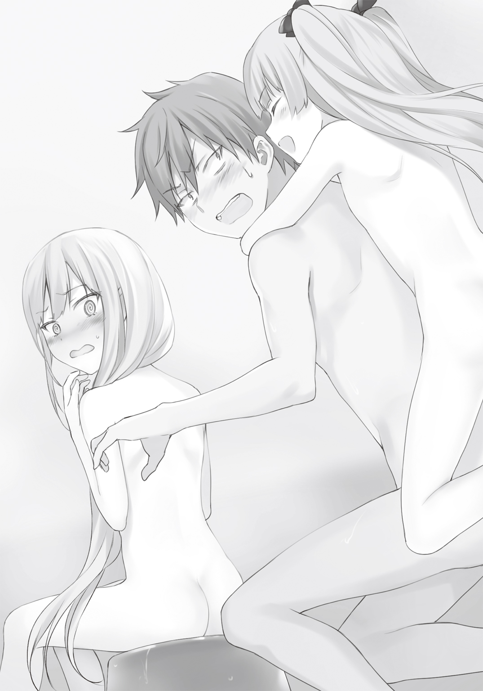
と呼ぶと、某有名なロボットアニメのインターフェースが浴室に飛び込んでくる。
真っ白な《パンドラ》は、ジャキッと音を立て、電撃を放ちそうな兵器を展開した。
「10まんボルト！」
「待て。こんなところで、電撃を放ったら！」
俺は叫んだ。
だが、遅い！
電撃は俺は浴室の水に伝播し、タマちゃんと子猫までも巻き込んだ。
三回戦『お背中流し』――引き分け！
４
四回戦『耳かき』。
嫌な予感しかしないのだが......。
「さあ、ミー君」「さあ、お兄ちゃん」
「私の膝枕に身をゆだねたまえ」「タマの膝枕にのって」
二人は同時にパンと自分の膝小僧を叩いた。
ちなみに子猫はいつもの白いワンピース。タマちゃんはというと、妙に大人っぽい黒のネグリジェのような寝間着を着ている。
「その前に尋ねたいんだが......」
「なんだ、ミー君」「なあに、お兄ちゃん」
「耳かきをやったことがある人？」
挙手を促すように、俺は軽く手を挙げてみた。
しかし二人の少女はただ満面の笑顔を返すのみ。
「なるほどな」
............しばし沈黙。
そして何故か三人とも笑った。
俺は脱兎のごとくリビングを飛び出す。
「あ！ ちょっと待て！ ミー君！」「お兄ちゃん、待って！」
二人は追いかけてきた。
耳を塞ぐ。このままでは俺の三半規管が危ない！
転がり込むように自室に入る。ドアを閉め、押さえつけた。
不幸にも、部屋には鍵というものがついていない。
こんなことなら、早めに付けておくべきだった！
追撃は早くもやってきた。
「ミー君。開けろ！ 大人しく耳を掃除させるのだ」
「そうだよ！ タマの耳掃除。きっと気持ちがいいよ！」
そりゃそうだろう。
二人の美少女が膝枕してくれた上に、耳かきまでしてくれるのだ。
きっと気持ちが良すぎて、目が覚めた時には天国にいるかもしれないがな。
子猫とタマちゃんは追撃を緩めようとしない。
二人で体当たりしてきた。戦争中だというのに、こんな時だけ息があっている。さすが同位体と感心したいところだが、このままでは突破される。
何か......何か良いアイディアはないかと頭を巡らせる。切れた鉄パイプとかロープとか落ちてないか、と探してもみたが、ここは俺の自室。むしろあることの方に驚く。
その時――。
『せーの！』
二人の声が見事に重なった。
俺はドアにはたかれるような形で、前のめりに倒れた。
鼻の頭をさすりながら、俺は振り向く。
赤い瞳と、青い瞳をぴきゅーんと閃かせた、二人の少女がロボットのように迫ってくる。
「わ、待て待て。話せばわかる！ 落ち着いて話し合おうな。まず、その練習とか」
俺の断末魔の声が三軒隣の家まで響き渡った。
四回戦『耳かき』――勝敗、不明。
５
五回戦『プロポーション対決』。
まあ、簡単に言えば、どっちが魅力的かという事なのだが、話し合った末、二人の身長、体重、スリーサイズを測ることと相成った。
まずは身長。これは見ての通りだろう。実に十センチ差を付けて、子猫の勝利だった。
しかしこの勝負は各要素の数値を総合的に判断するものらしい。
続いて体重。
「はわ！」
と息を呑んだのは、子猫だった。
体重計に目を落としながら、宇宙のおしまいだーという顔で青ざめている。
「どうしたの、お姉様？ もしかして体重が増えちゃったの？」
ぷぷぷ、とタマちゃんは含み笑いを漏らす。
「タマちゃん。足......」
タマちゃんの足は体重計の子猫の死角になる位置を踏んでいた。
「あら。ごめんね、お姉ちゃん。タマ、うっかりしてて！」
てへぺろ、と舌を出した。
「タマ、き・さ・ま！」
薄紅の双眸を燃え上がらせ、子猫はその前に逃亡したタマちゃんを追いかけた。
そして胸囲。
さすがにこれも身長からして、子猫の勝ちだろうと思っていたが。
「ど、同点だと！」
子猫は顔が劇画タッチになるまで歪めて、崩れ落ちた。
その横でタマちゃんがまたもやウサギみたいにぴょんぴょんと跳ねて喜んでいる。
「これはあれね、お姉様。......つまりタマの方が、おっぱいが大きくなるって事だね」
ほんの膨らみかけもない胸を、見せつけるかのように無理矢理もみしだく。
「ば、馬鹿な。そんな！」
ショックから立ち直れない子猫は、俺のところまでやってくる。
ズボンにすがりつくように引っ張り。
「ミー君。......胸を大きくするのはどうしたらいいんだ！」
「お、俺に聞くなよ。......まあ、そりゃあ。エロゲーとかラノベの知識から言うと、誰かにもまれると大きくなるとかいうけどさ」
「ならば、ミー君。私の胸をもんでくれ！」
真顔！ って表情を俺に向けてくる。無茶言うな！
「お姉様。ちょっと見苦しいじゃないかな......。素直に敗北を認めた方がいいよ」
「ああ、でもさ。タマちゃん。......子猫と胸囲が変わらないって事は、その分余計な脂肪が付いてるってことじゃないのか？」
「し、脂肪!!」
幼女は一気に崩れ落ちる。それこそまさに〝死亡〟したのではないかと思われるほど、全身が弛緩し、口からは泡を吹いている。ちょ、タマちゃん大丈夫？
少女たちはそれぞれにショックを受け、『プロポーション対決』はうやむやのまま閉幕した。
その後も争奪線は続いた。
六回戦『掃除』
ガシャーンと盛大な音が、磯風家に鳴り響く。
「ああ、巨匠が作った限定のフィギュアが！」
七回戦『洗濯』
ビリ、ビリビリビリビリ、耳をつんざくような鋭い音が、磯風家を引き裂いた。
「ぎゃああ！ フェアリンの抱き枕がぁ!!」
八回戦『お絵かき』
「タマちゃん。すっごく絵がうまいんだね。同人誌にして出したいくらいだよ」
「ふふん。......タマはね。昔、絵の偉い先生に褒められたこともあるんだよ」
「それに引き替え、子猫......。お前、フェアリンなめてんの？」
「愚か者！ 私の前衛的な手法がわからんとは、ミー君の目はまだまだだな。それは決戦を間近に控え、緊張しているフェアリィベールの心象風景だ！」
「阿呆か！ これのどこがフェアリィベールの心象風景だよ！ てか、心象風景ってベールどんだけ心に闇を溜め込んでんの!? あのはにかんだような笑顔に裏ありすぎだろ！」
「なんだと！ 芸術のなんたるかも知らんくせに！ なら君が描いてみろ！」
少女の叫声が響き渡った。
『お絵かき』――タマちゃんの勝ち。
そして――。
「やるではないか、タマよ。まさかお前がここまで私に食らいつくとは思わなかったぞ」
「それはこっちの台詞だよ、お姉様。......今までちょっとなめてた事を謝るね」
「しかしこれは勝負の世界だ」
「わかってるよ、お姉様」
「勝ち負けはいつか付けなければならない」
「そう。だからタマは――」
「私は――」
『絶対にあなたを倒す！』
いい加減にしろおおお！
絶叫が磯風家の隅々まで響いた。
真っ黒に焦げた壁。肉のミンチで殺人事件の現場みたいになったキッチン。電撃のおかげで沸騰して入れなくなった風呂。バラバラに砕け散ったフィギュア。アニメのキャラクターのところを見事に引き裂いた抱き枕。無数に散らばった画用紙。
磯風家は現在、壊滅的な状況に陥っていた。
「いい加減にしろ、お前ら！」
もう一度言った。
「このままじゃあ、いつか家がつぶれるぞ！ 争奪戦は中止だ！」
「ちょっと待て、ミー君。それではどちらがヒロインをやるかは――」
「そんなのくじでもじゃんけんでも決めればいいだろうが！」
「お兄ちゃん。それじゃあ、タマたちが納得出来ないんだよ」
納得してくれ、そこは！
「良いのか、ミー君。次の対決は凄いぞ」
「そうだよ、お兄ちゃん。第九回戦こそ最後。その対決こそ、ヒロインを決めるのにふさわしい対決なんだよ。ヒロインになくてはならない要素を決める戦い！」
「ヒロインを決めるのにふさわしい対決？」
俺は眉をひそめた。
「すなわち！」「夜とぎ対決！」
..................。
俺は有無を言わさず、二人を家から放り出した。
そして二人の上着と靴も一緒に放り出す。
「コンビニかなんかで掃除道具を買ってこい！ それまで帰ってくるな！」
早口でまくし立てると、俺はあらん限りの力を使ってドアを閉めた。
その勢いに、磯風家を追い出された二人は思わず目をつむる。
しばらく俺にドアを開けるよう嘆願の限りを尽くす。だが俺の意志が固いことを感じ取ったのか、声はすぐに止んだ。しばしの沈黙の後、子猫が最初に口を開いた。
「お前が悪いんだぞ、タマ」
「やり過ぎたのは、お姉様よ」
罪のなすりつけあいをしていたが、しぶしぶといった感じで二人は家から離れていった。
俺は自分の家の現状を再度確認した。
そうしたところで、妖精か小人が出てくるはずもない。
ただただ......ため息しか漏れてこなかった。
※ ※ ※
「おのれぇ、ミー君めぇ。こんな寒空に児童二人を外に放り出すなんて。虐待だと言われても仕方がない状況だぞ」
子猫は二の腕をさする。上着を着ているが、下には薄いワンピースだけだ。さすがに寒い。
十一月とはいえ、半ば。すでに夜の空気は来たるべき冬のものへと変わっている。
ふっと息を吐けば、小さくだが白い息が出るほど今夜は冷えていた。
寒風が吹く度に顔が痛い。思わず瞼をぎゅっと閉じてしまう。
ふと後ろが気になり、子猫は振り返った。
後ろに付き従っているはずのタマが、五メートルほど距離を空けて、立ちすくんでいた。
「おい。どうした？ コンビニはこっちだぞ」
声をかける。タマは全くの無反応だ。
ピンク色の頭頂部をこちらに向け、うなだれている。
ミー君に怒られたのが、ショックだったのだろうか――。
ここは年長者として声をかけるべきか迷う。いや、そもそも彼女が自分より年下である証拠はない。彼女は他世界の潮乃女子猫。驚異的な回復力を持った不死の化け物――《魔人の眷属》の一派だ。子猫がそうであるように、年齢などもはや関係ない。
しかし、もしタマが本気でミー君に「デレてほしい！」と願っているならば、彼女よりほんの少しだけ同居生活が長い自分が、何かアドバイスをするべきなのではないか。
そんなお姉さん的な思考に、子猫は取り憑かれた。
「そんなに落ち込むな。私なんて、しょっちゅうミー君に怒られているのだ。あれぐらい、じゃれてるのとそう変わらん。さあ、早くコンビニで買い物して、ミー君に謝ろう」
優しく言葉をかけたつもりだった。
が――タマの姿勢は変わらない。そして返答の代わりに、彼女が子猫に向けたのは、失望を含んだような長いため息だった。
「あんたが行けばいいでしょ」
冷たい声がどこからか聞こえてきた。
いや――。確かにそれは目の前から聞こえてきたものだ。
百鬼タマの口からもたらされたものだ。
――なのに、毒牙と冷血さを含んだ一言は、目と耳で捉えたにも拘わらず、自分の五感を疑わずにはいられなかった。
「タマ......。今、なんと言った？」
「聞こえなかったの？ とろいわね？ そんな事だから、二ヶ月かかってもお兄ちゃんを落とせないのよ」
「わ、私がとろいとか、そんなの関係ないだろ。......私、ごく自然にミー君にデレて――」
「デレて――――？ ちゃんと好きっていいなさいよ」
タマは今まで見せたことのないような醜悪な笑みを浮かべた。
「お姉様。それって照れ隠しなわけ？ そんなんだから、お兄ちゃんに本気にしてもらえないのよ。それに――――もうちょっとちゃんとお兄ちゃんに心を開いたらどうなの？」
その言葉は、子猫の心の奥まで深く突き刺さった。
子猫の反応に確信を得たタマは、口を半月状に歪めた。
「あんた............。まだ自分が不死だってこと。ちゃんと説明してないでしょ」
追撃の二槍目が、子猫を串刺した。
何か反論しようにも、言葉が出てこない。出てくるのは真っ白な息だけだった。
「ああ、でもぉ。......見てる限り、お兄ちゃんは知らないって感じじゃなかったよねぇ。そっか......。お互い知ってるけど、見ない振りをしてるってとこかな？」
子猫を盗み見る。
さらに顔を歪めるのを見て、タマはまた笑った。
「あははは......。やっぱり！」
タマは勝ち誇ったように悠然と子猫の方に歩いて行く。
逆に子猫は後ずさろうとするものの、足が震えて動けない。
子猫の耳元で、タマは囁いた。
「それってさ。恋人って言えるの？ お互いが秘密を知っていながら、見ない振りをするなんて、そんなの好きって言える？」
「うるさいッ！」
子猫は手を振り払う。
それをタマは素早い動きでかわした。
小さな子供の叫びを聞き、隣家の明かりが、一つ灯るのが見えた。
「お前は！ お前に何がわかるのだ！」
「わかるわよ。私たち同位体だし。......それに同じ不死の化け物だしね」
「お前は怖くないのか！ もしかしたらミー君に嫌われるかもしれないんだぞ！」
「嫌われたっていいじゃない......」
タマはさも当然でしょという風に、衝撃的な言葉を吐いた。
ふらりと倒れそうになる。
だが、寸前のところで身体を支えた。
タマは二の句を告げる。
「お兄ちゃんはいくらでもいるんだから......」
子猫はとうとう立っていられなくなった。
小さなお尻を冷たいアスファルトにぺたりと押しつけた。
「お前は何を言っているのだ？」
薄紅色の眼球が零れ出そうなほど広げた子猫は、呆然と言い放つ。
子猫にとって衝撃的な一言だった。
なのにタマは何でもない事のように話を続けた。
「だってそうでしょう。磯風奇跡という同位体は、無限にある並行世界にそれこそ無限に存在するのよ。タマたちは、その誰かと結婚すればいい。別次元同士のって――ああ、そう言えば、お姉様たちは同じ並行世界の出身だったよね。でも、お姉様たちが救ったのは、この世界だったのであれば、何も問題ないよ。......この世界の潮乃女子猫である小野飯心夢も可能だと判断して、ここに磯風奇跡を連れて来たんだし」
「なんで？ なんで？ そんな事を知ってる。私たちはまだお前には――」
「お姉様のコンピューター......《パンドラ》っていったかな？ あれの中身をちょっと覗かせてもらったの。大変だったわ。弁当を作りつつ、ゲームの腕も上げて、《パンドラ》の防壁を突破するのは......」
「な！ なんて――」
事を！ と言いかけた子猫の唇に、タマは指を押し当てた。
そして話を続ける。
「タマたちはいつか結婚しなければならない。隠したっていつかは不死だってわかっちゃうでしょ。だったら、そのことを結婚する前に告白するのは当たり前じゃない。......それが出来ないお姉様は、結局お兄ちゃんの事が好きじゃないのよ」
「――――！」
子猫は鋭く息を呑む。
タマは猫のように目を細め、そして笑った。
「でも、良かったでしょ。タマのあの姿を見て、お兄ちゃんは驚くどころか優しくしてくれている。......お姉様もこう言えばいいのよ。『タマの姿を見てわかったと思うが、実は私も不死なんだ』ってね。......ほら、告白しやすくなったでしょ？」
タマは蹲る子猫の肩に手を置き、とどめの一言を告げた。
「何にしても、これでタマの方が勝ってるって嫌でもわかったでしょ。......タマにヒロインの座を渡してくれるよね。......お・姉・様――――」
タマは踵を返し、磯風家の方へと戻っていく。
子猫は何も言い返せなかった。
ただ道の真ん中で放心し、冷たいアスファルトに手を付いている事しか出来なかった。
６
リビングの絨毯の上に胡座をかき、俺は悩んでいた。
それは子猫が不死であるということではなく。
タマちゃんが何者か、ということでもない。
たった今鳴り始めた子猫の《パンドラ改》の処遇について、悩んでいたのだ。
どうやら俺が無理矢理放り出したせいもあり、子猫は自分の《パンドラ改》を付けずに出て行ったようだった。
正直無視してもいい。同居し、結婚を宿命づけられているとはいえ、他人の携帯端末に出るというのは非常に抵抗感がある。
が――しかし、である。
《パンドラ改》のディスプレイに閃いた文字を見た時、宇宙創造の謎ぐらい深遠な悩みが、俺の頭蓋を襲った。
清川さんからなのだ！
最初に思った事は『羨ましい！』であった。
創部して二週間以上。俺はいまだメールアドレスはおろか電話番号すら聞けていない。
なのにだ。異世界から来た少女のアドレス帳には、しっかりと『清川靜花』と登録されているのである。実に......実に羨ましい。
だが、今はその感情は捨て去ろう。
問題は今、目の前に電話越しで彼女の声が聞けるというチャンスが、巡ってきたという事だ。
もちろん実像から生の声を聞くのが一番だ。
最近では部室で出会う機会も多い。彼女の声を聞く日はないと言っても過言ではないだろう。
しかしだ！ 清川靜花の声をデジタル信号に変換され、電話線を通り、伝播してきた声というのも聞いてみたい――というのが、清川ファンの一人として切なる願いであることも確かだ。
想像するだけで耳が幸せになる。
そのまま天に召されても、俺は一片の悔いなく生を全うする事ができるだろう。
それほどのご褒美が今、目の前に差し出されているのだ。
据え膳食わぬは男の恥――ここで電話に出なければ、清川ファン失格である。
――それに何か緊急の用事かもしれないからな（予防線）。
俺は子猫の《パンドラ改》を拾い上げた。
何か仕掛けがあると思って警戒したが、特にない。
俺はすんなりとディスプレイに光る通話の文字を押した。
『こんばんは、子猫ちゃん』
わあい。清川さんの声だぁ！
いや、わかっていた事ではあったが、その第一声を聞いた瞬間俺は浄化されそうだった。
落ち着け、俺！ まずは深呼吸だ。すーはーすーはー。はあ、自分の家の空気なのに、何故か清川さんの匂いがするような気がする。
もう完全に変態だろ、磯風奇跡――。
もう一人の俺にツッコまれ、心を落ち着けた。
「あ、あの......」
『？』
子猫の高い声ではない事に気付いたのだろう。
電話越しで首を傾げている清川さんが見えるようだ。
「い、磯風......です」
『え、磯風君？ ......えっと。清川です』
ええ！ もう！ 言わなくてもわかりますとも。
「あの、その......。子猫は今、出かけてて？」
『出かけてるの？ こんな時間に？』
時計を見ると、午後十時前だった。やっべ！ 勢いで外に放り出したが、こんな時間に児童が家の外にいたら、警察に補導されるかもしれない。
「ああ......。なんか《ガン丸》の整備関係のことで、ついさっき」
『そうなの......。どうしようかな？』
俺の噓に、特に不審がる様子もなく、悩み始める。......ごめん、清川さん。
「何か急ぎの用事？ 文化祭の？」
『うん。その事なんだけど......。でも磯風君に訊く方がちょうどいいかな』
「え？ なに？」
もしかして運命の告白とかですか！
『実はね。朗読劇の内容なんだけど――』
俺の願望とは大きくかけ離れた内容に、俺は小さく落胆した。うん。わかってた。
『二人の事を題材にしたいの？』
「二人って、俺と――」
『もちろん、子猫ちゃんのことだよ』
「それはいいけど......。どうして？」
『言わなきゃわからない？』
「......俺を、デレさせる――ため？」
『それもあるけど......。うん。はっきり言うけど......。なんて言うか、最近横で見てると、二人の関係が前と同じになっているような気がするの？』
「前と同じ？」
『二人が会ったはじめの頃と同じってこと。......だから、思い出してほしいの。私、勢いに任せて言っちゃったけど。信じて......。きっと真実だから。あの時の言葉は』
あの時――と聞いて「いつ？」とは俺は尋ねなかった。
割とはっきりと清川さんが言いたいことの「あの時」がいつなのかわかったからだ。
そう――しっかりと覚えている。記憶をなくした今も......。
つんざくような悲鳴と祈りが混じったような声を――。
――子猫ちゃんは磯風君の事が好きだからでしょ!!
あの言葉がきっかけだった。
ただ人を疑うことしかしらなかった俺が、ただ一人の人を信じてみようと思ったのは。
ある意味、あの言葉こそが俺を救った。
そして二つの世界を救ったのだ。
でも――。何故か、思い出してと言われても、今はそんな気分にはなれなかった。
潮乃女子猫の事を強く思えば思うほど、あの時の光景が浮かんでくる。
血と骨の情景......。
怯える少女の泣き顔――。
「うん。わかったよ。......ありがとう。清川さん。脚本、楽しみにしてるから」
そう言って、俺はあっさりと電話を切ってしまった。
もっと話したいことがあったはずだ。なのに......。
震える肩を抱きしめた。
恐怖から逃げるように、俺は絨毯の上で丸まり、瞼を閉じた。
第四章 背中合わせの心
１
次の日の放課後。
結婚相談部はそれぞれ忙しい中、全員が招集された。
部員ではないが、タマちゃんも参加している。今は、リニアに強く抱きしめられて、その目は死んでいた。完全におもちゃにされている。
全員が椅子に座る中、子猫だけが部屋の奥の方に立って、軽く咳払いをした。
「朗読劇のヒロインのことなのだが――」
子猫は一瞬言葉を詰まらせた後、告げた。
「タマにやってもらおうと思っている」
予想外の一言に、俺と、そして清川さんが同時に立ち上がった。
争奪戦の勝敗は、俺の介入によってうやむやになった。
確かに結果を見るなら、タマちゃんが優勢だったといわざる得ない。
けれど、俺はてっきり子猫がやるものだと思っていた。
それは清川さんも同じ思いだったのだろう。
手を胸に当てて、目で「なんで？」と訴えかけていた。
ただ一瞬、目の端に映ったタマちゃんの顔が、笑ったような気がした。
「子猫......。お前、それでいいのか？」
「かまわない」
少女は即答した。
声を震わせるとか。呂律が回っていないとか。そんな事は一切ない。声の端々に全く感情を交えず、機械のように肯定した。
「正式な決闘で決めたことだ。仕方ないだろう......。それに......こう見えて、私は忙しい。向こうの世界の事もあるしな。そろそろナノマシンのメンテナンスも行わなければならない」
事務的な物言いに、自分の頭が沸騰していくのがわかった。
「待てよ！ お前が望んだ文化祭だろ！ お前が主役じゃなかったら、誰がやるんだよ！」
「タマがやると言ったろ。......それに私の望みは文化祭に結婚相談部として出し物を出すことだ。それだけが目的だ。朗読劇で誰がなんの役柄をやるとか別に問題ではない」
「待って、子猫ちゃん！」
清川さんは引き留める。よっぽど子猫が役を降りると言い出したことに驚いたのだろう。
その顔面は蒼白で、額には汗が噴き出ている。
「昨日言いそびれていたんだけど......。私、子猫ちゃんと磯風君の物語を書こうって思ってて、だから――」
「それはタマでも問題ないか？」
「え？ それは――」
「すまないが、書き直してやってくれ。今回はタマがヒロインだ」
「じゃあ、だったら配役を増やして――」
「必要ない」
清川さんの気遣いを、子猫は一刀両断した。一部の揺れもないニュートラルな声で。
「お前！ 折角、清川さんが気を利かせてくれてるのに」
「タマと磯風君の話で行く。わるいが、この後私は用事がある。あとは部長がまとめてくれ」
言い終わるやいなや、子猫は俺が座っている側とは反対の方から抜けていく。
俺や清川さん、他の部員に全く目を合わそうとはしない。
子猫は引き戸になっているドアに手をかけた。
「ああー、ああー、そうかよ。お前にとって、俺の隣ってその程度のものだったんだな」
初めてその時、子猫の感情が露わになる瞬間が訪れた。
ただ肩をぴくりと動かすだけだったが......。
「だったら、俺はタマちゃんにデレるぞ。......それでいいんだな」
怒りを露わにし、キッとこちらを睨む。
それとも泣きはらし、哀願する。
もしくは電撃だ。
だが、なんだっていい。俺は今、子猫がどう思っているのかが知りたかった。
しかし俺の予想に反して、少女が作った鉄の仮面は強固だった。
「君がそれを望むのなら。私から言うことない......」
頭が真っ白になった......。
「そんな言い方ないだろ！」
部員全員がぴくりと反応するほど、大きな声を上げた。
子猫は扉をスライドさせる。
そして開け放ったまま、部屋から出て行ってしまった。
「子猫ちゃん、待って！」
清川さんが追いかけようとする。だが運悪く、持っていた携帯電話の着信音が鳴った。デフォルトの音が、まるで結婚相談部の窮地を告げるように鳴り響く。
ガラケーの表示に映っていたのは、クラスの女子の名前だった。おそらくクラスの出し物についての相談か何かで清川さんにかけてきたのだろう。メールではなく、電話をしてきたということは、急ぎの用事かもしれない。清川さんもそれを察して、戸惑っていた。
「靜花！ 私が行くわ......」
助け船を出したのは、リニアだった。
膝の上に座らせていたタマちゃんを脇に置き、清川さんを手で制す。
子猫を追いかけようとした足が、部室を出たところでふと止まった。
「磯風！」と俺の名前を呼び。「今回はあんたの言うことは私は正しいと思う」
俺の方に黒の瞳を向ける。
「でも、もっと言い方を考えなさい。優しい言葉をかけた方が、相手にちゃんと伝わる時もあるのよ」
そうして風のようにリニアは去って行った。
一体なんだったんだ......。
俺は席に座り、頭を抱えた。
「あれ？ 磯風君。......ちょっと《パンドラ改》を見せて」
隣に座った土越がひょろい腕を伸ばす。
「触るな」と土越の手をかわそうとしたが、俺もその小さな異変に気付いた。
《パンドラ改》のディスプレイには、いつも結婚の確率が表示されている。
たいていその数値は「〇・〇〇〇〇〇〇〇〇一％」と表示されているのが常だが、この時俺は何か違和感を覚えた。
「一、二、三、四、五......」
その正体を探るため、俺は「〇」の数を手で指さし慎重に数え始める。
「七、八、九............」
手が止まった。
いつもならそこで終わるはず。だが指の横にはもう一つ「〇」の表示が浮かんでいた。
結婚確率〇・〇〇〇〇〇〇〇〇〇一％。
数字が一桁増えていた。
※ ※ ※
「こんなところにいたの？」
リニアは屋上の貯水槽の上を見上げていった。
そこには真っ白な髪の少女が、暮れゆく夕日の方に身体を向けて三角座りをしている。先ほどまで腕にはめた端末を見ていたのだろう。その結果を隠すように膝裏に腕を回して、足を引き寄せた。
影法師がまっすぐ東に伸びている。校舎の裏側には大きな闇が潜んでいた。
リニアは貯水槽が置かれた段差のところまで昇る。貯水槽の上まで昇らず、代わりに寄りかかって、子猫と同じ方向を向いた。
肌寒い北風がブラウンの髪を撫でる。
子猫を説得しにきたリニアだったが、しばし眺望に見とれた。
暮れなずむ朝庭市の景色が、そこからなら一望できる。
残念ながら、朝庭高校は山の上にあるというわけではない。それでも田舎町のため、取り立てて高い建物もなく、大体の造築物が見渡せた。
四方を囲んだ山並み。多くの人間が住まう住宅街。おそらく今頃、買い物客でごった返しているであろう近くのアーケード。町を横切るように建てられた大きな高圧電線用の鉄塔。水源にもなっている河川。等間隔にかけられた橋。
はっきり言って、あまり特色があるというわけではない。強いて目を引くものを挙げるなら、以前子猫たちが遊んだという遊園地ぐらいなものだ。
小さな地方の町。それでも、そこには何十万人という人がいる。
さらに日本という国には一億人以上の人がいて、世界全体では六十億人の人間がいるという。
かつてリニアが住んでいた世界もそれほどの人口があった。
しかし世界の老化に対する手立てが後手に回り、今やその人口は五億人もいない。
それでも地球自体が破壊されるという、最悪の事態は免れた。
すべてはこの貯水槽の上にいる少女のおかげだ。
潮乃女子猫が一切の息継ぎなく、ここまで一生懸命走ってきた結果だった。
「ねぇ。子猫......。私たちの世界に帰ろうか？」
放っておけば根が這うまで、風景を眺めていた子猫が、下を向いた。
リニアの意外な提案に、驚いたらしい。
「本気か、リニア？」
「噓なんてつかないわよ。......知らなかったと思うけど、私って結構ホームシックにかかる方なの。たとえ丸裸の世界だとしても、私の故郷だもの。言い出せなかったんだけど、実は結構前から帰りたいって思ってたところなのよ」
「しかし、まだ我々の世界は――」
子猫の発明品のおかげで、大気やそれを生成するためのプランクトン、植物などは育ってきている。だがまだ不十分だ。不死の力を持つ子猫は、地表を歩くことが可能だが、普通の人間が住むにはまだまだ環境整備が必要だった。
「わかってる。けど、私だって魔法使いよ。何か役に立つことがあるはず」
「そう言ってくれるのなら、私も嬉しいが――」
「うん？ 何？ なんか未練でもある？」
「こ、この世界はどうするんだ？」
「そうね。......同位体に任せるってのはダメ？」
子猫は抱えた足を手で強く引き寄せた。
幼なじみの反応を見ながら、リニアは言葉を続ける。
「私ね。子猫はちょっと休んだ方がいいと思うの」
「休む？」
微風が通り過ぎていく。リニアは髪を押さえながら頷いた。
「子猫はずっと頑張ってきた。私たち人類が滅びないように手を打ったり、それだけでも大変なのに、他世界の事まで気にかけて――そして、結果的に二つの世界を救った。それって、ホントに凄い事なのよ。......だから、もうここらで少し、休んでもいいかなって思うんだ」
「休息か......」
子猫は上を見上げた。
紺色と薄いオレンジが混じった空に、筋雲が浮かんでいるのが見えた。
「そう。今は、タマちゃんがいるから、この世界は安定しているんでしょ。......一旦世界の救済のことなんて忘れて、どっか行こう。なんなら、《ガン丸》に乗って他世界に行くのも面白そうじゃない？ 違う世界を見たら、もしかしたら――」
磯風よりいい男が見つかるかもしれない。リニアがそう言いかけた時、子猫は立ち上がった。
子猫が賢い人間であることは、リニアは嫌というほど知っている。
自分の意図に気付かれた――。魔法使いの少女はそう思った。
「それもいいかもしれないな......」
意外な返答が返ってきて、逆にリニアの方が言葉を失ってしまった。
「どうした、リニア......？」
「え？ あ......うん。そうだね。良いことだよ。......でも子猫。あのね。一つだけ私のわがままを聞いてくれる」
「なんだ？」
「うん。......それは、文化祭が終わってからにしてほしいの」
薄紅色の瞳が夕日の反射を受けて、鋭く光った。
「べ、別に私が文化祭をやりたいとかじゃないからね。わ、私、生徒会長になったでしょ。大きな仕事を放り出して、他の子に迷惑をかけたくないっていうか......。それに......向こうじゃ文化祭なんてやれなかったし......。あ、でも向こうの世界に不満があるとかじゃなくて――」
「なるほどな。......リニアらしいな」
そう言ってようやく、子猫は貯水槽から降りてきた。
タラップに足をかけ、ゆっくり降りてくる。途中まで降りると、猫のような身軽さでジャンプした。白い髪を上下に乱し、スカートを翻して軽やかに着地する。
そのままリニアに背を向けて、屋上の出入り口へと歩いて行った。
「だから子猫も......この世界で未練を残しちゃだめだよ」
子猫は立ち止まる。
何もなくただ広いだけの屋上に、一本の影法師が伸びている。
少女はまた空を見上げる。
「未練か......」
白い息が、視界を曇らせた。
２
次の日の土曜日。
午前の授業を終えた俺たちは、みんなが文化祭の準備に精を出す中、何故か朝庭市内をロードワークしていた。
「顎が上がってるぞ！ 口に○○○ツッコまれたいのか、ロリ豚野郎！」
黒髪眼鏡の少女がメガホンを使って、卑猥な言葉を叫んでいる。
結婚相談部の部長にして、自称内閣総理大臣、黒星美巫子だ。
元が良いからだろうか。田舎くさい臙脂のジャージなのに、妙に決まっている。
しかもフットワークも軽く、腋を締め、膝を挙げたランニングフォームは、このまま五輪でも目指すのではないかと思うほどしなやかだった。
しかも揺れる揺れる。巨乳にジャージって、思いの外攻撃性能が高い。
その黒星の後ろを、俺とタマちゃんがへろへろになりながら走っている。
昨日は冬かと思うほど寒かったのに、今日は夏かと思うほど太陽が俺たちを焼いている。空気は乾いているものの、額から汗が止まらない。ジャージの下のＴシャツがびしょびしょだ。
子供の頃から割とスポーツは出来た方なのだが、長距離走だけは苦手だ。こればっかりはセンスや身体的な優位性とかではなく、明らかに走り込む量で決まるからである。
少し気になって、俺は後ろを見た。
だらりと手を垂らし、小さな幼女が十メートルほど遅れて走っている。足はすでに千鳥足。小さな舌を出し、まるで酔っ払っているようにも見えた。
「タマちゃん、頑張れ！」
声をかけると「は、はひぃ」と返事が返ってきた。小さいながら、なかなか根性がある。不死とは言っても、体力は常人と変わらないんだろう。
「おい！ こら！ 黒星！ 張り切るのはいいが、もうちょっとタマちゃんに合わせろよ！」
ひゅん、と風きり音が俺の耳元を通り過ぎた。
いつの間に取り出したのか。黒星の手には愛用の鞭が握られていた。振るわれた鞭先は、空気の壁に当たって鋭い音を立てた。
突然、始まった街中でのＳＭショー。
当然、道行く人が振り返る。恥ずかしいから今すぐやめてくれ。
「いつ汚いものをツッコんだミルクまみれのお口を開けていいと言いました、ロリ豚野郎！」
鞭とともに放たれたのは、殺人機械みたいな冷酷な眼差しだった。
てか、さっきからその情操教育に悪い言い方をなんとかしろ！
「あなたたちロリ豚どもが私のプレイに付いてきたなら、立派な女優になれるでしょう。舞台で踊り続ける魅惑の情婦様です。その日まであなたたちは、牧場の片隅に堆積した豚の糞尿にたかる蠅の中にいる寄生生物以下です。これから豚の事を将軍様、蠅の事をお母様と崇めるがいいでしょう。あなたたちの価値は、汚職と賄賂にまみれた政治家の一片の脳細胞より劣るんですから」
ちょ！ び、微妙に台詞がきわどすぎるだろう。
「芸の道は一日にしてならず。役作りの基本はまず体力作り。加えてロリ豚野郎は、千年やってもウジ虫程度でしょうね。それをたった四日で一人前にしなければならない。いいですか！ あなたたちは厳しい私を恨むかもしれません。しかし恨みは力です。ザ・パワーなのです。ですが、安心して下さい。私は平等です。ロリ豚も、シス豚も、ショタ豚も、マザ豚もすべてです。何故なら私はすべてを見下す。見下ろすからです。ほら、平等......。優しい世界でしょ？ 私の使命はあなたたちの一グラム一ジンバブエにもならない贅肉をそぎ取って、豚の餌にしてやること。加えて筋肉と骨を虎のように強固にすることです。わかりましたか、ロリ豚野郎」
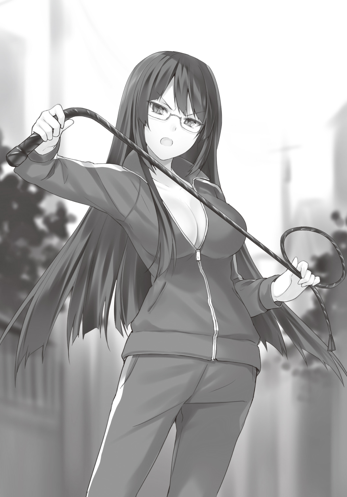
なんか軍隊の教官みたいな事を怒鳴っているが、手に持った鞭が決まりすぎて女王――。
「お決まりの泣き声はどうしました、このロリ豚野郎！」
バシン！ と鞭を叩く。な、なんだよ。「サー・イェサー！」って言えばいいのかよ！
だいたいなんでお前が演技指導なんてしてるんだ。
クラスの出し物の準備とかで忙しくないのか委員長。
「く、黒星お姉様......」
やっと追いついてきたタマちゃんが、膝に手をついて言葉を絞り出した。
「た、体力作りなんて......。タマには......はあはあ............タマには必要ないと思うんだ。......タマ、十分可愛いし。......はあはあ。その可愛さをアピール出来るような作品なら、十分......ぜぇぜぇ......良い作品になると思うよ」
「甘ったれるな、ロリ雌野郎！」
ビシッと鞭が振るわれる。
「あなたはそうやって自分の事が可愛いって思ってるようですが、あなたも元は隣のロリ豚野郎と変わらないのです。いいですか？ あなたも所詮はお父様の○○がついたシーツのシミであり、お母様の○○○から垂れたカスなんですよ。可愛さをアピールですって。現代美術の醜さに劣る顔に、蠅もしかめるような臭い糞尿をまき散らした人間が、一体どこのショーパブが雇ってくれるというんですか？ 下水道の方がよっぽど格調高く感じますよ」
容赦のない黒星のしごき（なのか？）に、小さな女の子の精神は崩壊寸前だ。
真っ赤な顔をしながら、その目にはすでに生気がない。世界の終わりみたいな顔をしている。
「おい！ 黒星いい加減に......」
「黙れ、ロリ豚！ 二次元見ただけで悪夢を思い出すくらい調教して差し上げましょうか？」
再び鋭い音が俺の耳側で弾けた。
「さあ、あと十周！ かけ声！」
は？ と俺は思わずタマちゃんと顔を見合わせてしまった。
かけ声なんてあったっけ？
すると黒星は普段クールなキャラをかなぐり捨て、大音声で声を上げ始めた。
「ファミ○ンウォーズが出るぞ！」
黒星は何故か一人たかだかと手を突き上げた。
俺たちはぽかんとしている。すると眼鏡の奥――氷のような眼差しが俺たちを刺し貫いた。
まさか、その言葉を復唱しろと......。散々人を新米の海兵隊候補生みたいにいじった挙げ句、その妙に懐かしく、きわどいネタのフレーズのパクリをしろと。そう仰るのですか、黒星さん。
心の呟きに対し、何故か黒星はこくこくと顎を動かし、頷いた。
マジかよ......。
「さあ、もう一度行きますよ。ファ○コンウォーズが出るぞ！」
『ファミコンウォー○が出るぞ！』
「こいつはどえらいシミュレーション！」
『こいつはどえらいシミュレーション！」
「のめりこめる！」『のめりこめる！』
「のめりこめる！」『のめりこめる！』
「かあちゃんたちには内緒だぞ！」
『かあちゃんたちには内緒だぞ！』
「のめりこめる！」『のめりこめる！』
「のめりこめる！」『のめりこめる！』
「○ァミコンウォ～ズ」
『ファミコン○ォ～ズ』
見られてる。見られてる。沿道の道行く人に。子供なんて笑いながら指さしてるよ。このネタわかるのかな。お兄さんも生まれてなかった頃のＣＭなんだけどな。ああ、そう言えばリメイクされた時に流れてたっけ？
ああ、くそ。恥ずかしすぎるだろ。お願いだから、俺の心のセーブデータを消してくれ！ 十五面までいって、次の日にスイッチを押したら、データが何事もなかったかのように消えてるあの絶望感を味わってもいいからさ。あれ？ 俺、なに言ってんだろ？
あと伏せ字にしてるけど、こんだけ復唱されてたら、全く意味ないよね。
てかさ、なんでＣＭの最後まで再現してるの。そこまで再現する必要ある。
「磯風君！」
鋭い鞭のような声が前を走る黒星から聞こえてきた。
首を曲げ、射貫いてきた眼差しは火照った身体を一瞬にして冷凍してしまった。
「最後の『ファミコン○ォ～ズ』は野太く伸ばしてください！」
そこかよ！
「さあ、もう一度いきますよ。ママとパパはベッドでごろごろ！」
うおい！ オリジナルは止めろ！ 伏せ字だらけになるだろうが！
せめてゲームボーイ○ォーズにしろよ！
３
と――まあ、こんな感じで、俺たちは清川さんの脚本が出来上がるまでの間、特にやることもなかったので、無駄に走っていた。
黒星には悪いが、俺には芸の道を究める気は毛頭ない。
だが、何もしていないよりはマシだ。
少しボーとしているだけで、嫌な事ばかり浮かんでくる。
白い髪に、白眉の少女の顔が、脳裏に現れる。
昨日、あいつは帰ってこなかった......。
ああ、くそ！ へなちょこすぎるだろ、俺の精神力。これぐらいで揺らいでどうする。
俺にはデレろとかいいながら、あいつは結局何も俺にはデレていなかったのだ。
それがあの数字に表れた。そういうことなんだろ！ くそが！
「どうしたの？ お兄ちゃん」
隣を走るタマちゃんがのぞき込んできた。
ツーサイドアップにした白桃色の髪を揺らし、青眼を真っ直ぐこちらに向けてくる。着ているジャージには、子供っぽいミミズ文字で「子猫」と書かれていた。袖とズボンの裾が余ってはいるが、黒星と同じで元がいいため妙に似合っている。
さっき息を整えた事が功を奏したのだろう。幾分顔色が良くなっていた。
「もしかして、子猫お姉様のこと考えてるの？」
「え!? いや、そんなんじゃないよ」
「うそ。......顔に書いてあるよ。タマ、わかるもん」
「タマちゃんにはかなわないなあ」
こんな小さな女の子に見透かされるとは我ながら情けない。
「お姉様はね。私にチャンスをくれたの」
「子猫が？」
「うん。......だって、今タマの世界も大変なんだもん。お姉様に事情を話したらね。お兄ちゃんさえよければ、いいんだって」
だから――と、ピンク髪の幼女は顔を近づけた。
「奇跡お兄ちゃん......。タマの世界へ来てくれないかな」
ずしり......。
心臓が鈍い音を立てて、一拍脈打つ。
重い......重い一言だった。自然と俺の足は止まり、ビル建設をしている現場の前で立ち止まる。タマちゃんもそれにならった。黒星だけがそのまま走って行く。建設現場の音に気を取られて、気付かなかったのだろう。
鉄を強く打ち付けるようなビス留めの音が響く。高所用のクレーンが、大きな鉄骨を吊り、ゆっくりと所定位置へと下ろしていく。
騒がしい現場前で、俺たちは数十秒ほど沈黙した。
俺の頭が整理できないうちに、言葉を切り出したのはタマちゃんだった。
「タマね。自分の世界では、すごく偉いんだよ。それにまだ世界の老化現象が進んでいないから、基本的にみんな幸せに暮らしている。......だから何不自由なく暮らしていたの」
だからね、と話を続ける。
「お兄ちゃんがタマと結婚すれば、なんでも思いのままだよ。タマのけんりょくはぜつだいなんだって......。だから、人を猫耳やうさ耳にしたり、学校の制服をお兄ちゃんが大好きなフェアリンの主人公みたいに出来るんだよ。ね、行きたくなったでしょ」
う......行ってみたい。
素直にそう思ってしまった。
こう言っては何だが、荒廃しすぎて火星みたいになってしまった地球と、権力が思いのままの世界――どっちに行きたいかと問われれば、後者を選ぶ。それは大半の人間がそうだろう。
俺が行ってみたいと思ったのは、単なる好奇心からくるもの。
けど、それに結婚が絡んでいるとなれば別だ。
俺は答えを出さなかった。
腹の中では、タマちゃんの世界に興味を持ちながらも......。
そして悩んだ末、ゆっくりと唇を動かした。
「なあ、タマちゃん。......もし俺がタマちゃんの世界にいったらさ。この世界はもしかしたら滅んでしまうかもしれない。そうなったら――」
「そんなの子猫お姉様に任せればいいよ」
「え？」
一瞬、タマちゃんが何を言っているか理解出来なかった。
「タマとお姉様の違うところはね。......タマはお兄ちゃんの事が大好きだから結婚するの。世界の滅亡なんて、そんなことどうでもいいよ。でもね。お姉様は違う。お姉様はただ世界を救いたいだけ。そのためにお兄ちゃんを利用したいだけなんだよ」
ち............。
「お姉様はね。もしお兄ちゃんがいなくなっても、また別の世界からお兄ちゃんの同位体を連れてくるだけなんだから。......きっとお兄ちゃんの事を部品か何かにしか――――」
「ちがう！」
横の工事現場でパイルを打ち込む音よりも、俺の声は大きく響いた。
タマちゃんは驚き、目を見開いたまま固まる。
薄青い瞳に、憤怒の形相を浮かべた男の顔が映っていた。
ふっと息を吐いた後、俺は冷静に言葉を切り出す。
「あいつは......そんなヤツじゃない」
きっぱりと言い切る。
タマちゃんは怯えるように後ずさり、少し顔を歪めた。
とその時だった。
パン、と何か破裂した音が頭上で聞こえた。
ビルの屋上から「あぶない！」という大きな声。
見上げる――。
長さ二十メートルほどの鉄骨が迫ってきた。
刹那――絶望......。
だがそれは一瞬だけ。
俺はタマちゃんの方を向いた。まだ見上げている。
白桃色の髪が揺れている。
その時、俺の脳裏によぎったのは。
四年前、小野飯心夢が交通事故から俺をかばってくれた時のあの光景だった。
ほんのワンフレームだけ。時間にしてたった〇・〇三秒。
たったそれだけの時間。
なのに俺の脳裏には、心夢姉の白い髪の一本一本まではっきりと見えていた。
まるで小さな子供を安心させるように、薄く笑みを浮かべた表情も。
俺は手を伸ばした。
死にものぐるいで――。
とん――――ッ。
指先が、タマちゃんの肩に触れた。
渾身の力を込めて、幼女の身体を押す。
一メートルほど飛ばされる。
俺はそれを見送った。
そこからは何も覚えていない。
ただ残響が、内耳の奥で幾重にも重なって聞こえた。
第五章 向き合う心......
※ ※ ※
二〇一三年十月某日。
それは事件ではなく、自損事故として処理された。
その日、何をしていたのかはあまり覚えていない。
けど――事故の瞬間の一つ一つのシーンが強烈に、脳に刻まれている。
はじめは激しいブレーキのスキール音。
顔をしかめたくなるような焦げたゴムの臭い。
２ｔトラックの平たい顔のようなフロント。
運転手の「あ」という顔。赤く点灯した信号......。
車は止まらない。......止まらない。
小雨で濡れたアスファルトを滑るようにツッコんでくる。
僕はただ呆然とそれを見ている事しか出来なかった。
次の瞬間、僕の身体は横に押し出された。誰かが背中を押したのだ。
持っていた黄色の傘が、ふわりと舞うのが見えた。
身体の軸線より、少し右に押し出されたからだろう。
僕の身体は中空でゆっくりと左に回り始める。
トラックが見えた。
そして僕の傘が見えた。
白い髪をした女の人が傘に隠れて見えなくなる。
その一瞬前に見えた顔。
笑っている。何か良いことでもあったのだろうか......。
次の瞬間――。
銃声のような音が鳴り響く。
僕が地面に着地したのと同じぐらいのタイミングで。
トラックは僕がいたところから、二十メートルほどしたところでやっと止まった。
視線を先ほどまで歩いていた場所に移す。
後ろに並んで歩いていた人の姿が見えない。
そこで僕はやっと気付いた。
僕の背中を押してくれた人と......。
トラックに轢かれた人が、僕にとって一番大事な人である事を......。
「こ、ここ......。お......ちゃ............。......ちゃん！」
声がうまく出ない。
あの人の名前を呼びたいのに、喉が痺れて動かない。
大事な人なのに。僕にとって、とっても――。
「――ちゃん！」
やっぱり声が出ない。渾身の力をこめたのに。叫びたいのに。
足も動かない。
大事な大事な人なのに。
少し離れた位置からでもわかるぐらい、血を流しているのに。
早く駆け寄って助けて上げたいのに。
足がすくんで動けないのだ。
僕が守って上げたいのに。
なのに............僕は........................。
僕はもう一度叫んだ。
大きな声で――――。
１
「心夢姉!!」
俺はカッと目を開いた。
口は「え」と言う形で開いたままホールドされている。
寝汗がひどい。眉間を通った一滴の滴が、鼻翼の脇を抜け、開いた口に滑り込む。少しだけしょっぱい味がした。
寝汗？ ふと疑問に思って、軽く首を動かす。
子猫のおかげで数々のブラックアウトを体験し、その度俺は復活してきた。
――が、さすがに見知らぬ天井を見て慌てずにいられなかった。
どうやら病院の個室らしい。調度品や薄型のテレビなんかもあったりして、割といい部屋だ。ベッド脇には大きな花瓶が置いてあった。プロが活けたのかと思うぐらい大輪の菊が咲いていた。ちょ、おい！ 誰だよ、しゃれになってねぇぞ！
「うん？」
俺はようやく気付いた。
何か寝ぼけて強く右手を突き出したようなのだが、妙な感触を覚える。
試しに握ってみた。柔らけぇ。マシュマロ？ いや、なんか張りがある。そう譬えるなら、ふわふわのシュークリームを鷲摑みしているような......。
「起きましたか？ 磯風奇跡君」
放射線がバンバン通っている――真空状態の宇宙よりも冷たい声が、右脇の方から聞こえた。
眼球だけを動かし、その方向を見る。
黒剣のような髪に、縁なしの眼鏡をかけた少女が、俺に覆い被さるように見下げていた。
「黒星......さん......」
ついつい「さん」付けで呼んでしまう。黒星の表情はいつもと同じく何を考えているかわからない。だが、いつもよりも凄みが増しているように思えた。
「とりあえず、その手をどけてもらっていいですか？」
「は？」
やっと自分の右手が、黒星の大きな胸を摑んでいる事に気付いた。
そうか......。これが黒星のおっぱいの感触なのだ。夢にまで見た。黄金のＦ！ いやＧィ！
――ってちがああああああああああああああああああああうう!!
「すいませんでした！」
慌てて手を離し、かぶっていた布団を蹴って、速やかに土下座をした。
まだ右手がほんのりと温かい。感触もまだ残っている。しかしその感覚はある意味地獄への片道切符にしか思えなかった。
「その様子では、あまり異状はないようですね。あなた、一日半も眠っていたんですよ」
窓辺に置かれた液晶クロックは、日曜日の午後六時半と表示していた。
黒星は身を引き、ベッド脇に置かれた丸椅子に座る。そして俺の頭を指さした。
え？ と首を傾げながら、そおっと頭に触れる。
片目をつぶってしまうほどの鋭い痛みが襲った。
ガラスに映った自分を見る。頭に包帯が巻かれた間抜けな男が映っていた。
意識が向くと、じわりと痛みを感じはじめる。さほどひどくはない。我慢出来る程度だ。
その痛みのおかげだろうか。
自分の身に起こったことを思い出した。
「タマちゃんは？」
と振り返る。黒星は少しボーとした顔を向けた。
「あなたより軽傷です。......あなたのその怪我も、タマを突き飛ばした時にバランスを崩して、頭から倒れたものです。前代未聞の珍事ですよ。相手を突き飛ばした反動で、降ってきた鉄骨を回避するなんて。警察は『奇跡だ』なんて言いながら、少し笑っていました」
賞賛しているのか。けなしているのか、どっちなんだ。
まあ、タマちゃんが無事ならいいけどさ......。
「ところで、この病室は？」
「近くの病院のＶＩＰルームです」
見れば見るほど凄い部屋だ。キッチンに、別の個室まで併設してある。ちょっとしたワンルームよりも、遥かに豪華な部屋だ。
「......もしかして、あんたが手配してくれたのか？」
「はい」と黒星は短く答え。「お気に召しませんか？ あなたのような凡人では、蟻のように一生働いても入れない部屋ですよ」
そういう台詞回しを聞いて、何故かほっとしてしまう俺は、ドＭなのだろうか。
「タマちゃんはどこに？ 俺の家に帰ったのか？」
「つい一時間前にはこの病室にいましたが、どこかへ行ってしまいました。ただ『お兄ちゃん。ごめん』と伝言だけ預かっています。一応、私から『気にする必要ない。彼はああやって、時々鉄骨への愛を試しているのだ』と励ましておきました」
それ全然励ましてねぇだろ！ 鉄骨への愛って何だよ。鉄工所のおっちゃんか、俺は！
すると黒星は再び腰を上げた。
丸椅子を少し動かした後、ゆっくりと俺の方に顔を近づけてくる。
するりと剣のように鋭い黒髪が、流れた。
胸が高鳴る。
病院の一室。男と女が二人っきり。そして男は負傷し、弱っている。
まさか伝説の――病院プレイですか！
いや、ちょっと待て、黒星！ 早まるな。
俺にはこね――――いや、清川さんという本命ルートが――――！
「申し訳ありません」
「へ？」
慌てて据え膳を回避しようとしていた俺は、面食らった。
何度か瞬きする。しかし目の前の光景は、幻ではない。
黒星が頭を下げていたのである。
会釈とかそんなレベルではない。腰を直角に曲げて、最敬礼していた。
傲岸不遜が服を着て歩いているような少女が。
常に上を向き、トップを目指し続ける少女が。
自称――第九十九代内閣総理大臣が。
一介のしがない高校生に頭を下げているのだ。
「お、おお、おおおお！」
訳もわからず「お」という言葉を繰り返し、テンパっていた。
礼を尽くす黒星に、俺は全く何も言えないまま――とうとう彼女は頭を上げた。
特に表情に変化はない。俺が知っている黒星美巫子だ。誰か別人が変装しているというわけでも、何か悪いものを食ったというわけでもなさそうだ。ただいつもよりは、目のぎらつき感が少ないような気がするが、それも微差でしかない。
「ど、どういうことだ？」
「あなた方がロードワーク中に事故を起こしてしまった。監督不行届きです。加えて、己の職務を邁進するあまり、あなた方を危険な場所へ誘導してしまった。事故の可能性は十分あると予測できるのに、それを怠ってしまった。すべてはこの結婚相談部の部長の責任です。......申し訳ありません」
そしてまた頭を下げる。
「はへ？」
俺は変な声を上げてしまう。
黒星が言っていることはなんとなくわかる。こいつは俺とタマちゃんが巻き込まれた事故の一端に、自分の責任もあると言いたいのだろう。だから謝っている。
だが、危険な場所だったとはいえ、少なからず人通りがあったのだ。規制が張られているのに、そこに立ち入ったというならわかる。けれど、安全がある程度保証されている往来で、不慮の事故を予見などできるはずがない。
なのに、黒星は自分に責任があると言って、頭を下げているのだ。
ほんと......。黒星だけは全く理解出来ない。
でも、これが彼女なりの気遣いとけじめなのかもしれない。
そう思うと、俺は「ぷっ」と噴き出してしまった。
「何がおかしいんですか？」
吐息にダイヤモンドダストを混ぜたような声が、病室を凍えさせた。
「おかしいから笑ったんだよ。黒星美巫子の意外な一面が見られたからな」
「私は別に......普通ですが」
平然と黒星は告げる。
ここで頰を赤らめたりしないのが、自称内閣総理大臣だ。少しホッとした。
「そうか......。でもまあ、一介の高校生として忠告するとさ。もうちょっとか～るく考えようぜ。そりゃあ、お前の本業はさ。メンツとか建前とか、誠意とか必要なのかもしれないけど。俺の目の前にいるのは、朝庭高校の制服を着た黒星美巫子で、未だに活動方針がよくわからない、いかがわしい名前がついた結婚相談部の部長ってだけだろ。責任とかさ、謝罪とか、そんな堅苦しいことはせめて高校生でいる時ぐらいはなしにしようぜ」
..................。
何故か妙な沈黙が降りた。
黒星の表情は変わらない。じっと俺の方を見つめている。
え？ 俺なんか変な事を言っただろうか。
沈黙が長くなるにつれ、空気が淀んできたような息苦しさを覚え始めた時、黒星は言った。
「なるほど。わかりました」
それだけの肯定文を揃えるのに、十秒以上要する必要があっただろうか。
「つまり、あなたは私の胸を揉んだことについても、謝罪も責任も放棄すると言うのですね」
「え？」
顔が青白くなるどころか、真っ白になった。
「い、いいいいや、おおおおおおれは、そんなつもりなく。それについては誠心誠意いいい」
「冗談ですよ......」
冗談になってないんだよ！ 心臓が二、三回止まったよ！
「ところで、私の胸とお姉さんの胸。どちらが良かったですか？」
勘弁してくれ......。
泣きそうだよ。絶対この人、このネタで死ぬまでたかる気だよ、きっと。
「今、『絶対この人、このネタで死ぬまでたかる気だよ、きっと』なんて思いました」
一言一句あいすぎだろ！ エスパーなの？ 心を読めるの、あんたも！
「大丈夫ですよ。そんなことはしません。......ところで磯風君は○○○って知ってますか？」
「ああ、あの居酒屋チェーン店の」
「はい。優秀な人材を探していまして。是非磯風君を推挙したいと思っているのですが。拘束時間は二十二時間。福利厚生なし。通勤手当なし。残業代なし。担当フロアは一階から四階まで担当してもらいましょう。もちろんエレベーターなんてありません。お給料はお客様の笑顔というのはいかがでしょうか？」
いやぁぁぁぁあ！ なにそのブラック＆ブラックみたいな条件！
「実は最近、死刑に変わる刑罰を考えているのですが、近く......ブラック企業に勤めてもらうというのを考えてまして。実に効率のいい案ですよ。企業の人手不足を解消できる上、受刑者の社会復帰も出来る。一石二鳥なんですよ。割と企業側も乗り気でして、馬車馬のように働かせても、どこからも文句が言われない人材は是非ほしいと」
やめろぉおおおお！ 話は微妙にリアル過ぎて困る。
――てか、受刑囚を外に出したらダメだろうが！
「大丈夫ですよ。鉄球付きの足枷とかついてますから」
ちょちょちょっと待って。それつけて、どうやって四階まで注文を取りに行くんだよ。ごりごり音をさせながら、階段を上るのかよ！ 想像しただけで怖いよ。入りたくないよ、そんな居酒屋。ゆっくりお酒飲みたいよ。王様ゲームとかしたいよ！ 高校生だけど......。
「冗談ですよ。概ね......」
概ねって言った？ 概ねってどこからどこまでなの？ 法案提出するまではホントなの？ 俺、そこに就職しなくちゃダメ？ いや、就職じゃなくて収監？
「そろそろギャグパートも飽きてきましたので、少し真面目な話をしてよろしいですか？」
不安しか残らないが、黒星の言葉責めを聞いているよりははるかにマシだろう。
「一つ、悪い知らせがあります」
「悪い知らせ？」
「清川靜花さんが、昨日の昼間に倒れたと報告がありました」
「清川さんが！」
「はい。軽い貧血とのことですが、原因はおそらく寝不足と疲労によるものだと」
「黒星、お前！」
さすがに俺は頭に血を上らせた。ずきりと鈍痛が襲う。
クラスの出し物の負担を減らし、脚本を書いてもらうよう手はずを整えたのは黒星だ。
しかし予兆は昨日からあったかもしれない。思い出してみると、子猫を引き留めようとした清川さんの顔は青白かった。あれは子猫の発言に驚いたのではなく、単に体調が悪かったからなのかもしれない。
「申し訳ありません。クラス委員長、失格です」
黒星だけを責めるわけにもいかない。
きっと清川さんのことだ。黒星に仕事の負担を軽くしてもらっても、同じように仕事を続けていたのかもしれない。クラスメイトに頼まれれば、彼女なら嫌とは言わないだろう。
文化祭の準備に全く貢献していない俺が、手伝えば良かったのだ。
そういう意味では、俺と黒星は同罪と言える。
いや、黒星は黒星でクラス委員の仕事を全うしているのだから、罪の大きさは圧倒的に俺の方が上だろ。
「黒星。......俺の着替えはあるか？」
ぐっと目に力を込め、俺は黒星を見つめた。
黒髪の少女は、少しの間考えた後、形のよい顎を縦に振った。
※ ※ ※
着替えるやいなやすぐ病室を出て行った青年を、黒星美巫子は見送った。
頭には痛々しい包帯を巻いたままだが、今の彼に何を言っても無駄だろう。
どちらかと言えば否定的な発言を繰り返す方だが、おそらく潮乃女子猫と並んで無茶をするタイプの人間だ。加えて言えば、人を信じないと言いながらも、もっとも近くにいる人間を大切に思うタイプである。超矛盾人間。しかし黒星はそんな人間くさい人間が嫌いではなかった。
廊下を駆けていく音が、離れて行くのを確認した後、黒星は向き直った。
病室の中にあるキッチンへと歩いて行く。流し台の下の戸棚を開いた。
「行きましたよ」
声をかける。
狭い戸棚の中で、三角座りして隠れていた少女は、病室の電灯の明かりを嫌うように片目をつむった。子猫よりも小さな丸い顔が、上を向く。
黒星の表情は冷然としていて、そこから感情を摑む事は出来なかった。
百鬼タマはまだ摑めきれていないこの女に気を払いながら、立ち上がり、クローゼットから出た。首を回し、自分で周囲を確認する。
「追いかけないんですか？」
小さな背中に黒星は尋ねる。
小動物のようにぴくりと肩が動く。手を前に組み、タマは振り返らず答えた。
「タマはいらないから......」
「いらない？」
「またお兄ちゃんを守れなかった」
幼女の声が震えていた。
その時、黒星は彼女の小ささを初めて見たような気がした。子猫と同じくタマにもどこか姿形から考えられない、超然とした雰囲気がある。おそらく生きてきた年月は、自分よりも二回りも三回りも差があるだろう。いや、桁一つ違う可能性もある。
だが、今目の前にいるのは、少女どころか幼女と言って差し支えない子供だった。
その子の肩に、世界の滅亡という重責が乗っている。
そう思うと、内閣総理大臣という肩書きを持つ黒星すら、空恐ろしく思えた。
「だから............タマなんていなくなってもいいの！」
タマは突然駆け出した。病室を出て行く。
黒星は追いかけようとしたが、ちょうど携帯電話の着信音が鳴った。
高校生から、すぐ政治家の顔になる。慌てる素振りは一切見せず、受話ボタンを押した。
「はい......。............わかりました」
たった二つの台詞を吐き出し、黒星は電話をしまった。
窓外を見る。
夜の帳が降りた空に、薄雲に隠れた朧月が浮かんでいた。
２
俺は、電車とバスを乗り継ぎ、山の麓にある神社に向かっていた。
鬼与川神社。
おそらく朝庭市に住んでいる人間なら、知らないものがいないほど地元ではメジャーな神社だ。昔、この町を守った巫女を祀った事から、守り神として古くから崇められている――というのを、小学生の時の校外学習で習った。
子猫が何度もお泊まりしているため、清川さんが神社の娘である事は聞いていた。
いつか行きたいと思っていたが、まさかこんなタイミングで行くことになるとは......。
もちろん清川さんの体調が心配である事は言うまでもない。
が――しかし！
いち清川ファンとしては、興奮を抑えられない。
そもそも神社というのは、神聖にして崇高な場所である。そして俺にとって胸熱な場所に他ならない。だってほら......。神社だぜ。神社って言えば、あれじゃないか。赤と白の――。
そう――！ そうだよ！
巫女服だよ。
巫女服姿の清川さんが見られるかもしれないんだ！
そう思うだけで、つい顔がゆるんでしまう。
いやいや、落ち着け、俺！ 相手は病人だぞ。
巫女服なんて着ているわけがないだろ。普通、ねま......。
寝間着!?
そうだ。それは確実だろ！
寝間着姿の清川さん。......考えるだけで、全身が火照ってくる。
しかも部屋にまで通され、二人っきり。
『風邪を引くと悪いよ、靜花。僕が温めてあげる』
『ありがとう、奇跡くん』
そして二人は――――。
ああああああああああああああああああああああああ、もうぅぅ、たまらんん!!
ああ、もう――。落ち着け、俺!!
俺は清川さんの巫女服を見に行くわけでも、寝間着姿を拝みにいくわけではない。
お見舞いに行くのだ。そして謝るのだ。彼女に負担をかけてしまった事を。
俺はきりりと真顔に戻る。
が、五分後鼻の下を伸ばす男の顔が、バスのガラスに映り込む。
そうして俺は、子供に指さされること三回。女子高生に「キモぅ！ でもウケるぅ！」とか言われながら、写メを撮られること一回。ようやく鬼与川神社にたどり着いた。
百段ほどある石切階段をなんとか上り、広い空間に出た。
大きな鳥居をくぐり、石畳に沿って歩く。大きな境内が現れた。
人通りはない。すでに夜の八時を回っているし、今は十一月だ。小さな地元の神社を訪れる参拝客などいないだろう。
右の方に社務所が見えた。以前、子猫から聞いていた情報通りだ。
玉砂利を踏みしめ、境内を横目で見ながら俺は歩いて行く
竹の門扉を開け、まだ真新しい木造の社務所の入口前までやってきた。
表札がかけられていて、立派な楷書体で『清川』と書かれている。その横にはインターフォンが備えられていた。
いざ来てみると、緊張する。
先ほどの妄想など、すでに頭から霧散していて、どう話を切り出せばいいだろうかという事で頭が一杯になる。
本人が出てくれる事が望ましい。だが病人であるはずの清川さんが出てくるとは思えない。
となると彼女の両親、もしくは兄弟ということになる。
一番高い確率で言えば、両親だろう。しかし清川さんの両親とは一体どんな人物だろうか。今思えば、子猫からそれを聞いておけばよかった。兄弟がいるのか、一人っ子なのかも俺は知らないのだ。
少し彼女の両親について考えてみた。
あんな立派なお嬢さんを育てた両親である。高確率で娘を大事にしている可能性が高い。
そこに男の子が訪ねてやってくる――という状況......。
『お前みたいな未来のニート面したヤツに俺の靜花をやれるか！ バロー！』
......なんだか、ぞっとした。
病院で黒星から清川さんが倒れたと聞いた時はいてもたってもいられなかった。行きのバスや電車の中では興奮しっぱなしだった。なのに、ここに来て俺は、帰りたくなってきた。
くそ！ 俺のメンタル――チキンすぎるだろ！
自分に叱咤するものの、すぐネガティブな思考に囚われる。
自分が見舞う事に意味があるのか。逆に彼女にプレッシャーを与える事になるのではないか。本当は迷惑ではないのか。実は彼女ばかり働かせた事を、怒っているのではないか。もしかしたら、もう脚本をやらないというかもしれない。だいたい彼女がこの見舞いを望むだろうか。
そもそも清川靜花にとって、磯風奇跡は単なる厄介者ではないのか......。
そんな暗い感情。
俺の疑念が、心の中を侵食する。
......帰ろう。
俺は踵を返した。
がらり......。
唐突に、社務所の引き戸が引かれた。
え？ と思って振り返る。
そこには、清川さんがいた......。
いや......。少しだけ語弊がある。
正確には、清川さんそっくりな子供がいたのだ。
――なに、これ......。
俺の頭は、ネガティブな思考から一転、パニックに陥った。
真っ黒な日本黒髪を二つに束ね、純真無垢な黒の瞳をこちらに向けている。真っ白な肌は輝くほどみずみずしかった。さらに着ている物に俺は目が釘付けになった。
巫女服なのだ。
肌に負けないほどの白さを誇る白衣に、真っ赤な緋袴。小さなおみ足に、足袋まではいている。こんな子供サイズがあるのか。巫女服は、少女の小さな体型に、ぴったりと合っていた。
突如、出現したミニチュア清川さんに、俺は言葉を失う。
だがその頭の中では、脳の血管が破れるぐらい、俺は叫んでいた。
か、かわいいいいいいいいいいいいいいぃぃぃぃぃいぃ！
なに、この生き物。可愛すぎるだろ。小さくした清川さんって......。もはやそれって磯風奇跡用の殲滅兵器か何かなのか！ しかもさらにご注文通りの巫女服姿って。ああ、もういいですよ。ここで死んであげますよ。でもね、神様。せめて彼女の抱き枕が出るまで、もうちょっと待ってくれ。お願い！ 切に願う。
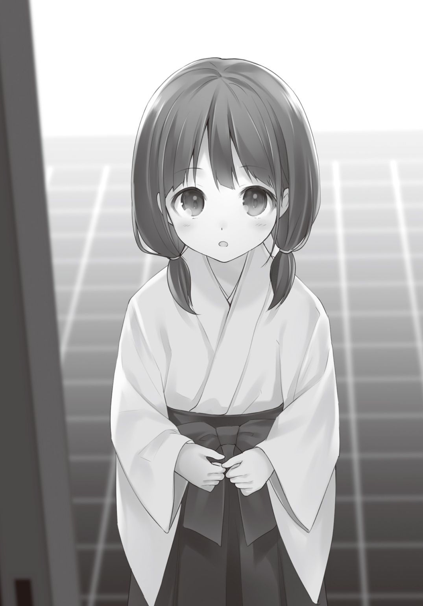
「おぬし、何者じゃ！」
ちび清川さんは、なんか古風な言い回しで素性を尋ねた。
ここに来てロリババア設定はないよな。二次元ではどんと来い――だが、これがマジで清川さんのおばあちゃんだったりすると、さすがにひく。
俺がちび清川さんの扱いに困っていると、その声は玄関の奥から聞こえてきた。
「春花ぁ？ なに？ お客さんなの」
聞き覚えがある声だった。
現れたのは、大きな清川さん――いや、これだと誤解を生むよな。
そう――俺がよく知る清川靜花さんだった。
「え？ もしかして、磯風君」
「え、あ、その......。こんばんは」
俺は少し口ごもりながらも挨拶をした。
正直、気を失わない自分を褒めてやりたい。何せ俺の網膜には、襟元にふわふわのフリルが付いた寝間着姿の清川さんが、刻み込まれていた――からである。
清川さんも気付いたのだろう。「ひゃっ」と可愛い悲鳴を上げて、ピンクの寝間着を隠した。
その間に立った春花という少女は、俺と清川さんを交互に見るやいなや。
「なんだ？ 靜花のかれしなのか？」
『え？』
声を揃え、俺と清川さんは数秒見つめう。
すると清川さんは学校では見せないような赤い顔をして、むっと頰を膨らませた。
「もう！ 春花！ 一体どこでそんな言葉を覚えてきたの？」
「そうか。かれしなのか。じゃあ、仕方ない。通るがいいぞ」
春花は胸を張る。ひどくデジャブるポーズに、言い回しだった。
「ご、ごめんね、磯風君。私、ちょっと着替えてくるから、入って」
そう言うと、清川さんは奥の方へ引っ込んでしまった。
後に残されたのは、ミニチュアサイズの清川さんと俺だけ。
春花と呼ばれた少女は丁寧にお辞儀をした後、手で家の奥を指し示した。
「どうぞ......かれし殿」と春花は俺を招いた後、小さな声で付け加えた。「今、パパとママがいない。つまり、春花と靜花しかいないということだ。チャンスは今しかないぞ」
一体この子何歳なの？
疑問は尽きなかったが、ようやく一歩。俺は清川家の入口を跨ぐ事ができた。
※ ※ ※
潮乃女子猫は《ガン丸》の端末にメンテナンスソフトを走らせている真っ最中だった。
コクピットの椅子に足を載せ、三角座りし、ぼーとしている。新システムとして組み込んだ三次元ビジョンには、大量のコンピューター言語がドロップしていくが、薄紅色の瞳は全くそれを追っていない。
ただ展開された仮想窓の向こう。今、《ガン丸》が保管されている倉庫の窓に視線を向けていた。雲がかかった月が見えるのだ。
名月とはいえないが、月を薄い墨汁で浸したような景色は独特な味わいがある。
はっと心を奪われてもおかしくはない自然の絵画。
――が、生憎と今の潮乃女子猫には、景色に心酔するほどの余裕はなかった。
静かな夜。さざ波と、遠くの方から船のディーゼル音が聞こえてくる。
しかし天然のリラクゼーションミュージックも、今の子猫には届かない。
その静寂を破るように、錆だらけの鉄の門扉が開かれた。軋みと耳障りな音が響く。
すると、武装した集団がなだれ込んできた。
一瞬、何が起こったかわからなかった。ただ子猫はコクピットの椅子の上で立ち上がる。
クリア、という言葉がいくつも響く中、最後に現れたのは、武装集団の指揮者と思われる一際大きな身体をした男。そして見覚えがある少女だった。
少女は、今自分が着ている薄いアイボリーのブレザーを着ていた。
朝庭高校の制服だ。暗がりでもはっきりとそれはわかった。
少女は見上げる。氷のように滑らかなガラスを付属した眼鏡が、薄闇に光る。しかしその奥から放たれた眼光は、一瞬で子猫の心胆を寒からしめるほどの強い恐れを放っていた。
五百年以上生きてきた。でも、これほどの圧迫感をわずかな間に与える人間など、おそらく片手で数えられるほどしか知らない。
しかも平和な時代にあって、こういう人材がいることは、かなり稀だ。自分が結婚する確率に匹敵するかもしれない。
それほどの脅威と奇跡を携えた人間を前に、子猫はしばし黙するしかなかった。
「どこへ行くのですか？」
結婚相談部――いや、彼女が持つ肩書きを上げればきりがない。
だが、あえて子猫は言った。最高の肩書きを。
「内閣総理大臣殿か......」
少し皮肉に聞こえただろうか。第九十九代内閣総理大臣黒星美巫子は、片眉を動かした。
そう呼ばれるとは思わなかったのだろう。
実際、言ってみた子猫ですら、なじめない――舌触りの悪い肩書きだった。
「もう一度、聞きます。どこへ行くのですか？ 返答次第では――」
無音の闇が動く。赤いレーザーポイントが上下八方あらゆるところから、子猫に照射される。
黒く武装した集団の動きに、一分の乱れもなかった。
「やけに好戦的ね。大臣さん」
《ガン丸》の足の脇から現れたのは、奇天烈な格好をした少女だった。
先が折れたとんがり帽子。鴉羽で織られたような真っ黒なマント。短めのキュロットスカートに、膝上まできっちり伸ばしたニーソをはいている。
海外の大図書館にしか書蔵されていないような分厚い本を広げ、もう片方の手には炎が握られている。煌々と燃え上がる炎を見て、武装した集団に少し動揺が広がった。
しかしたった一人、黒星だけが全く表情を変えていない。
「岳東リニア......。あなたもいたんですか？」
「当たり前でしょ。元々私はね。彼女を護衛するために、この世界に来たのよ。まあ、ちょっと本来の意図とは違う登場したわけだけど――子猫の側にいるのは当然のことなのよ」
「そうですか」と黒星は目を伏せた。
「リニア......。魔法をしまえ。私も黒星には話がある」
「私の質問に答えてくれると？」
「いや、違う」
子猫は立ち姿勢の《ガン丸》のコクピットからタラップを下ろす。滑るように降りてくると、黒星のところまで歩いてきた。
無造作に近づく子猫に、慌ててリニアが間に立つ。
同時に、赤い線が二人の少女に集中した。
「黒星美巫子。あなたを日本の長と見込んでお願いしたい。どうかミー君を守ってはくれないだろうか？ 頼む！」
白い髪を揺らし、子猫は頭を下げた。
「お断りします」
黒星は全く間をおかず、白い頭頂を見ながら即答した。
「あなたがそうして私に頼むのは、磯風奇跡に命に関わるような事件、事故、災害にかかわっていることと、何か関係がありますか？」
「気付いていたのか？」
「あなたは先ほど私の事を内閣総理大臣殿とやや皮肉交じりに呼んでいたようですが、どうやら随分馬鹿にされているようですね。まあ、実際......民衆から見れば、政治家など馬鹿騒ぎが好きな道楽者と思われているようですので、なめられて当然といえるかもしれませんが」
「いや、それは............」
子猫が目を泳がせていると、黒星は話を続けた。
「七年前の飛行機事件。四年前の交通事故。一月前の遊園地の事故。......そして、昨日の工事現場での事故......」
白い髪の少女の瞳が、一瞬にして燃え上がった。
「ミー君がまた事故にあったのか！」
黒星のブレザーの下襟を摑む。武装集団の一団が近づき、黒星と子猫に割って入る。
子猫は離そうとはしなかった。
見かねた黒星が手で合図を送る。黒の集団は一メートルほど距離を取った。
「心配はいりません。軽傷――」
「傷を負ったのか？ 軽傷ってどれくらいだ？ 入院が必要なほどなのか？ 血はどれくらい出た？ すぐ治るものなのか？ 全治どれくらいなのだ？ 何か情報を――」
「そこまで仰るのなら、ご自分の目で確かめてくればいいじゃないですか」
「う......。それは............」
子猫はやっと黒星のブレザーを放し、半歩後ずさる。そして口ごもった。
黒星は大きく息を吐いた。
「磯風奇跡が今まで出くわした事件や事故を私なりに精査してみました。ですが、そのどれもが不自然と言わざる得ません。まず昨日の事故から説明すれば、吊り下げていたワイヤーの劣化によって、鉄骨が落ちたということですが、ワイヤーは新調されたばかりのものでした。後に実証実験を行いましたが、強度になんら問題はありません。また切断面を検証したところ、故意に傷つけられたということもありませんでした。クレーンを操っていたのは、ベテランの運転士ですし、指示を出しワイヤーに注意を払っていた現場監督も、いきなりワイヤーが切れたと証言しています。ワイヤーは幾重に鋼線が巻かれているものです。すべて同時に切れるということはない。なんらかの予兆はあるはずだと」
次に、と説明を続ける。
「一ヶ月前の遊園地の事故も不可解でした。確かに嵐の前までギリギリ運行していた事には問題はありますが、いくら風が強かったと言っても当時の風速は十メートルほどでした。観覧車の設計技師に事情を聞きましたが、設計上では三倍の三十メートルほどの風にも難なく耐えきれるそうです。そもそも......それほどの耐久性がなければ、台風が直撃する度にゴンドラが風で飛んでいくでしょうから。そういう意味では、あの事故もあまりに偶発的すぎる」
そして最後、黒星は七年前の事件を話し始める。
「七年前の事件ほど、ナンセンスな事件はないでしょう。テロ計画の実行犯の飛行機に、なにも知らず乗り込んでいたＦＢＩとＣＩＡの捜査官が、テログループと派手に空中で銃撃戦。乗客乗員すべて皆殺しになるまで続いたデスゲーム。......正直、これほど趣味の悪い現実はないでしょう。だが――」
黒星は眼鏡を光らせた。
「そこにたった一人の共通する人間がいる――。となれば、偶然は必然への疑いに変わる。それは自明の理だと思いますが......。もちろん、こう推理する自分に対して、少々頭がおかしいのでは、と思う気持ちはありますけどね」
黒星の説明を黙って聞いていた子猫は、真っ直ぐ目の前の首相を見つめた。
そして告げる。
「君の推論通りだ。......磯風奇跡に起きてる事故や事件は、偶発的なものではない」
黒星はちらりとリニアを盗み見る。その表情に変化はない。おそらく彼女も事情を知っているのだろう。
子猫は「だが――」と続け、説明を加えた。
「実のところ、私もまだ科学的な分析を出来ていない。偶然なのか必然なのかも確信が持てていない。ただ一つ言えることは、歴史の結節点において、その重要なファクターを持つ同位体は、往々にして早逝することが多い」
「たとえば、ジャンヌ・ダルクや坂本龍馬のような――ですか？」
子猫は頷いた。
「そして磯風奇跡という同位体もその理論に合致する。......実際、この世界の磯風奇跡は八年前、わずか八歳で亡くなっている」
「それが本当だとして、奇跡を操作するような大それた事を、出来るものなのですか？」
「人間には出来ない。だが、我々は一度その事件を体験している。......いや、はずだ――」
「それはこの世界を救われる時の事を言っているのですか？」
「その通りだ。......そもそも我々が結婚して、世界が救われるというのは、あまりに因果に過ぎる。誰かがそれをゲームの攻略条件のように認識し、世界の確率を歪めている方がよっぽど説明が付くだろう」
黒星は呆れるようにため息を吐いた。
「ならば、それに対して、あなた――いえ、あなた方の存在は何なのですか？ 人間よりも遥かに長大な寿命と、化け物と揶揄されてもおかしくないほどの不死身の肉体。ただあなたと磯風奇跡という同位体を結婚させるだけにしては、やけに高スペックに感じますが？」
「それは僕の方から案内した方がいいかな？」
ひどく耳障りな声が聞こえてきて、そこにいるすべての人間が振り返った。
埠頭の灯台の光が、一瞬長細いシルエットを映し出す。それは開いた倉庫の入口からゆっくり近づいてきた。まるで今からハイキングにでも出かけるかのように、軽快に。
「あなたですか？」
黒星は目を細めて、闖入者を睨んだ。
対する人間はさらに目を細めて、笑みを浮かべる。
「やだなあ......もう......。こんなに説明と案内が必要なシーンで、僕を呼ばないなんて。まるで神様が僕の出番を奪っているようにしか思えないね。そう思わないかい？ 子猫ちゃん。それに黒星さん。こんばんは！」
「土越案内！」
と叫び、彼に向かって炎を掲げたのはリニアだった。
「おっと！ リニアちゃんもいたんだった。失敬失敬」
突如、現れた土越は、道化を演じるようにぺしぺしと額を叩いた。
「あなたが、何を知っているんですか？」
「まあ、こうやってもったいぶって終盤に現れたわけだけど、実際僕もちょっと聞きかじった程度の知識しか案内することが出来ないんだよね」
「話しなさい」
黒星が圧力をかける。土越はへっぴり腰になりながら、へらっと笑った。
「簡単に言えば、潮乃女子猫――その同位体は、いわば安全装置みたいなものなんだよ」
「安全装置？」
「ぶっちゃけ言っちゃうとさ。......この世界って、滅ぶことが確定してるんだよね。でも、そうさせない装置。一〇〇％と決まった結論に対して、〇・〇〇〇〇〇〇〇〇一％のチャンスを与える一時的な安全装置なんだよ。君たち――潮乃女子猫はね」
「子猫は物なんかじゃないわ」とリニアが抗議する。
「そうかい？ でも素敵な能力だと僕は思うけどね。〇・〇〇〇〇〇〇〇〇一％は確かに小さな小さな確率だ。けれど、〇じゃあない。......君の不老不死能力も、彼を危機から守るためのものなんだろ？」
「何故、そんなものがあるのですか？」とこれは黒星。
「さてね。作り手のことまではさすがにわからないよ。神様のプレゼントっていえば、ロマンチックに聞こえるだろうさ。......でも、僕はこう思うよ。もしこの世界が滅ぶのが、神様か何かの御業というなら、それに対抗するには人間をやめるほどの『異常』が必要だったということじゃないかな」
「あんた、その口それ以上動かすんなら、灰すら残さず消し炭にしてやるわよ」
リニアの炎が、天高く舞い上がった。
土越はわざとらしい悲鳴を上げて、二歩後ろに下がる。
「ごめんよ。ごめんってば、リニアちゃん」
「消す！」
リニアの瞳が、自分が持つ炎よりも燃え上がった。
「リニア、それぐらいにしておけ。彼が言ったことは事実だ。......それにしても、土越君。君は一体何者だ？ ミー君の話では、心夢の昔の同僚だという話だが」
「やだなあ......。そんなたいそうな人間じゃないよ。超能力者とか宇宙人だとか未来人だとか、ついでに地底人でもないよ。ああ、言っておくけど......。神様とかそういうものでもない。ただ僕の使命はね。主人公を導き、案内することなんだ。それが土越案内の正体で、それ以上でもそれ以下でもないんだよ」
あっけらかんとして話す。が――この場にいる誰一人として彼の話を信じていないだろう。
「それでどうされるおつもりですか？」
仕切り直すように、黒星の冷たい声が、倉庫に響いた。
「見る限り、その安全装置の役目を捨て、自分の世界に帰ろうとしているように見えますが」
子猫は俯いた。数秒の逡巡の後、切り出す。
「そうだ。......だが、今はタマがいる。私が帰ったとしても、彼女がいれば」
「今、タマは彼の側にいないと聞いてもですか？」
「なに？」
子猫は顔を上げた。
「おそらく彼女は、磯風奇跡が怪我をしたことによって、自分の安全装置としての役目を果たせなかったと思ったのでしょう。どこかに行ってしまいました。もしかしたら、もう......。自分の世界に帰ったかもしれません」
「じゃ、じゃあ......。ミー君は！」
「今は一人です。......おそらく倒れた清川さんを見舞っているはずです」
「靜花が！」
清川と聞いて、反応したのはリニアだった。
子猫はぎゅっと拳を握る。一瞬考えた後、《ガン丸》の方へ振り返った。
「お待ちなさい」
子猫を引き留めたのは、黒星だった。
「先ほどのあなたに頼まれた事ですが、お断りしてよろしいんですね」
それは、磯風奇跡を頼むと、子猫に言われたことだった。
「正直、あんなロリコン男なんて、こちらから願い下げですから」
黒星の言葉を聞き終えた後、子猫は何も言わずまた走り出す。
黒い武装集団をかき分け、タラップにたどり着くと、一気に昇った。コクピットに滑り込み、慣れた動きでベルトをはめる。
キャノピーが完全に閉まるのを待たず、タービンを回した。
排気口から塵とともに熱風が吐き出される。途端――倉庫の中は嵐になった。
《ガン丸》の周りにいたリニア、黒星、土越、そして黒星が連れてきた特殊部隊は、倉庫から退避する。
木の骨組みにトタン屋根を貼り付けたような簡易式の屋根は、突然出現した嵐に抗えない。何枚もの波状のトタンが、夜の闇に消えて行く。まるで大量の海鳥が空に飛んでいく光景と似ていた。
動力が臨界に達する。
子猫は迷わず全力発揮を機体に命じた。
ブラックカラーの鈍重なフォルム。鬼の角のように伸びたセンサー。剣道着を着ているようなダサいデザインの正面。しかし大地に立った姿は紛れもなく人型のロボット。
そのロボット――《ガン丸》は、主のコマンドに応じて、闇夜に向かって飛び立つ。
空中で姿勢を変えると、北へと向かった。
それは鬼与川神社がある方角だった。
３
清川家の茶の間に通された後、コートを羽織った清川さんがやってきた。
「磯風君。見せたいものがあるの」
透明感抜群の声で進言すると、俺を外へと連れ出す。
身体は大丈夫？ と尋ねると、午前中ずっと寝ていて、かなり楽になったらしい。
聞くところによると、最近二時間ぐらいしか寝ていなかったそうだ。おかげで、だいぶ体力が回復したと、彼女は話した。確かに一昨日見た時よりも、かなり顔色が良い。
手にはシナリオを書いたノートが握られていた。
今日、起きてからずっと朗読劇の脚本を書いていたという。
慣れない作業だから、手間取っていると彼女は自信なさげに語った。だが、さっき見せてもらったノートにはびっしりとアイディアや細かい所作、効果音の指示が書かれていた。
案外、こういう事をするのが、好きなのかもしれない......。
――いや、違う......。
それはおそらく清川靜花だから......。
いつも一生懸命――何にでも全力である彼女だからなのかもしれない。
それに比べて、俺は――。
「着いたよ」
清川さんが振り返り、俺の方を見て足を止めた。
俺たちがやってきたのは、境内の裏手にある雑木林。
雑草などが抜かれ、または短く刈り込まれた跡がある。しかし人が多く出入りしているような気配はない。空気は清らかで洗練されていくというのに、鳥や野生動物の鳴き声が一切しない。耳を澄ますとわずかに梢がしなる音がするのみだ。
霊媒師とかそういう人間ではない俺にもわかる。
ここは聖域だ。
一種の現実世界から隔絶された空間。そこにありながら全くの異世界に、俺は立っている。
そんな場所にあったのは、たくさんの石が堆く積まれた石塚だった。
成人男性のウエストよりも大きなしめ縄。それが石積みを取り囲むように張られ、さらに稲妻のマークのような紙四手が下がっている。
縄と紙四手は新しいが、積まれた石は相当古い。石の形は様々で、丸い石もあれば大きな石もあり、慌てて何かを封印した――そんな雰囲気がある。
だが、そこに邪が棲んでいるような気配はない。むしろのこの場所の空気を優しいものに変えてくれているように感じる。
そう――まるで......と、俺は少し左斜めに立つ少女を見つめた。
「清川さんが見せたかったものって、この石塚？」
「うん。......ここにはね。私のご先祖様がいるの？」
「え？ それじゃあ。これが清川家代々のお墓ってヤツ？」
デカい！ 石塚の高さはゆうに二メートルを超えている。おそらくこんなお墓を持っている人間なんて、大企業の社長でもいないだろう。
ていうか、俺を先祖代々の墓に誘ったって事は、つまり――先祖にご報告に来たってこと。俺を――？ ちょっ、清川さん。すっごい嬉しいけど、順序をかなりはしょってない？
清川さんは目を細め、くすりと笑った。
「違うよ。そういうことじゃなくて、清川家の母体となった人が眠ってるってこと」
はあ、だよな～。さすがにビビるぜ。......でもなんか無念だ。
「私たちのご先祖様は、凄い力を持った巫女だったの......」
聞いた瞬間、俺はつい一ヶ月前の出来事を思い出していた。
リニアに魔法を放たれたあの日の晩。不思議な力で守ってくれたのは、清川さんだった。
「でも、その巫女の力を時の権力者が恐れて、巫女様が住んでいる村に兵を送ったの。巫女様は村人達を家々に隠して、自分は三日三晩村を守るために戦った。......けれど、巫女様を心配した村人たちがそっと家の戸を開けると、兵と戦っていたのは一匹の鬼だったんだって。......そして村人たちは、鬼に向かって懸命に石を投げつけた。それがこの石塚の正体......」
「その巫女はどうなったの？」
「四日の晩になって、鬼は石塚の下に封印された。その時村人たちは気付いたの。巫女様がいないことを。そして鬼が巫女様であると気付いた。哀れに思った村人達は、神社を建てて、鬼を祀った――それが鬼与川神社の由来。......鬼が巫女の姿になって、何故村を守ろうとしたのかは、色々諸説があって、鬼の恩返しだとか、村の中に鬼の好きな人間がいて、その人を守るために戦ったのだとか色々あって、よくわかってないんだけどね。......もちろん、宇宙人という説もあってね。地球人のサンプルを守るために――」
「それ誰が言ってるの？」
「私！」
目をキラッキラッさせながら、清川さんは自信満々に答えた。
やっぱり......と俺は苦笑で返すので精一杯だった。
一瞬覗かせた宇宙人ハンター清川の顔を捨て、黒髪の少女は自分の手の平を見つめた。
「その影響なのかな。清川家にはたまにちょっと変わった能力を持った人間が生まれるの」
自分の手の平を見つめる。その顔は少し寂しそうだった。
「俺は！」
反射的に俺は声を荒らげていた。自分が上げた声に、自身が驚くほど大きな声で。
「......俺は、その......。凄い......あ、いや......。素敵な能力だと思う。俺のことを守ってくれたし。......だ、だから、その............。俺は絶対、清川さんが鬼だとしても......その――」
ゴクリと唾を飲む。
「絶対、石を投げたりしない！」
裏山に響くほどの大音声で、俺は清川さんの前で宣誓した。
清川さんは深く息を吸い込んだ。瞼を大きく開いて、驚いている。
言ってから、自分で「何言ってんだ！」と猛烈に恥ずかしくなってきた。
――友達に石を投げつけるなんてするわけないだろうがよ！
しばらく呆けていた清川さんは「ぷっ」と噴き出した。俺の顔はますます赤くなる。
「い、磯風君って......。凄く想像力がたくましいんだね」
屈託のない笑顔を浮かべ、声を上げて笑う。
昔からよく人に笑われる人間だった。そのすべてが嘲笑だ。心の闇の部分から発せられた声は、何万匹の蟬の声よりも耳障りなもの。いや、蟬の声の方がまだマシだと言えるものだった。
けれど、今目の前の少女の声は違う。
心の底から沸き出る笑声は、微風に波打つ梢の音よりも優しげに聞こえた。
薄く月明かりが差す林の中。
彼女はまるで踊るように身体をくの字に曲げて笑っている。
ああ、やはり......清川さんは可愛い――。
脳裏に浮かんだ言葉は、いつもの少し下品なものとは違って、心からの実直な感想だった。
だから、もう少し俺は彼女の事を知りたくなった。
清川靜花という少女のことを。
「だけど良かったぁ。......磯風君を連れて来て。実はね。朗読劇のことなんだけど、この巫女様の話がベースになっていて。あ、でも、ハッピーエンドだから心配しないで――」
清川さんは俺に朗読劇の話を始めた。
ＵＦＯの事を語るみたいに、情熱的で真剣に、でも楽しそうに。
彼女を見ていると、少し羨ましく思う。
「清川さんは、どうしてそんなに頑張るの？」
「え？ 頑張るって？」
「だから............その......。たとえば、脚本のことだったり。いつも......俺たちに気を遣っているから。............それって、やっぱり、俺と子猫が仲良くしてほしいから？ それとも世界を救いたいから？」
数瞬、清川さんは俺の質問にキョトンとしていた。
しばらく俺の方を見つめた後、微笑む。
「実は、私はね。磯風君と子猫ちゃんがデレさせるとか、実はそんなに深く考えたことないの。だって、二人はもうちゃんと相手のこと好きだと思うから」
相手の事が好きだと思うから――と、その言葉が脳内で波紋のように広がる。
俺は軽く自分の拳を握った。
「じゃ、じゃあ......。なんで今も、そんなにぶっ倒れるまで頑張ってるんだ」
「結婚相談部のみんなで朗読劇を成功させたいからだよ」
清川さんは即答した。
「それだけ？ 本当に？」
「うん。本当......」
俺には理解不能だ。
文化祭は義務でも何でもない。内申点に響くとか、その成果や貢献度でいい大学に推薦されるわけでもなんでもない。俺のように参加したくないと思う生徒もいる。勉学に影響がないその日を、休日としか考えていないヤツだっているんだ。
たかが高校の学祭なんだ。
けれど、彼女は身体がぶっ倒れてでも、成功させたいという。
マゾなのか？ とすら俺には思えてしまう。
「一生懸命やるって、楽しいし。それに結婚相談部の初めての高校行事だから......」
何も難しい事でもない、という風に清川さんは言い切る。
だが、俺には不安しかなかった。
もしかしたら、それが彼女をいつか破滅させるのではないか、と。
そう――村人を守るため、鬼の姿になってまで戦った巫女。
......その彼女の結末のように――。
「だったら、俺は君を守るよ」
小さく俺は呟いていた。
そして二言目。彼女に聞こえるぐらい、はっきりと告げた。
「俺に君を守らせてくれ！」
「だめだよ」
否定的な言葉を即時発した清川さんの顔は、笑っていた。
「磯風君が守らなきゃならないものは、磯風君自身がよく知っているはずでしょ」
清川さんは空を指さした。
最初何をしているかわからなかった。だがかすかに甲高い音が聞こえてきた。段々と大きくなる。同時に、大きな影が俺の周囲に広がった。
見上げる――。
真っ赤なアイカメラが、まるで人間の鼓動のように脈打った。
「《ガン丸》！」
俺は叫ぶ。
間違いない。正式名称『縮退反応炉搭載型次元跳躍航行装置汎用人型強化版』。人類初の次元航行機能を備えた二足歩行のロボットだ。
《ガン丸》は木々を押し倒し、そこら辺の枯れ葉や小石を巻き上げながら、強行着陸する。二本の足を深く屈伸させ、うまくバランスを取って立ち姿勢をキープした。
キャノピーが上がる。
カバーを支えるシリンダーが伸び切る前に、コクピットから誰かが転がり出る。
朝庭高校の制服を着た少女だった。
振り乱れた髪をかき上げる。暗がりにありながら、その白い髪はわずかに光っているように見えた。周囲を窺うように首を振る。薄赤い瞳がレーザーポインターの光のように、俺を刺し貫いた。
「ミー君！」
突然、現れた潮乃女子猫は叫んだ。
猫のような身軽さで俺のところに駆け寄ってくる。
そして百鬼タマがそうであったように、俺の腰にタックルをかました。
タマちゃんの体重でなんとか支えていた俺だったが、さすがに子猫は受け止めきれない。そのまま尻餅をつくように倒れ込んだ。
「お、おい。子猫」
馬乗りになった子猫はじっと俺を見つめる。わずかに目が潤んでいるような気がした。
薄い氷片でも触るかのように、子猫は俺の頭にそっと触れた。
ずきりと痛みが響く。だが、病院で感じた時よりかは幾分マシだった。
「痛むか？」
と子猫は尋ねる。
「あ、いや......。だいぶマシになったけどよ。......それよりもお前、今までどこに？」
それに心なしかやつれているような気がする。ちゃんと飯を食っていたのだろうか？ こいつは何か夢中になり始めたりすると、すぐ飯を抜いたり、睡眠をおろそかにしようとする。周りが見えないというか、前しか見てないというか。すぐに自分の命の計算を忘れる。
それは彼女が不死だからだろうか。魔人の眷属と呼ばれる化け物だからだろうか。
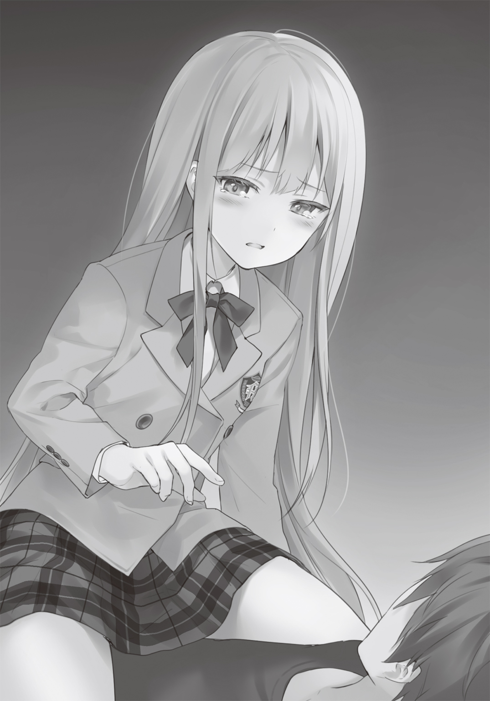
だから自分の命など、どうでもいいのだろうか？
馬鹿野郎......。
いや大馬鹿野郎だ。
お前は「結婚」という人として最大の幸運を携えて、俺の前に現れた。
なのに、自分から人の姿を諦めるなんて。それを軽々しく破棄するなんて。それじゃあ、鬼の姿となった巫女と一緒じゃないか。
だいたい......。
それでも！ 守ってやりたいと思う側の人間としては、無茶苦茶腹立たしいんだよ！
ハッと俺は我に返った。
顔を横に向ける。
清川さんは微笑んでいた。そして軽く頷く。
......ですよね。
そうだ。肝心な人間を守れないで、他人様を守れるなんてよくも言えたものだ。
また逃げるところだった......。
俺は心の中で「ありがとう」と清川さんに感謝した。
子猫は俺の腹の上からどこうとはせず、息を切らしながら「大丈夫か？」「大事はないか？」と心配する言葉を並べていた。
――まったく、そんなに心配なら、いなくなったりするなよ......。
「お前......」と声をかけると、子猫は「なんだ？」と返した。
「お前の方こそ、なんかやつれたんじゃないのか？ 飯を食わないと、本当にタマちゃんに負けてしまうぞ」
とない胸をみる。
俺の視線に気付いて、子猫は慌てて胸元を隠す。顔を真っ赤にして、があと声を荒らげた。
「な！ そ、そそそそんなことはないぞ！ い、今からな。......たらふく食うところなのだ」
「仕方ねぇなあ」
肘を使い、上半身を持ち上げる。やっと自分の態勢に気付いたのか、子猫は俺の腹から身を引いて、立ち上がった。俺も学校の制服をはたきながら、起立する。
「帰ったら、シチュー作ってやるよ」
「シチュー！」と子猫は涎を垂らす。同時にお腹の虫を鳴らした。
「その代わりに、牛乳たっぷり入れてやる」
俺はにやりと笑った。
「う。そ、それは......ちょっと......ダメだ」
この世の終わりだという顔をして、しゅんと肩を落とす。
「牛乳を飲まないと育つもんも育たないぞ」
「そ、そんなのは迷信だ。牛乳を飲まなくても、ちゃんと栄養を摂取すればいずれ......」
次第に声が小さくなっていく。
「はいはい。じゃあ、帰るぞ。俺も腹減ったし」
俺は腹をさすりながら、境内へ向かって歩き出す。
「み、ミー君。......待ちたまえ！」
と俺の背中に、子猫は声をかけた。俺は振り返る。
カッターナイフの切っ先を腕に当てた子猫が立っていた。
「子猫ちゃん!?」
ずっと横で見ていた清川さんが驚き、手を口に当てた。
子猫は激しく息をし、胸を何度も上下させた。その度に身体が動き、カッターの刃が柔らかな肌に接触する。何かちょっとしたショックを与えれば、一気にその刃は肌を切り裂く。そんな一触即発のシチュエーションが、突然俺の前に現れた。
普段の俺なら、慌てて「何をやっているんだ！」と叱ったかもしれない。交通事故、そして遊園地の事故が脳裏に浮かび、吐き気をもよおしていたかもしれない。
沸き立つような恐怖を感じていたかもしれない。
けれど、不思議と冷静でいられた。
それは今目の前にいる化け物の少女が、怖いと思うからではないと知ったから。
そもそもそれは、恐怖ではない。
後悔なんだ......。
大事な人を守れなかった。その後悔が、無力な自分が――いつしか恐怖へと変貌した。
だけど俺は今度こそ逃げない。
守ってやる――。
そう強く思えたから......。
「わ、私は――」と子猫は口を開けた。「私は不死の化け物だ。君を守るために生まれた安全装置だ」
それは俺が子猫の口から求めていた言葉だったかもしれない。
だが、今の俺にとって、なんの価値もない回答のように思えた。
「......今から。――そう。今から、その証拠を見せる。見ていてくれ」
子猫はその切っ先を押し当てた。手が震えている。怖いのだろう。不老であり、不死であると知っていても、己を傷つける事が怖いのだ。
ふっと頭に血が昇った。
殴ってやろうか、とさえ思った。
守る側を意識しない反則的な行為に、俺は我を失いたい気分だった。
けれど、ある一言が俺の怒りを押しとどめた。
――優しい言葉をかけた方が、相手にちゃんと伝わる時もあるのよ。
リニアの言葉だった。
「安全装置か。......それは違うぞ。俺が知っている潮乃女子猫は、ちっちゃくて貧乳で、いつも偉そうで、牛乳が嫌いで、強がっている割にすぐ泣くし、ロボットが好きで、炊事も洗濯も食事もまともに出来ず、すぐ部屋をゴミ屋敷にしてしまうようなダメ人間」
でも――と言葉を続けた。
「人が諦めるようなことを、一生懸命続ける頑張り屋さん。......どうだ？ 俺の言っていることは間違っているか？ 間違ってないなら、そのカッターを下ろしてくれ」
間違っているなら――とは言葉を続けなかった。
だって、俺の知っている潮乃女子猫なら、きっと――ほら......。
からり、と乾いた音が周囲の木々にしみいるように響いた。
俺は内心ほっと胸をなで下ろす。
「ふ、ふん」と鼻を鳴らし。「天才は努力を惜しまんからな」
と強がって見せるものの、あふれる涙を何度も拭っている。
まるで猫が顔を洗っているように見える。
「俺もお前に言っておくことがある」
「......なんだ？」と涙を拭いながら、俺の方を見た。
「朗読劇のヒロインはお前だからな」
子猫は一瞬逡巡したものの、いつもの仰け反りポーズで胸を張った。
「ふむ......。ま、まあ仕方がない。タマがいないようだし。私がやっても――」
「ちげぇよ。......俺はお前にやってほしいんだ」
その時の顔は、猫が突然大きな音に驚いたような表情とそっくりだった。
「俺が相手じゃ不服か？」
尋ねると、子猫はぶるぶると顔を振った。
そしてようやく意味を理解し、顔を輝かせると元気いっぱいに叫んだ。
「任せろ！」
第六章 少女の戦い
１
こうして結婚相談部はようやく同じ方向を向いて、自分たちの出し物に集中し始めた。
振り返ってみると、俺たちらしいと思う。
衝突して、いがみ合って、まさしく泣いて笑って喧嘩して......。
世界を救おうが、文化祭に出し物を出そうが、似たような展開に引きずり込んでしまう。これじゃあ、世界を救うという大事業が、安っぽく見えるだろう。
そして擦った揉んだの末、なんとか同じ鞘に収まるのだ。
相変わらずのハラハラドキドキ展開。
人が聞いたら、なんと思うだろう。おそらく面白いとは思ってはくれまい。
俺の経験上、自分が楽しいと思った事を、人が楽しいと思ってはくれないからだ。
こっそり話すが、俺は結構、今を楽しんでいる。
あれだけ文化祭否定派だった人間が、何を変節しているのだと思うだろう。
笑ってくれていい。
それでも俺は楽しいのだ。
仲間と一緒に何かをやり遂げるということを。
場面は少し進む――三日後の文化祭当日。
朝庭高校の文化祭は時期も特殊だが、開催方法も独特だ。
一日目はプレオープニングといって、一般客は入れず、生徒だけで文化祭を楽しむ。そして次の日の本番である十一月二十三日勤労感謝の祝日は、一般客を招待し、もてなすという趣向になっている。つまり、一日目は練習というわけだ。
だが、練習といっても本番と変わらない。
生徒の出し物はもちろん、外部からの参加者――クラブのＯＢ・ＯＧや商店街の人たちも、出し物や特別セールをするためにやってくる。その雰囲気は、本番と変わらない。
むしろピリッとした初日の空気は、本番よりも緊張する。
月曜日の夜にあがった脚本を元に、俺たちは準備期間残り一日となった火曜日に猛練習した。
俺と子猫、そして語り手役になった黒星が、脚本片手に声を張り上げる。
清川さんは演技指導と脚本の修正に集中する。土越は必要な効果音やＢＧＭなどをネットで漁った。
リニアはさすがに生徒会長としての職務が山積みらしい。
反旗を翻された生徒会メンバーに拉致られていった。
こうして生涯もっとも短かったと思える火曜日が過ぎ去り、文化祭当日を迎えたのだ。
２
「噴水前が使えない！」
素っ頓狂な声を上げたのは、子猫だった。
「ごめん......」
短く、そして暗い顔で謝罪を口にしたのは、リニアだった。
それは文化祭の当日の朝に発覚した。
俺たちが会場となる中庭の噴水前に行くと、数人の大人達が機材を並べていたのだ。その正体はすぐにわかった。商店街の有志の人たちだ。俺がよく行く書店の店主の姿もある。
そうだ。出し物を諸々の理由でキャンセルしたはずの商店街のおじちゃんおばちゃんが、何故か噴水前にいたのである。
どういうことだ、とリニアにすぐ問い合わせた。リニアも、商店街の交渉に当たってくれた生徒会の顧問に尋ねた。
真相はこうだ。ほんの三日前に、商店街の有志たちが、体調が回復したので、例年通り出し物を出させてほしいと顧問に打診してきた。顧問は、生徒会の進行表を確認した上で、商店街の人たちにＯＫを出したらしい。
実は結婚相談部の出し物や、子猫のこと、そして生徒会の事で多忙を極めていたリニアは、うっかり噴水前の使用許可の申請書を通すのを忘れてしまっていたというのだ。
つまり......噴水前でやるはずだった、朗読劇が出来ないということ。
事情を聞いた時、部員全員の落胆はすさまじいものだった。
昨日あれほど練習し、その前も色々あったにも拘わらず、結局出し物が出せないのだ。
俺ですら、言葉が出てこなかった。
忘れていた疲労が、どっと肩にのしかかってきて、膝から崩れ落ちそうになる。
「岳東さんを責めないで上げてください......」
リニアの肩に手を置いたのは、黒星だった。
「一応横で見ていましたが、顧問の先生に対し、かなりきわどい発言をして食ってかかってました。ミスをしたのも、忙しいにも拘わらず、我々の部の活動にも参加した事によるものです。そもそも期限が過ぎた後で出し物を決めたのは、我々ですから」
会議では散々リニアに突っかかっていた黒星が、珍しく励ますような発言をしている。
俺はちょっと感動しそうになった。
「まあ、言葉責めをするには、まだまだスキルが足りていないようでしたが」
前言撤回――。やっぱり黒星は黒星だった。
「ほんと............ごめん......なさい..................」
ずっと俯き加減だったリニアの目に、涙があふれる。頰を伝い、ぽろぽろと涙が落ちた。煉瓦道の上に円になって広がる。それが幾重にもかさなり、煉瓦に黒いシミを作った。
号泣だ。
リニアは顔を伏せ、手で覆い隠しているのに、涙をせき止められない。
普段は、ツンデレで（しかしデレはない）、可愛いものに目がなくて、怒ればすぐに魔法をぶっ放す好戦的な少女が、汚れを知らない少女のように泣いている。
――何だかんだと言いながら、こいつも文化祭を楽しみにしてたんだな。
その気になれば、彼女はいつでも職務を放棄できた。彼女の本来の世界は別にあるからだ。そして生徒会を理由に、部活動を休止する事もできた。
けれどそうしなかった。なんとか両立させ、文化祭を成功させようとした。
リニアはリニアで、ちゃんと頑張っていたんだ。
「ありがとな、リニア......」
頭頂をこちらに向けたブラウンの髪を、俺はそっと撫でた。
震えていた肩の動きが止まる。
ゆっくりとリニアは顔を上げた。ぐしゃぐしゃの顔。頰には幾筋もの涙の痕。目は子猫の瞳のように赤くなっている。俺は遊園地での子猫の顔を思い出していた。
――あの時も、こうしてちゃんと言葉をかければ良かったんだ......。
と今になって反省した。
「わ、わた――わたし！ 失敗したんだよ！ 感謝される謂われなんて......」
俺は首を振った。
そして「見ろよ」と言って、首を巡らした。
屋台や模擬店がそこかしこに並んでいる。屋上からは手書きの幕が下ろされ、『第六十二回朝庭祭』とポップな文字で書かれていた。校舎の中では生徒達が忙しく走り回り、飾り付けなどの作業に追われている。噴水前では商店街のおっちゃんおばちゃんが楽しそうに談笑しながら、設営の準備をしていた。
「みんな、楽しそうだろ。......これ全部、お前が指揮してやったんだぞ」
俺に言われて、リニアは改めて高校の中を見回した。
軽快にトンカチを打つ音が聞こえる。生徒達の笑い声が聞こえる。誰かが大きな声で指示を出しているのが聞こえる。屋上から下ろされた幕がはためく音が聞こえる。
文化祭の音が聞こえた。
「お前はさ。......こんなに大きな事をやってのけて、ただ一回だけ、ミスをしただけだ。胸を張っていい成果なんだよ」
「でも......。私は肝心なところで――」
とまたリニアの瞳に涙が浮かぶ。
それを押し止めるように清川さんがリニアを抱きしめた。
「ありがとうね。リニアちゃん......」
「ごめんね。靜花......。私............」
「ううん。リニアちゃんは頑張ったよ。磯風君の言うとおり、胸を張っていいんだよ」
また、リニアの髪を梳るように頭を撫でた。
二人の少女が抱き合う姿に、俺はもらい泣きしそうになる。
「いやあ、安定のリニ×しずだね」
お前は安定の感動ブレイカーだな、土越。しばらく口をきけない身体にしてやろうか！
「しかし、どうしましょうか？」
ここで声を上げたのは黒星だ。さすがは部長である。
感動に流されず、冷静に事態打開について考えているようだった。
「こうなっては実力行使しかありませんね。足腰が立たなくなるまで、ご老人達を調教して差し上げましょう」
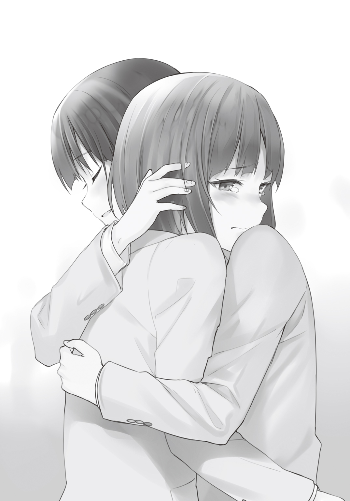
鞭を取り出し、パシンと鋭い音を鳴らす。
......やっぱり黒星は黒星だった。足腰......って、すでに立つのも難しいと思うぞ。
皆が思い思いのポーズで、考える。
「今から他に場所を」「いやそれなら、今からでも出来る出し物を考えてはどうか？」「部室なら出来るぞ」「でも、そんなところまで来てくれますかね」「この際、仕方ないでしょ」「でも、いろんな人に見てもらいたいよ。あそこじゃ人が入らない」「やっぱり出し物を考え直すとか」「今からはちょっと......」「今日のプレオープンは諦めて。なんとか明日」
「ふふん。どうやら、この土越案内の出番のようだね」
皆が口々に案を出す中、やたらと自信ありげな声を上げたのは、土越だった。
「何か？ 良い案があるのか？」
藁にもすがる思いで、俺は土越に尋ねた。
「オフコース！ 言ったじゃないか。僕の役目は主人公を導き案内することだよ。ここで良案を出さずして、いつ僕が活躍するんだい」
一生活躍しなくていい、とツッコみたかったが、一生分の涙を呑んで俺はこらえた。
「ご託は言い！ とっとと言え！」
「ならば発表しましょう！ 土越案内お勧めの出し物は！」
ラジオドラマです！
みんなの反応は、沈黙だった。
前回、こいつの《ガン丸Ｍｋ－Ⅱ》のおかげで俺たちは世界を救う事が出来た。その過去があったからか、心の底ではそこそこ期待していた事も認める。
が、これは――ちょっと微妙............。
結婚相談部の部員達も、俺と同じ思いだったのだろう。自信満々といった感じで発表した土越案内に、全員が向けたのは、沈黙だった。
当の本人は、ドヤ顔のまま、空に向かって指さすという奇妙なポーズで固まっている。万雷の拍手でも待っているのだろうか。おそらくそれは一生やってこない――。
――はずだった。
「いけるかもしれない......」
え？ と皆が一斉に振り向いた。
声を上げたのは、驚くべきことにリニアだ。顎に手を当て、ぶつぶつと呟いている。
「おい、リニア！ 自分がミスしたことをなんとか挽回しようとして、無理言ってないか!?」
「違うわよ。可能だと思ったから、そう言ったの！」
むっとした顔を俺に向けた。いつものリニアの表情だ。
「校内放送で流せばいいのよ」
「あ、それ面白い」と食いついたのは清川さん。
「待ってくれ。......放送室を使う事になるけど、放送部は許してくれるのか」と俺。
「そうですね」と黒星は冷静に分析する。「確か彼らの出し物は、校内生放送だったはずです。すんなりと放送室を貸してくれるとは。......直接占拠しますか!?」
鞭をしまえ。やっぱり全然冷静じゃない！
「いいえ。プレオープンの日だけ、全出し物が止まる時間があるの。そこに私たちのラジオドラマを放送する」
「それって？」
「お昼休みよ！」
そうか。プレオープンの日だけだが、昼休みがある。その時間学生は昼食を摂るように言われる。放送部の校内生放送とやらも、そこで休憩をとるはずだ！
「でも、お昼休みは学校との規定で、出し物は一旦中止しなければならないのでは？」
「私が先生に掛け合うわ。......その後、放送部にも。彼らの助けが必須だし」
「私も行きましょう。言葉責めのお手本を見せて上げます」
リニアと黒星はやる気だ。
「私も、すぐにラジオドラマ用に脚本を書き直すよ」
清川さんも両手をグーの形にして、臨戦態勢。
「ラジオドラマっていうよりは、校内ドラマだけどね。......ふふん、どう？ 磯風君。僕、偉いでしょ。褒めて褒めて」
土越は頭を差し出してくる。どうやら撫でてほしいらしい。
一瞬悪魔のささやきで望み通りにしてやろうと思ったが、やっぱ殴ることにした。
「痛った！ なんで殴るんだよ」
「調子のんな。......まあ、でも冴えたアイディアである事は認めてやる」
「磯風君」と目をうるうるさせる土越。うわ、やっぱ気持ち悪い。あっちいけ！ しっしっ！
「子猫。お前は？」
皆が校内ドラマの準備をするため、ちりぢりになって走って行く。
だが、その中で子猫だけがボーと遠くを見つつも、何か考え事をしているようだった。
「子猫、俺たちは清川さんの手伝いを――。......どうした？」
俺が声をかけると、子猫は我に返って顔をこちらに向ける。
「あ。いや......。ミー君、ちょっと確認したいことがあるので、先に部室に行っておいてくれ。必ず後で行くから」
子猫の言葉を聞いた時、説明しようのない不安が俺に襲いかかった。
何か無茶をするのでは？ という疑念がよぎる。
しかし子猫の顔は、何か覚悟を決めたような――そんな表情をしていた。
「わかった。必ず来いよ」
それだけを言って、俺は部室へと向かう部員達の列に混じっていった。
※ ※ ※
百鬼タマは朝庭高校のゴミ置き場に一人立っていた。
黒のコートから一枚の紙を取り出す。それは結婚相談部が提出した出し物の申請書だった。
タマはそれをなんの躊躇いもなく、ビリビリと破り捨てる。
そして手近なゴミ袋の中に、紙切れを無理矢理押し込んだ。
ほっと息を吐き出す。
「やはり、ここにいたか？」
タマの小さな肩が、びくりと震えた。つま先の丸いブーツを鳴らし、振り返る。
高校にいては少々不自然なぐらい小さな少女が立っていた。
白い髪が揺れる。薄紅色の瞳が、校舎の大きな影にあっても、輝いて見えた。
潮乃女子猫。自分の同位体。そして不死、不老。つまりは化け物だ。
「あんた、なんでここに？」
「なんとなくな......」
「なんとなくでこんなとこに来る？ タマの仕業ってわかってたってわけ？」
「リニアと私は幼なじみだ。たとえどんなに忙しくても、肝心な仕事をミスするような娘じゃない。したがって、申請書を出していないというのはあり得ない。......まあ、リニアは忙しかったから、自分がミスをしたと思っているようだがな」
「タマを罰しに来たんでしょ！」
「いや、違う」
子猫は否定した。
そして唐突に、タマに向かって頭を下げた。
深く深く――数秒、最敬礼をした後、子猫は姿勢を元に戻した。
「ありがとう」
罵倒でも、謝罪でもない。
感謝の言葉に、タマは二度驚かされた。
「な、なによ！ 気持ち悪い！ あんたに感謝されるなんてことは」
「ミー君を守ってくれた」
はあ............？ 一瞬タマは言葉に詰まった。
「馬鹿なの！ そ、そんなの......。タマたちの使命から考えたら、当たり前でしょ」
「そうだろうか？」
「な、何よ。これでもタマはあんたの同位体で――」
「私が知っているタマならこう言うはずだ。磯風奇跡は無限にいる、と――」
「――――ッ！」
タマの反論が止まった。
「だけど、君は磯風君を救ってくれた。私はだから、感し――――」
「救ってなんかいない！」
タマの叫びが子猫の言葉を遮った。
「あいつが！ お兄ちゃんが勝手にタマを救ったの！ タマは救ってない」
「だが、タマがいなければ、ミー君は下敷きになっていたかもしれない」
子猫は黒星から現場の詳しい状況を聞いていた。確かにタマは何もしていないと言えるかもしれないが、彼女がいなければそのまま下敷きになっていたというのが、黒星の結論だ。
「そんなの結果論でしょ。タマは何もしてない！」
「タマ！」
「何よ！」
「だったら、お前は何故泣いているのだ？」
「え？」
タマはそっと頰を触る。自分の白磁で出来たような指先を確認した。一粒の滴が――つぶれた丸い透明のものが、指先にちょこんと載っていた。
なんで？ と思った。
今は悲しくなんてない。むしろ怒っている。むかついている。いけ好かない。自分の事をパートナーに話す勇気さえない未熟な精神の女。大っ嫌いだ。だからこの女が楽しみにしていた文化祭を台無しにしてやったのだ。――それなのに、感謝され、同情された。
――これほど腹が立つことが今まであっただろうか？
なのに、だ。自分は涙を流している。涙は、弱いものが流すものだ。
自分は弱くない。頭もいいし、何だって出来る。ただ一つと劣っているのは、この小さな身体ぐらい。だが決して衰えない身体を、疎ましく思った事はない。むしろ誇りに思う。たとえ身は小さくても、どんな人間よりも優れているという自負があるから。
けれど、自分よりも劣った精神の持ち主の前で涙を流すなど......。
――自分がより弱いと、認めているようなものじゃないか。
「タマ、お前は何を恐れているのだ？」
「恐れてる？ ......ふん。そ、そうかもね。そうだよ。タマだって怖いよ。いつか磯風お兄ちゃんがいなくなるかもしれない。それは本能的な恐怖だよ。タマ達はお兄ちゃんの安全装置。それはもう仕方がないことなんだよ。......お、お姉様だってそうでしょ。怖いんでしょ」
そうよ。......泣き叫ぶがいい。
タマが優しくしてあげるから............。
「うん。そうだな。......私も怖い」
ほら............。やっぱり.....................。
「そうよね。だって、お姉様はまだ自分が不死だって言えないくらい臆病者なんだから。よっぽどタマの方が偉いもん」
「それもそうかもしれないな」
「タマが聞いて上げる。相談に乗ってあげる」
「そうか。ならお願いしよう」
「どうぞ。なんでも言って......」
「私は磯風奇跡がいなくなることよりも、怖いことがある」
タマは顔をしかめた。
「お兄ちゃんが死ぬことよりも......？ それはなんなの？」
「それは――――」
パン！
まだ太陽が低いうちから、花火が上がった。
校内放送が流れ、朝庭高校の文化祭の開会が宣言される。
表の方からは歓声が上がり、拍手が聞こえてきた。
子猫が磯風奇跡を失うことよりも怖いものについて聞いた時、タマは少し呆然としながら、こう答えた。
「馬鹿じゃないの......」
子猫は薄く笑みを浮かべた。
「だから、タマ......。私の相談に乗ってはくれないだろうか......」
子猫はタマに向かって手を差し出した。
３
部室に集まった結婚相談部の部員達は、唸っていた。
放送部と生徒会の顧問の先生に交渉しにいったリニアと黒星も、戻ってきていて、椅子に座り考えごとをしている。
清川さんの顔は真っ青になっていた。その頭を抱え、机に広げた原稿用紙を見つめている。
放送部との交渉はすんなりとうまくいった。割と向こうも乗り気らしい。わざわざ部長が部室にやってきて、「よろしく！」と元気に挨拶しにきたぐらいだ。結婚相談部と他のクラブの仲は、文化祭の場所取りの一件で険悪なものになっているが、放送部は違うらしい。
生徒会の顧問の先生との交渉もうまくいった。どうやら顧問の先生の方でも、何か良案がないか考えていたのだそうだ。規定を破ることには渋い顔をしたが、目をつぶってくれるという。
校内ドラマ案はとんとん拍子で進んでいったが、ここに来て問題が発生した。
おかげですべての作業がストップしている――今はそういう状況だった。
部室の扉が唐突に開かれる。
全員が振り返った。
「子猫......。――と、タマちゃん？」
扉の向こうに現れたのは、子猫だけでない。黒のコートを纏ったタマちゃんも立っていた。
「今まで、どこに行ってんだ？ 心配したんだよ」
「ごめんなさい......」
あれ？ と思った。いつもなら「お兄ちゃん！」と叫んで、腰にタックルしてくるところだ。しかしタマちゃんは少し俯き加減で謝罪する。明らかにいつもの元気がない。
「タマちゃん！」
目を輝かせたのはリニアだった。「げ！」と口を開け、タマちゃんは後ずさったが、遅い！
現れた幼女に、リニアは逆タックルをしかけ抱きつく。
小さなほっぺの感触を楽しむように、自分の頰を合わせた。元気だな、お前......。
「り、リニアお姉様。く、くるしいよ」
タマちゃんはリニアの身体に何度もタップする。
「リニア、それぐらいにしておけ。それよりこの雰囲気。また何かあったのか？」
子猫に質問され、リニアはタマちゃんにかけたホールドを解く。飼い主の深い愛情に困惑する猫のように、その場を離れ、俺の後ろまで退避した。距離を離しても警戒は怠らず、じっと薄青い瞳でリニアを見つめている。
リニアは子猫に放送部と学校側の交渉がうまくいったことを告げた。
「けど、問題はそのラジオドラマで――」
「ラジオドラマって、音だけの情報でリスナーに伝えなきゃならないの」リニアに代わって説明したのは清川さんだ。「だから、ビジュアルが付かない分、脚本を書き直さなきゃらない」
「しかも、効果音で場所を説明したりするにしても、放送室の設備では台詞と音楽を同時に出来ないんだよ」と土越がさらなる問題点を付け加えた。
「それが何か問題があるのか？」
「これが大ありなんだ。台詞が入る度に、ＢＧＭや効果音を一旦オフにしきゃならない。だからどうしてもＢＧＭを不自然に切らなきゃならないんだよ」
「つまり、作品の臨場感を損なう、ということか......」
「そういうこと」
土越は深く頷いた。おそらく彼は彼なりに悩んでいるらしい。だがデフォルトの顔が笑っているように見えるので、何故かこの状況を楽しんでいるように見える。土越には悪いが、無性に殴りたくなってくる。
「ひどい！ この顔は元々なのに！」
だから、心を読むなよ......。
「それだけではありません。ラジオドラマというのは、たいていの場合、出てくる登場人物のビジュアルが決まっています。オーディオドラマに俳優が声を当てているなら、リスナーはその顔を思い浮かべるように、ビジュアルボードみたいなものが我々にはありません」
漫画や小説のラジオドラマなら、すでにキャラクターのイラストが付いているから、わざわざビジュアルボードを立てる必要はない。
だが、俺たちは素人。しかもまだ結婚相談部は出来て日が浅い。誰が声を当てているなんて、想像できる人間など、この校内では数少ないだろう。
ここに来て、朗読劇なら何も問題なかった小さな点が、俺たちの肩に重くのしかかった。
子猫はしばし考えた後、タマちゃんを見つめた。
「タマ......。お前、絵がうまかったな」
いきなりそんな事を言われて、本人は目を丸くする。
「う、うん。それがどうしたの、お姉様」
いつもの妹声で返事を返す。
「お前がそのビジュアルボードを描け。それをコピーして、昼休みまでに生徒に配る」
「そうか。タマちゃんの画力なら」
俺は一度彼女が描いたフェアリィリボンを見ている。プロの編集者に渡しても問題ないぐらいの出来だった。しかも短時間で描いていたから、今からでも間に合うかもしれない。
「タマちゃん。俺からも頼む」
俺は手を合わせ、頭を下げた。
タマちゃんは俺と子猫を交互に見つめる。最初は戸惑っていたが、暗く沈んでいたスカイブルーの瞳が、雲から姿を現した太陽のように輝き始めた。
「うん。わかったよ、お兄ちゃん」
「それと、靜花......」子猫は向き直る。「とりあえずギリギリまで修正作業を進めてくれ」
「でも間に合わないかも......」とすがるような目つきで、清川さんは答えた。
「大丈夫。......あとは私とミー君でどうにかする。だろ？ ミー君」
子猫が俺を見つめる。
薄紅色の瞳に、好奇の光が宿っていた。
俺は少し笑い、少し安心した。
――わかってるよ。お前がその目をする時は、何を言っても無駄だってことぐらい。
「ああ。大丈夫。俺と子猫を信じてくれよ。清川さん」
子猫と俺の言葉を聞いて、清川さんもようやくエンジンがかかったらしい。
頑張る！ と自分と周りを鼓舞するように、片手を突き出し、作業に取りかかった。
タマちゃんも清川さんからあらすじをもらい、早速ラフを描き始める。
「あの......僕は？」
と言うと、俺は隣に座った土越の肩を叩いた。
「俺を導くのが、お前の仕事なんじゃないのか？」
挑戦的な笑みを浮かべる。
すると土越は、いつものジャック・オ・ランタンの笑みを浮かべた。
「ふふふ......！ その通り！ 主人公を導くのが我が使命！ 我が案内！ 我が案内道を阻む障害など、我が案内の餌食にしてくれるわ。ふふふ、あははははははは......」
変な高笑いを浮かべ、土越はそのまま部室を出て行った。
案外単純なヤツだったんだな......。
こうして俺たちは、リミットギリギリまで作業を進めたのだった。
４
『本番五分前だけど、大丈夫ですか？』
ヘッドセットから少女の声が聞こえた。ブースの外を見る。放送部の女部長が手を振っていた。俺は軽く頷き、周りを窺う。
放送部のブースは機器がくたびれてはいるが、環境としては悪くない。設置されたマイクには、本格感を漂わせるポップガード。ヘッドセットも少し重たいが、性能は問題ない。壁の吸音板は新調したばかりなのだろうか。オレンジ色の木材が、ブース内の電灯の光を反射し、白く輝いていた。
今、放送部のブースには、俺と子猫、清川さん、そして土越が入っている。
俺と子猫はヘッドセットを頭にかぶり、臨戦態勢を整えていた。その横で、清川さんは脚本の改訂作業を。土越はどこからか古びたラジカセを二台持ってきて、机の上に並べている。そのラジカセに三本目のマイクを向け、調整している。
「お前、それどうするんだ？」
「少し強引だけど、ラジカセの音をマイクに拾ってもらう。さっき少しテストしたけど、大丈夫のはずだよ」
いつになく真剣に（こいつの場合やはり笑って見えるけど）、土越は答えた。
「靜花......」
対面に座る子猫は、心配そうに隣の清川さんに声をかけた。
「わかってる。......あと三分だけ待って。お願い」
手を止めない。原稿に一心不乱に向かい、ペンを走らせている。
「よし。こっちは終わったよ」
土越はセッティングを終えた事を告げた。そのまま俺の横にある椅子に居座り続ける。
出て行ってほしいのは山々なのだが、土越には二、三台詞が用意されているため、このまま居させるしかない。屈辱だが、仕方あるまい。
『二分前』と告げる声が聞こえる。
俺はすでに出来上がっている部分に目を通した。
若干、走り書きされた原稿には、清川靜花の魂が刻まれている。
今一度、ブースの外を見た。
数名の放送部員が慌ただしく作業をしている。
そこに他の部員達の姿はない。
おそらく向こうは今も、タマちゃんが描いたキャラクターが載ったビラを、あちこちに配ったり、貼ったりしているのだろう。ブースは完全に遮音されているが、リニアが、黒星が、タマちゃんが声を張り上げて、生徒達にビラを配っている声が聞こえてくるようだった。
『本番一分前』と声がかかった。
「靜花......。お前はよく頑張った」
隣に座る黒髪の少女を労うように、子猫は背中を叩いた。
「ごめん......。力不足で」
清川さんは顔を覆う。小さくしゃくり上げ、声を殺して泣き始める。
今からそっちに回って、抱きしめて上げたい。俺も釣られて泣きそうだった。
「涙するのはまだ早いぞ。それは終わってからに、とっとくものだ。大丈夫。きっと私たちが成功させる。私とミー君が凄いのは靜花もわかっているだろ。〇・〇〇〇〇〇〇〇〇一％の確率を引き当て、世界を救ったのだ。私たちを信じてくれ」
子猫に励まされ、清川さんは何度も頷き、泣くのをやめて前を向いた。腫れ上がった目を見て、俺は「大丈夫」という言葉を直前で呑み込んだ。それは適切ではない。彼女の努力と涙の成果は、今俺たちが実現するんだ。
『本番三十秒前です』
ビリビリと――あの《パンドラ改》の電撃を受けた以上の感覚が、全身を襲った。
今まで他の二人の作業を心配するあまり感じてこなかった緊張という感覚が、足のつま先から頭の天辺まで駆け上っていったのだ。
顔を歪めたくなるような重圧が襲う。今から俺はたった今渡された原稿を使って、演技しなければならない。自分の声が、全校に響き渡る。それを思うだけで、頭が重くなってきた。
正直に言う。逃げ出したい――――。
でも、それは直前まで作業していた二人を、そしてブースの外で今でも宣伝活動をしている部員達を裏切る行為になる。
それだけはやってはいけない。絶対にだ。
俺はブースの外を見た。
放送部の部長が、俺の視線に気付き、安心させるように親指を立てて、少し笑った。俺は少し首を前に倒す。口には出さなかったが「ありがとう」と感謝の言葉を贈ったつもりだった。
ぶつぶつと何か呪文のような声が聞こえて、前に向き直った。
純白のシルクで編まれたような髪。優雅な曲線を引いた白眉。真綿のような柔らかな肌。
まだ花開く前のバラのような色素の薄い赤眼は、出来たばかりの原稿に向けられていた。
その瞳が、ふと持ち上げられた。
形の良い唇が、俺に向かって動かされる。
「なんだ？」
俺は「なにも......」と軽く首を振り。
「頑張るぞ。......俺とお前なら出来る」
「当たり前だ......。私は天才科学者だぞ。君こそ私の足を引っ張るなよ」
「はいはい」と苦笑した。
『はじめるよ』
ヘッドセットからの声を聞いて、俺たちは同時に頷いた。
心臓の高鳴りが凄い。意識的に胸に手をやり、落ち着こうとした。
正面を見る。子猫も同じような事をしていた。小さく白い手は、震えている。天才だなんだと言いながら、やっぱり子猫も緊張しているのだ。
『五』
カウントが始まる。
俺は少しこれまでの事を思い出していた。
最初はそうだ。俺が文化祭に反対したところから始まったんだっけ。で、子猫と喧嘩して。
『四』
仲直りは出来たけど、今度はタマちゃんが来て、まだごちゃごちゃになって。どさくさの中、朗読劇が決まって。
『三』
そう言えば、黒星に頭を下げられたなんてことあったっけ？ あれには凄くビビった。
『二』
で、人生初の清川さんのお家参りを決行......。そう言えば、あのチビ清川さんは、妹だったのだろうか。それともロリババアだったのだろうか。今さら気になってきた。
『一』
いろんな事があったな。何度も「無理じゃね？」って思う事はあった。
だから――。
その思い出を良いものにするのか。それとも「私たちよく頑張ったよね」っていいながら、肩を叩き、無念さをこらえるのかは、俺たち次第なんだ。
俺たちは素人だ。しかも自分たちで何か一つのことをやるってのも、初めての試みだ。
苦い思い出だって、後になって振り返ってみたら良い思い出なのかもしれない。
けれど、やるからには成功させたい。
みんなだってそうだろう。中途半端な結果だけを求めて、一生懸命やってきたわけじゃない。
涙を呑むためにやってきたわけじゃない。
大きく歓声をあげて、笑い合うためにやってるんだ、俺たちは！
最後のカウントはない。代わりに放送が聞こえてきた。
『これより結婚相談部によるお昼の校内ドラマ「鬼の子供と囚人の話」をはじめます』
ブース内の時計は、正午を指し示していた。
５
土越は再生ボタンを押した。
馬のいななき声がラジカセのスピーカーから聞こえる。
続いて聞こえてきたのは、荷車を引く音。馬の足音が一定のリズムを刻む。馬車だ。
ブースの外を見た。廊下に出て、音量を確認していた放送部員が手でＯＫのサイズを送る。
俺と土越は同時に頷く。
二、三秒鳴らした後、馬がいななき、馬車が止まった。ぶるる、と鼻嵐がリアルに聞こえ、俺の頭の中に鬣を振るう馬の映像が浮かんだ。
「そら、立つんだ！ 囚人め！」
いきなり土越は俺のマイクを摑み、台詞を言った。
効果音に気を取られていた俺は、一瞬パニックになる。そう言えば、第一声は土越である事を忘れていた。しかも普段の声とは違って、なかなかのイケボである。
目を丸める俺をよそに、土越の台詞は続いた。
「お前は、これから鬼様の供物として捧げられる。ありがたく思うがいい。本来なら死罪を申し言い渡されてもおかしくない。領主様の寛大な御慈悲だ。ありがたく思え」
なかなか堂に入った演技だ。ホントにこいつ何者なのだ？
「それが今回の貢びものか！」
声が裏返った。
子猫の第一声である。俺は少し盗み見た。真っ白な頰が赤くなっている。
だが原稿から目を離していない。子猫は落ち着いて次の台詞を言った。
「疾く帰れ、人間ども！ さもなくば、お前達の首をへし折って、酒杯にしてやるぞ」
土越はラジカセの再生ボタンを押す。
岩山が崩れるような音が鳴り響く。
「ひぃひいいいいいい！ 鬼だ。鬼が現れた！」
土越は悲鳴を上げる。迫真の演技だ。ま、普段から悲鳴を上げるような事ばかりしているからな。この辺はお手のものなのかもしれない。
土越は忙しく立ち回る。すぐに再生ボタンをオン。囚人を護送してきた兵士が、慌てて逃げていく音がスピーカーから漏れる。続けて鞭を入れて、馬車が去って行く。フェードアウトしていくタイミングまで完璧だ。
これで土越の役は終わり。あとは効果音とＢＧＭを担当する。
土越はいい仕事をした。音の秒数まできちんと測っていて、申し分ない。
少々屈辱的だが、土越の動作に目を奪われてしまった。
ブース内が沈黙する。
ん？ と俺は周りを見渡す。清川さんが苦笑し、土越が口端を広げている。
子猫がむすっとした顔で俺を睨んでいた。
あ、やべ！
「こ、ここここれが鬼か。......まだこ、子鬼ではないか。しかも娘の子鬼」
慌てて俺は原稿を読んだ。初台詞。土越があまりに良い仕事するからすっかり忘れた。
幸いにも、俺の台詞は鬼の姿に驚いた囚人にぴったり合っていて、不自然ではない。だが、完璧遅れた。ああ、くそ！ 初っぱなから何やってんだ俺は！
「そうだ。人間よ！ 恐れをなすがいい。......あははははは。あーははははっ――」
高笑いする。すると子猫はむせ返りそうになり、慌ててマイクから顔を離した。
手を押さえ、何とか咳を殺す。横についていた清川さんが、背中をさすった。
子猫の醜態を見ながらも、俺はなんとか冷静に次の台詞を告げる。
「いや、全然......」
短い台詞。まだ子猫の咳は止まっていない。マイクから顔を背けている。
効果音が鳴った。のっしのっしと鬼が囚人に近づいてくるような音。土越はその音をリピート再生して、長めに入れる。それでも稼げた秒数は、五秒ほどだ。
だが、その数秒が幸いした。子猫がマイクの前に復帰する。
「なんだと！」
雷の効果音――。
「いいか！ 人間！ 鬼は噓が嫌いなのだ。私の父親は人間に噓をつかれて殺された。だから人間は嫌いだ。噓をつくヤツはもっと嫌いだ。もしお前が噓をついているなら、お前の生肝をえぐり出して、酒の肴にしてやるぞ」
「私は噓をついていない。私はお前を恐ろしいとは思わない。お前は子鬼ではないか！」
「私は子鬼だ。けれど、お酒を飲めば大きくなることも小さくなることも出来る。そしてあと千年経てば、母のようなナイスバディになるのだ」
この「ナイスバディ」という単語は、清川さんが意図したものではない。事前の打ち合わせで子猫が、ごり押しで入れたものだ。
中世日本みたい設定なのに、ナイスバディはねぇだろう――と思うのだが、子猫にはどうしても必要なものだったらしい。まだ気にしてんのか。身体測定の結果......。
「だが、お前はいま子鬼の姿をしているから、私は怖くない」
雷と岩が削れる音を鳴らし、鬼の怒りが表現される。
「ならば、この鬼の角を見ろ。立派だろ。牛馬を一突きにだって出来るぞ。どうだ、恐ろしいだろ？」
「いや、全然......」
「では、この牙はどうだ。凄く鋭いだろう。お前達が作る刃とて、ここまで鋭くあるまい。どうだ、恐ろしいか？」
「いや、全然......」
「噓をつけ！ お前は噓をついているだろう！ 怖くないのか。この角でお前を一突きにすることだって出来る。大きな牙でお前の胴を切り裂くことだって出来るんだぞ」
「そうかも知れぬが......。私はそれでもお前を恐ろしくは思わない」
火山が噴火したように、音の中で再び鬼が暴れた。
「ちょっと待っていろ！」
すたすたと、歩いて行く音がフェードアウトする。そして間髪容れず、フェードイン。
次の瞬間――。
重たい金属の塊を地面に打ち付けるような派手な音が響いた。
「この鬼の金棒は、二百貫もあるのだぞ。私はこれをこうして！」
風を切る音が数度鳴る。
「どうだ！ 自由自在だ。お前にぶち当てたら、木っ端微塵になるだろうな。......恐ろしいか？」
「いや、全然......」
「くぅぅ！ ちょっと待っていろ！」
水が注がれる音が、少々長めにとられた。
鬼が酒杯に酒を注いでいるのだ。
「どうだ？ お前たち、人間が千人集まっても三日と飲める事が出来ない酒だ。私はこれを一口で飲むことが出来るんだぞ」
すると差し出されたのは、大きなガラスのビーカーだった。ガラスには「一〇〇〇ｍＬ」と書かれている。そのメモリー一杯まで水が入っていた。
おい、あれを飲めと？ 差し出した土越を睨む。
子猫は一瞬「え？」という顔をし、ビーカーを無言で見つめた。
しばし目を泳がせていたが、意を決した。ビーカーを両手で持ち上げ、水を飲み始める。
ごきゅ、という喉を鳴らす音が、マイクに拾われる。
――おいおい。子猫......。無理して全部飲む必要はないぞ。
喉を鳴らす音が拾えればいいのだ。だが、子猫はやめない。一リッターの水を飲み干そうとしている。口元から水があふれ、薄いアイボリーのブレザーに滴る。
清川さんが手を差し出し、子猫に止めさせようとした。だが、当人はビーカーを離さない。
そして――。
「ごはああああ！」
長いゲップを上げながら、子猫は飲みきった。
これを聞いていたリスナーはどう思っただろうか。迫真の演技と手を叩いてくれただろうか。まさかこんな無茶がブース内で行われているとは思わないだろう。
「ど、どうだ！ 一気に飲み干したぞ。......はあはあ、どうだ？ 恐ろしいか？」
恐ろしい、と言ってあげたい。子猫の役者根性を。
しかし俺が演じる囚人は、かなり不感症なヤツらしい。
「いや、全然......」
事も無げに言う。全然じゃねぇよ。結構凄いことやったぞ、子鬼は。
「なんだとぉ！」
顔を真っ赤にしながら、子猫は怒鳴った。完全に役者とキャラが一致している。
そこからは効果音のオンパレードだ。
酒杯が割れる音。地面が割れる音。鬼が地団駄を踏む音。
あらゆる騒音が渾然一体となって鳴り響く。十秒ほど続いただろうか。次第に音はフェードアウトし、土越から子猫へキューが出された。
「......はあはあ。――どうだ！ 恐ろしくなったか！」
「いや、全然......」
今さらだけど、俺ってほとんど「いや、全然......」ってしか言ってない。これって俺の演技力を考えての事だろうか？ 清川さんにそう思われていたのなら、若干ショックだ。
「お前は何故、私を恐ろしく思わないのだ？」
そして俺は、ようやく違う台詞を言った。
お前が、美しいからだ............。
「お前の白い髪......。白い肌......。たとえのわからぬその不思議な光を放つ目。私はお前を恐ろしいとは思わぬ。だが私はお前を美しいと思うのだ」
は、はずい......。
この台詞は何度か練習している。朗読劇の時から用意されていて、ラジオドラマの脚本になって若干言い回しは変わってはいるが、大きな変更点はない。恥ずかしさのあまり練習では何度も嚙みまくり、黒星の鞭を受けたものだ。
初練習初台詞の際には、恥ずかしすぎて笑いがこみ上げてきた。
そもそもこの説明のビジュアルが、あまりに子猫と近すぎる。タマちゃんが描いたイラストも、子猫そのものだったし。
俺はまた子猫を盗み見た。
ふと視線が合う。俺たちは慌てて目をそらし、原稿用紙に集中した。
子鬼役の少女の顔は真っ赤になっていた。
そしてぽつりと台詞を呟いた。
「噓だ......。お前は噓をついている」
鬼の怒りの小ささが、絶妙な加減で表現されていた。
６
初ＢＧＭが流れる。
先ほどの緊迫した雰囲気とは真逆のちょっとのどかな曲だ。
今にも「おじいさんは山へしばかりに、おばあさんは川へせんたくに行きました」という声が聞こえてきそうな。
そのＢＧＭをバックに、澄んだ良くとおる声が響き渡る。清川さんの語りだ。
「鬼の子供はしばらく囚人を生かしておくことにしました。
囚人の青年はとても働きものでした。鬼のために料理を作ったり、畑を耕したり、お風呂を沸かして背中を流してくれたりしました。おかげで冬に食べ物に困ることもなければ、寝る時にシラミを気にする必要はありませんでした。ただいつも口酸っぱく『酒を飲み過ぎるな』と言われるのが嫌でした。
鬼は何故、こんな青年が自分に供えられたのか不思議でなりませんでした。青年は囚人です。何か罪を犯したに違いありません。でも鬼はきっと囚人が人間に騙されたのだと思いました。
ある時、鬼の子供は自分によくしてくれる青年が喜ぶことがしたいと考えました。
鬼の子供は訊きました」
いつ聞いてもいい声だぜ。寝る前とかに聞いたら、ぐっすり眠れそうな。俺の癒やし......。
ガッン！
――痛った！
声を上げそうになったが、俺は寸前のところでこらえた。いきなり脛を蹴られたのだ。
机の下からの唐突な襲撃。俺は目の前にいる小さな女の子を睨む。
が、その少女は俺の何倍もの怒りを持って、俺を睨んでいた。
どうやら、かなりしまりがない顔をしていたらしい。くそ！ と悪態を吐きながらも、電撃よりはマシかと思う悲しい自分がいた。
清川さんは子猫の肩を優しく叩く。我に返った少女は、マイクに顔を近づけた。
「お前は、自分を供えた人間のことを恨んでいないのか？」
俺は原稿を持ち直し、書かれてある台詞を読んだ。
「いや、全然......」
清川さんの語りから続いていたＢＧＭが、次第に小さくなり、完全に消音した。
「お前が人を恨んでいるなら、私がそいつらを食ってやってもいいぞ」
「そんな事はしなくていい」
雷鳴とともに鬼の怒りが轟いた。
「お前は、私のところに捧げられた。鬼の私に捧げられたということは、私の角で突かれたり、牙で肉を引き裂かれたり、怪力で骨を折られるということだ。私の食糧になるということだ。死ぬかもしれないんだぞ」
この時、俺は即座に言葉を返すべきだった。
だがそれは出来ない。ここからは二人分の原稿用紙がないからだ。清川さんがブースに入った時にしたためた原稿しか。俺と子猫はこの原稿を廻し読みするしかなかった。
「お前のような子鬼に殺されるなら、私は本望だ」
「噓だ！ お前は噓をついている。お前は恨んでいるのだろう。お前を騙した人間を。お前をここに連れてきた人間を。......お前は復讐を考えないのか。暴れて暴れて、人間達を根絶やしにしたいと思わないのか？」
俺の台詞は決まっていた。
「いや、全然......」
「お前は、また噓をつくのか！」
子猫は叫ぶ。怒りに我を忘れる子鬼がよく表現されていた。
けれど、清川さんの綺麗な語りは、その子鬼の純粋な心をよく表していた。
「だけど鬼の子供はずっと気付いていました。
青年の言うことは、すべて噓ではないことに」
ＢＧＭが流れる。場面の転換を印象づけるように。
どこか悲壮感が漂う音だった。
清川さんの語りが続く。
「鬼の子供はそれから体調を悪くしました。
いつもならお酒を飲めば、立ちどころに治ってしまうのに治りません。胸の当たりがごろごろして、すっきりしません。段々とイライラしてきて、些細なことでも青年に怒鳴ることが増えてきました。
ある時、鬼はこう考えました」
ＢＧＭが消えていく。
そして俺と子猫のやりとりに戻った。
「そうだ。村を襲ってやろう」
「何故、お前はそんなことを考えるのだ。私は復讐を望んでいないと言ったはずだ」
「お前のことなどどうでもいい。私が暴れたいから暴れたいのだ。お前のためではない」
「そんなことは止めてくれ」
「最近、体調が悪い。胸がすっきりしない。酒を飲んでも、金棒を振り回しても、病気が治らんのだ。だから人間を襲って暴れ回れば、きっとスッキリするに違いない」
「ダメだ！ 絶対お前を里に行かせたりはしない」
「もう怒ったぞ！ 私は怒った！ お前は食ってやる。頭からバリバリ食ってやる。お前の臓物を飲んでやる。お前の足で出汁をとってスープにしてやる。お前は消える。......どうだ？ 怖いだろう。なら、そこをどけ！」
「何故だ――？」
お前は、何故そんなに恐れているんだ？
よしいい感じだ。
だいぶ役が摑めてきた。と言っても、清川さんは俺をモチーフにしたというが、そんなに俺って「いや、全然......」とか言うような否定的な人間だろうか。
ともかく俺は楽しくてなってきた。演技をすることを。
逸る気持ちを抑えつつ、俺は原稿をめくった。
白紙だった......。
第七章 鬼の子供と囚人の話
※ ※ ※
岳東リニアは校内に流れている校内ドラマを聞きながら、チラシを配り続けていた。
出鼻こそ如何にもあの二人らしい入りだったが、今では落ち着いている。土越が用意した音やＢＧＭもうまく効いていて、情景がちゃんと浮かんでくる。靜花の語りは、一度も練習していないとは思えないほど、落ち着いていた。
本来なら、黒星がやる予定だったのだが、今彼女は横でビラ配りをしている。とても内閣総理大臣という肩書きを持っているようには見えない。だが、慣れた手つきで渡している。
歩いてくる人間の進路を塞ぎ、無言の圧力を押しつけ。
「ただ今、結婚相談部が校内ドラマをやってます。よろしかったら聞いて下さい」
とビラを差し出す――というやり方は、ほぼ百発百中で渡すことに成功していた。おかげで黒星のノルマはすでに達成され、リニアやタマの分まで彼女が配っている。
やり始めは対抗意識があった。が、黒星のなりふり構わない仕事ぶりに、リニアは早くも敗北を認めていた。
ビラを配りながら、生徒の反応を見る。
思ったより、好評で弁当や模擬店で買った粉ものを食べながら、生徒達は耳を傾けている。
高校生がやるラジオドラマにしては、幼稚な昔話だと思っていたが、割と好評のようだ。ドラマやアニメの話を真似るよりも、こういった話の方が新鮮に聞こえるのかもしれない。
それに子猫の可愛い声が、かなり魅力的で興味を引く。
第一声がかかった瞬間、歓声が上がっていたところからもわかる。昔からいつも聞いている声だが、改めてその魅力に、リニア自身も虜になっていた。
「生徒会長......。手が止まっていますよ」
黒星はビラの束を差し出してきた。どうやらこれが最後らしい。
「言われなくてもわかってるわよ」
その時、リニアは気付いた。
磯風の台詞を最後に、校内ドラマの放送が止まったのだ。
演出にしては長すぎる。
効果音やＢＧＭが聞こえてくる風でもない。
完全に校内ドラマが止まっていた。
「脚本が......。間に合わなかったんですね」
近くにあったスピーカーを見つめながら、黒星は呟いた。
リニアは祈った。
どうか無事に終わりますように............と――――――。
１
はじめ乱丁か何かだと思った。
だが違うのだ。
その後の原稿を幾度もめくっても、白紙の原稿があるのみだった。
横を見る。清川さんが俯いている。顔に影がさし、膝に手を置いてぎゅっと握っている。
その表情は今にも大粒の涙を流さんばかりに、悲壮感を漂わせていた。
隣を見る。
土越が頭を振った。フォローは出来ない。そんな意思表示だろう。
そうだ。
ここからは俺と潮乃女子猫の二人舞台。
しかし台詞はない。
すべてアドリブで合わせなければならない。
すでにドラマは、十秒ほど沈黙している。早く始めなければ、校内のリスナー達は不審に思い始めるだろう。そう思った瞬間、急にブースの向こうの反応が気になってきた。
一体校内ではどんなことになっているのだろう。幼稚だと笑われているのだろうか。それとも誰も聞いていないのではないだろうか。こんな三文芝居......。
怖い......。でも――。
折角ここまで用意した校内ドラマを失敗に終わらせたりはしない。
ギリギリまで脚本を煮詰めた清川さん。俺の無茶な注文に応えてくれた土越。急遽イラストを描いてくれたタマちゃん。忙しい中、場所の提供に奔走してくれたリニア。おそらく今も校内でビラを配っているであろう黒星。
みんなの努力が無駄になる。一生懸命がすべて水の泡だ！
俺は子猫を見た。
子猫も俺を見ていた。
同時に頷く。
覚悟はもう決まっている。
最初に台詞を発したのは、子猫からだった。
「私に恐れるものなどない」
俺は間を置かず言った。
「いや、お前は恐れている。だからお前は噓をついているのだ」
「私が噓をついている？ 私は噓が嫌いだ！」
本来なら、ここで土越の効果音が鳴るところだろうが、それはなかった。下手にセッティングすれば、効果音を間違う可能性もある。
とにかく今は台詞を途切れさせないことが肝心だと俺は考えた。
「知っている......。だが噓をついている」
「お前だって、私が怖いだろう」
囚人の青年のパターンで言えば「いや、全然......」と答えるべきところだろう。
だが、俺の答えは違う。
いや――。青年の答えも違ったかもしれない。
「今は、お前が怖い......」
子猫の肩が小さく反応するのがわかった。
原稿に目を向ける態勢は変わっていない。頰も白く、興奮している様子もない。
だが、子猫は台詞を続けなかった。
秒針が五回――右に進んだ。
子猫はやっと口を開いた。
「ほうほう。それは興味深い。ならば教えろ。私のどこが怖いというのだ。立派な角か。それとも牙か。それとも不死身の肉体か！」
俺はマイクが拾うか拾わないか微妙な具合で、息を吸った。
心臓が止まる。
かと思えば、早鐘のように鳴り始める。
全く制御がきかない。そこだけ自分じゃないみたいに思える。
過去の映像がフラッシュバックする。
トラックに巻き込まれた女性。おびただしい量の血液。何百人という人の遺体。耳鳴りがする。低い音が聞こえる。金属が軋む音がする。少女の叫び。鉄骨が突き刺さり、穴の開いた肉体。蠕動する筋肉。巻き戻される鮮血。
少女の目一杯崩れた泣き顔......。
その一つ一つがすべて恐れ......。磯風奇跡が畏怖するもの......。
確かに怖い。
また家族が......。また目の前の少女が、傷つく姿が怖い......。
無力に佇むしかない己の姿を見ることが怖い。
だけど、そんなの一時の感傷だ。
彼女が傷つくのが怖いなら、受け入れてやればいい。
自分が無力というなら、強くなればいい。
今、己にないものを、この先、手に入れればいい。
そんなことよりも、俺にはもっと怖いことがある。
俺は言った。
「違う」
と。
――今、怖いのは......。お前に恋をすることだ。
「不死身の肉体でも......まして、世界を救うということでも、お前が俺の前からいなくなることでもない。俺は、お前に恋をして......それがお前に届かない事の方が怖い」
ブース内は沈黙した。
あれ？ と思った。
俺は何かまずいことを言っただろうか。
反射的に言った言葉。
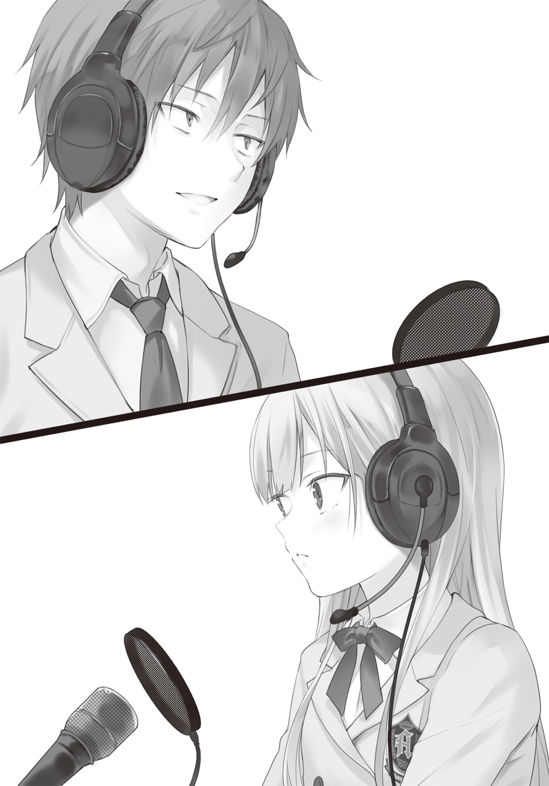
実はもう何をいったか覚えていない。
俺は何を言ったのだろうか。
何を言葉にして、こんな雰囲気にしたのだろうか。
顔を上げるのが怖い。
隣の土越にも、右斜めに座る清川さんにも視線を送るのが怖い。
何より、子猫の反応が怖い。
時計は回っている。もう十秒は経っただろうか。
子猫から台詞が返ってこない。早く何かを喋ってほしい。いや、ここは俺がもう一言加えるべきなのだろうか。ならどんな台詞がいい？ そもそも自分が何を言ったか覚えてない。
俺は耐えられなかった。
子猫をチラ見する。
少女の顔はまるで熟れたトマトみたいに赤く腫れ上がっていた。
白い頰も。
薄く汗に濡れた額も。
白い髪に隠れた耳たぶですら、赤く光ってみえるほどだ。
なんでそんなに赤いんだ。
もしかして風邪でも引いたのか。
いや、さっきまで元気だったのに。そんなに急になるものだろうか。
不安になってくる。
彼女に起きた何かが、俺を焦らせる。
たまらなかった。
我慢出来なかった。
俺は......つい口ずさんだ。
※ ※ ※
百鬼タマは数部残ったビラを持ったまま、上を向いて立ち尽くしていた。
嫌になるほどの快晴。太陽が眩しく、不意に飛び込んできた光に目を細める。
校内のあちこちのスピーカーから響く潮乃女子猫と磯風奇跡の校内ドラマ。
タマは磯風の最後の台詞を聞いて、ゴミ捨て場での子猫の言葉を思い出していた。
『お兄ちゃんが死ぬことよりも......？ それはなんなの？』
『それは――ミー君に恋をすることだ』
『子猫お姉様は、お兄ちゃんの事が好きじゃなかったの？』
『うん......。かつてはそうだった。だから、世界の終わりに、彼を一目見たくて、この世界までやってきた。けど、あの時の気持ちと、今は少し違う』
『どう違うの？』
『うまくはいえない。......でも怖い。......恋をして、それがミー君に届かなかったら、どうしよう――そう思うだけで、身が竦むのだ』
『何を言ってんの。タマたちは安全装置だよ。......世界を救うために生まれた。好きになることだって、そうしなければならないから。......でも怖いって何？ それも恋がって？』
『そうだ......。確かに私は化け物だ。けど、その前に私はどうしようもなく......』
女の子なんだ......。
訳がわからない。潮乃女子猫は子供程度のＩＱしか持っていないのかと疑ったぐらいだ。
だが、不思議とタマはその感情に嫉妬した。
羨ましい......と思ったのだ。
かつての自分もこんな感じだったのだろうか。
制御できない不安......。だけど、何故かそれが心地よく感じる矛盾した感情......。
迷い、躊躇しながらも、一歩ずつ近づけていったあの時を思い出す。
「――......」
一言呟く。
それはタマの世界の磯風奇跡の同位体の名前だった。
目頭が熱くなる。
『おい。子猫。お前、大丈夫か？ すっごく顔が赤いぞ......』
不意に磯風の素の声が、スピーカーに響く。
思わずタマは身体を震わせた。自分に向けられたのかと一瞬錯覚する。
そして思い出す。
磯風奇跡と初めて出会ったあの日を......。
自分の世界の磯風奇跡の同位体......。
その声にそっくりだった事に、驚いた一瞬を......。
『ミー君！ 今は生放送の最中だぞ』
『うわ！ すすすすすまん。今のなし！ 今のなしぃ！』
『君は役者としての自覚が足らないのだ。だいたい......さ、さっきの台詞だって、元々あった脚本の台詞から引用すればよかったのだ。昨日、あれだけ練習したのにもう忘れたのか？』
『うるせぇなあ！ 俺はお前のような天才肌じゃなくて大器晩成型なんだよ。そもそもお前が突然文化祭に参加するとか言い出したりしなければ、こんなことにはならなかったんだ。いつも行き当たりばったりで物事を進めるから......。もっと計画的にだな――』
『なにおう！ 今、それを蒸し返すのか！ み、ミー君だって、私がいない時、靜花と二人で一体何を話しておったのだ。......だいたい君は女性に節操がなさ過ぎる！ こんな美少女が目の前にいるのだぞ』
『それはお前になくて、清川さんにあるものがあってだな』
『な、なんだ、それは!? まさか――そうか。そうなのだな！ やはり――胸か！ 胸の大きさなのか！』
『ちげぇよ!!』
『噓をつきたまえ！ いつも黒星の胸を見ているではないか！ まさかもう揉んだりはしているのではないだろうな！』
『――――なっ！』
『ああ！ その反応なんだ！ 冗談で言ったつも――』
ぷつりと音が途切れた。
横でリニアが頭を抱えている。黒星は大きな胸を隠すように腕を前で組んでいた。
お昼をとりながら、校内放送を聞いていた生徒達は、突然のハプニングに声を失っている。
................................................。
校内が静まり返ってしまった。
そして――――。
どっと笑い声が上がった。
一斉に何かを点火したように。
最後の最後でのミス......。
けれど、皆楽しそうだった。スピーカーを指さしながら、爆笑している。目に涙を溜め、腹の底から笑っていた。
横に立つ二人もため息を吐きながらも、その表情は満足げだった。
それはそうだろう。ぶっつけ本番で、あの二人はここまで演じきったのだ。
もはや、これは奇跡なのだから......。
小さな小さな......。
結婚相談部の面々だけが知る奇跡。
「馬鹿じゃないの......」
タマは小さく罵った。
晩秋の太陽が照らした顔には、小さく笑みが浮かんでいた。
間章 結婚相談部所属 清川靜花 朗読劇のあらすじより抜粋
鬼の子供は青年が噓をついていないとわかりました。
いえ......。ずっと前から知っていたのです。青年は一度も噓をついたことがないことを。
そして鬼の子供は、ずっと青年の前で噓をついていたことを。
噓が嫌いな鬼が、ずっと噓をつき続けていたのです。
鬼の子供は初めて噓をつかずに言いました。
「私もお前が怖いよ」
すると青年は手を差し出します。
「お互い手を取り合っていれば、少しは恐怖が収まるだろう」
青年の言葉を聞いて、鬼の子供は青年の手を取りました。
――終わり――
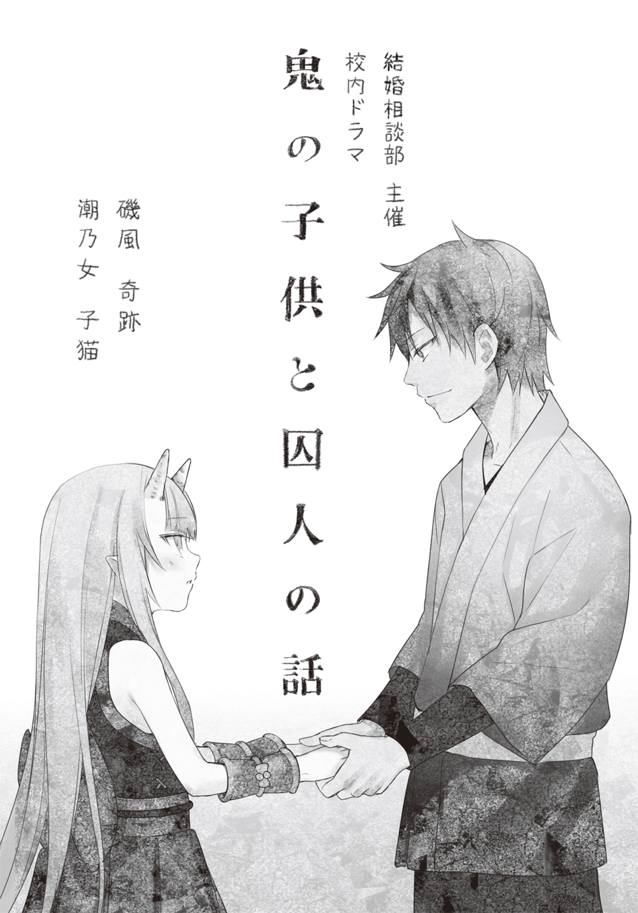
エピローグ 祭りの後......
昼休みが終わり、朝庭高校は再び慌ただしくなった。
あちこちから売り子の声が響き、スピーカーからは放送部の校内放送が流れている。軽音学部の演奏が始まったのか、体育館からギター音が漏れ出て、歓声が上がっている。
射的や定番の金魚掬いをする屋台が並び、高校生達が童心に返ってはしゃいでいる。着ぐるみ姿の生徒が、照りつけ始めた太陽にやられ、団扇であおいでベンチでくつろいでいる。
まだ準備の終わっていないクラスの生徒が、方眼紙や段ボールを担いで走り抜けていった。俺たちの代わりに、噴水前で出し物をしていたじいさんばあさんたちは、人が変わったように和楽器をかき鳴らして「のってるかーい！ べいべー！」と若干訛りながら、オーディエンスを煽っていた。毎年あんなことをしているなら、そりゃあ体調も悪くなるわな......。
ぐぅ......。
ふと模擬店からはおいしそうな香りが漂ってきた。お腹の虫は俺とは違って正直者だ。
朝にトーストを食べてから何も口にしていない。そりゃそうだろ。俺たちは、昼休みに校内ドラマを生放送していたのだから。
「お腹が空いたのか、ミー君」
隣を歩く子猫がのぞき込んできた。
その顔はテカテカしていて、満面の笑みだ。
俺たちの出し物は終わった。成功といっていいのかは知らないが、子猫としては満足の出来だったようだ。二人でさっきから屋台を見回って、ちょっとしたデートをしているのだが、ふんふんと鼻唄を歌っている。デートの時に歌っていた曲だ。
子猫がこうして機嫌が良いのは、校内ドラマが成功した事や、デートをしながら文化祭を回っていることだけではない。
先ほど《パンドラ改》の数値を確認すると、〇が九つに戻っていた。
しかも〇・〇〇〇〇〇〇〇〇二％。つまり前の数値からさらに〇・〇〇〇〇〇〇〇〇一％上昇していたのだ。
相変わらず気が遠くなるぐらい微差。
だが美少女天才科学者にとって、疲れを吹き飛ばすほどの出来事だったらしい。
小さな手は、俺の手を握り、ぶんぶんと大袈裟に振っている。
こうして手をつなぐのも、最初は恥ずかしかったが、今ではそうでもない。
慣れというのは恐ろしいものだ。
「うちのクラスに行かないか？ 喫茶店といっていたが、軽い食事も出るらしい」
「あー、それはちょっと......」
正直なところ、行きづらい。
なんせ俺はマジで何も貢献していないからだ。
同級生に顔が合わせづらい......。向こうだって、会いたくはないだろう。
「もうすぐ私のシフトなのだ」
「シフト？ お前、そんな役目があったのか？」
ちゃっかりしやがって。子猫も俺と同じく貢献度〇だと思っていたのに！
これではますます行きづらくなる。
「頼まれていたのだ。結婚相談部の出し物で忙しいと言ったら、当日ウェイトレスをやってくれればいいからって」
「お前がウェイトレス？」
子猫からウェイトレスと聞いて、俺は妄想した。それは純白のエプロンドレス姿ではなく、例のガスマスクをかぶって、サンドウィッチなんかを燃やしているシーンだ。
クラスメイト達の勇気ある決断に敬服する。まあ、容姿はいいから、教室の前に立って呼び子をしているだけでも効果はあるだろう。
「ふふん......。楽しみにしているがいいぞ」
ない胸を張った。そして――。
「早速行くぞ、ミー君」
「ちょっと待て！ 俺は行くとはまだ――うわああ！」
子猫は強引に俺の手を引っ張った。
一年Ｂ組へ行くと、俺は呆然と立ち尽くした。
順番待ちの客が数名いるほど、盛況だったのだ。
プレオープンのお客は皆生徒だ。そしてその生徒の半分は自分のクラスやクラブの出し物にかり出されている。なので順番待ちが出来るのは非常に稀だ。さっき軽く見回ったが、模擬店などを出しているクラスの中に、順番待ちが出ているところはなかった。
うちのクラスは『メイド喫茶』をやっている。
もはや『メイド喫茶』なんてド定番といっていいだろ。最近ではネタで男がメイド服姿になったり、女がボーイ姿で給仕したりするようだが、そんなものは邪道だ！
はっきり言おう。俺はメイドには結構うるさい。
半端な気持ちで『メイド喫茶』などと提案してほしくない。いや、むしろやるな！
メイドはシンプルでありながら、奥深い職業なのだ。
清廉であり、清貧であり、厳格であらねばならない。
そしてビューティフル！
男が紅茶を飲む横で、一輪の可憐な野菊であらねばならない！
華美であってはならないのだ。いや、慎ましい美しさこそ、男性に淡い恋心をいただかせる。清廉を体現しているからこそ、背徳的な思いに駆られるのだ。
ただ性を垂れ流すような格好など、風俗でコスプレプレイでもして我慢しろと言いたい！
いや......少々語りすぎたようだな。
ともかく俺はうるさいのである。
普通にコスプレ感覚で『メイド喫茶』なんぞやっていたら、そのまま火炎瓶でもぶち込みたくなるような危険な衝動に駆られてしまうのである。
しかし俺はそうはしなかった。
何故なら、三つの事が守られていたからだ。
一つは女子生徒がやっていたこと。
まあ、当然だ。もし男がやっていたら、どんな事をしてでも権力を手に入れて、高校ごと廃校にしていただろう。それほど、これは絶対だ！ ちなみに男の娘は「可」である。
二つ目は膝下が隠れるぐらいのロングのワンピースであったこと。
ミニスカートなんぞ論外である！ 二次元なら許されるが、現実にやったらどんな女が着てもキャバ嬢がコスプレしているようにしか見えない。やり直し！
三つ目。カチューシャではなく、メイドキャップであること。
メイド＝カチューシャなんて風潮があるが、あえて俺は叫ぼう！
カチューシャで髪を留めたぐらいで、メイドの仕事が務まると思ってんのか、愚か者！
そうだ。本来メイドはハウスキーパーなのだ。いわゆる、家政婦さんだ。家を掃除し、洗濯し、料理をするのが役目だ。だが、カチューシャだけで抜け毛が防げるか？ 掃除をしながら、自分の抜け毛をまき散らしているようなものだぞ！ 洗濯しながら、服の繊維に自分の髪を編み込んでいるようなもんなんだぞ！ お前は髪と一緒にスープを煮込む気か！
あり得ないだろ！
カチューシャを付けるぐらいなら、プロ野球のキャップを被ってた方がまだマシだ！
その点、うちのクラスのメイドはわかっている。
ひらひらのフリルが付いたメイドキャップを目深に被り、ポイントを押さえている。
俺は思わず頷いてしまった。
「ミー君。さっきから何をそんなに息が上がっているのだ？ 若干気持ち悪いのだが......」
聞くな。男のフェティシズムの領域は、語るものではなく、心で叫ぶものなのさ。
「あ。子猫ちゃんだ」
メイド服姿の女子生徒が、クラスをのぞき込んでいる俺たちを見つけた。
すると手が空いていたメイド達がわらわらとやってくる。おい。お前ら、お客様を接待するのが、メイドの役目だぞ！ 本分を忘れるな！
相変わらず子猫は大勢に囲まれるのが、苦手らしい。
急に無口になって、俯いている。
生徒達は口々に先ほどの校内ドラマの感想を言い合っていた。
概ね好評だったらしい。子猫の声が可愛かったという感想もあれば、清川さんの話も良かったという意見もあった。
子猫が囲まれる中、俺は遠い目をしながら見つめる。いつもの光景だ。慣れてる。
俺はそっとその場を離れようと、足を後ろに――。
「磯風君も良かったよ！」
突如、そんな声が上がった。
クラスメイト達が俺の方を向く。
「そうそう。なんか磯風っぽくなかったけど」
「最後の台詞なんか良かったよね。ちょっと感動した」
「失敗したけど......」
笑いが起こる。
人を信じず、人から信じられない生き方をしてきた俺にもわかる。
それは馬鹿にしたような笑いじゃなくて、労い、励ますための声だった。
「お、おう......」
照れくささを隠すように、俺は頰を搔いた。
子猫はメイド服に着替えるため被服室に、女子生徒達と向かう。
一人取り残された俺は、ぽつんと立っていた。
そして通りがかったクラスの男子に声をかける。
「な、なあ！」
いきなり俺が声を上げたので驚いたのだろう。男子は思わず後ずさりした。
俺は「ご、ごめん」と謝ってから言葉を続けた。
「俺にも何か手伝わせてくれないか。......な、何にも役に立ってないから」
と頼んだ。
男子生徒は一瞬何を言われたのかわからない顔をしてから、手を顎に当てて考えた。
「今日のシフトが埋まっているからなあ。明日なら、どうだ？」
あっさりと返答がきて、今度は俺が驚く番だった。
「あ、ああ！ ......ぜ、是非やらせてくれ！」
「じゃ、頼んだぜ。磯風」
パンと背中を叩かれ、給仕姿の男子は注文を取りに行った。
俺はその後、席に通され、一人テーブルに座る。
胸に手を当てた。心臓が激しく脈打つ。叩かれた背中が熱い。
泣きそうだった。
頼んだ、なんてクラスメイトに言われたのは、一体いつ以来だろう。
少しだけ。ほんの少しだけ、何か前進したような手応えを感じた。
「お疲れ様......。磯風君」
澄み切った秋の青空みたいな声が、頭の上から聞こえた。
同時にテーブルに、頼んでいたホットコーヒーが置かれる。コーヒーカップではなく、紙コップというところが如何にも文化祭らしい。
顔を上げる。
黒髪を二つに束ね、胸にトレイを抱いたメイド服姿の少女が立っていた。
真っ黒な目を細め、柔和な笑みを浮かべている。太陽かと思うほど、眩しい笑顔だった。
「清川さん。......体調は大丈夫なの？」
「実はちょっとまだ本調子じゃないけど、大丈夫。このシフトが終わったら、仮眠をとるつもりだから」
「でも――」
と反論しても、無駄なのだろう。清川さんはそういう人だ。
「それよりも......。みんな、磯風君のこと褒めてたよ」
あなたに褒められるのが、俺にとっての最大のご褒美です。
「清川さんこそ。いい話だったよ」
「ありがと。でも......磯風君と子猫ちゃんがいなかったら、たぶんあんなには出来なかった」
謙遜する。これも清川さんらしい。
しっかし、かわエエなあ......。
何気に目の前に立ってるけどさ。清川さん......メイド姿なんだよね。
ものすごい可愛いの！ 清純派の人間が、さらに清純なものを着ると、足し算じゃなくてかけ算で威力倍増って感じなんだよね。
「気になってたんだけど。もしかしてこのメイド服って、清川さんが作ったの？」
「う、うん」
ちょっと頰を染めながら、清川さんはエプロンについたフリルを摘んだ。
「ど、どうかな？ おかしいとこない」
もう！ 一つ一つの動作と台詞が可愛すぎる！
それに倒れるまで彼女が必死になって作ったメイド服だ。批判的な事を言えるわけがない。
しかし、天使が頼むのだ。ここは磯風奇跡のファッションチェックいっとくかぁ！
「どうだ！ 磯風君」
清川さんの前ににょきっと現れたのは、メイド服姿の子猫だった。
「おい、ミー君。......今、かなり失礼なルビが振られたような気がするのだが」
ジト目で俺を睨んでくる。
背後には今から北斗神拳奥義をかまさんと、青白いオーラが浮かび上がった。
「落ち着け。お前まで、なに土越みたいなこと言ってんだよ。......おお、よく似合っているじゃないか」
そう。よく似合っていた。
真っ黒なワンピースに、フリルが付いたエプロン。ちょっと大きめのメイドキャップは、子猫が被るとなんかドアノブみたいに見えてくる。白い髪に、赤目の少女が着ると、まるで西洋人形のような可愛さがあった。
事実、さっきから子猫の取り巻きが、俺と同様の声を上げている。
まあ、清川さんの可愛さには劣るがな。
「ちょっと、あんた達......。タマちゃん見なかった？ ――って、子猫その格好！」
いきなり一年Ｂ組に入ってきたのはリニアだ。
子猫の姿を見るなり、タマちゃんにがっついてきたあの野獣の目になり、飛びつく。
「かっわいい！ やっぱ子猫も可愛いわ。って、ちょっと子猫どうしたの？ 元気ないよ」
「磯風君が、私の姿をあまり気に入ってないらしい」
「ちょ、ちょちょちょちょっと待って！ 俺はさっき褒めたぞ。よく似合ってるって！」
「靜花を見る目が、私とでは違う」
「そ――そそそそんなことはない！」
「い～そ～か～ぜ～！ あんた、こんなにプリティーな子猫がいるというのに。靜花にまで手ぇ出そうっての！」
リニアの手の平に極大の炎が灯る。
いきなり上がった炎の柱に、クラスメイトが驚き、慌てて退避する。
俺は逃げようと試みる。だが何者かにがっしりと肩を摑まれた。
振り返ると、黒星が立っていた。こちらもメイド服姿だ。
「まあ、罰は受ければ受けるほど、快楽に変わりますから」
変わらねぇよ。やめろ、このドＳ委員長。離せ！
「磯風ぇえ！」
「ミー君！」
二人の少女の顔のアップが迫ってくる。その顔はマグマよりも赤い。
その後ろで、清川さんが苦笑していた。
わあ......。天使のお迎えだ............。
「かげぇえええええ!!」
『びがああああああ!!』
炎と雷のシンクロ攻撃が、なんの変哲もない田舎の高校の教室に打ち落とされた。
※ ※ ※
百鬼タマは磯風の自室に立っていた。
おもむろに彼が寝ているマットレスを持ち上げる。
真っ黒な空間が目に飛び込んできた。
浮かんできた迷いから逃げるように、窓外に目を移す。空は橙色に染まり、太陽が山に没しようとしているのが見える。
おそらく文化祭が終わった頃だろう。
二人が帰ってくる前に、自分は去らなければならない。
「やはり、ここにいたか、タマ」
ピンクの髪と、フリルが付いたラッフルスカートが揺れた。
振り返ると、子猫と磯風が立っていた。
「お兄ちゃんに、お姉様......。文化祭は？」
「タマちゃんがいなくなったって言うから、探しにきたんだ。子猫が俺の部屋じゃないかって言うから、早めに帰ってきたんだよ」
「そう......なんだ......」
不覚だ。こんなにあっさり見つけられるとは。しかもこの馬鹿ップルに......。
いや......馬鹿なのは自分の方かもしれない。
帰ろうと思えばいつでも帰る事が出来た。自分の世界じゃなくても、他の世界にいけばいい。磯風奇跡は無限にいると力説したのは、タマ自身だ。
だが今その言葉を叫んだところで、むなしいだけ。
結局、タマは磯風奇跡を振り向かせる――いや、デレさせる事が出来なかった。
今、まだこうして留まっているのは、未練というしかない。全く愚かだ......。
「タマちゃん......帰るのか？」
尋ねたのは、磯風だった。
ツーサイドアップの髪が、小さく横に揺れる。
「わからない。......帰ったって、何にもいいことないから。他の世界の磯風奇跡を探すかもしれない」
そう――。それでいいはずだ。何も間違っていない。磯風奇跡は無限にいる。その一人を自分の世界に連れて来て、世界を救う手立てにすればいい。
自分の世界が救われても、他の世界は救われないかもしれない。何十億人を救って、何十億人という人を殺すかもしれない。でも、そんな覚悟はとっくに出来ている。だから執念ともいえる努力によって、《次元航行潜行洞穴》を掘る事ができたのだ。
何かを得るために、何かの犠牲を払う。それが真理だ。
「じゃあ、その前に君に言っておかなきゃいけない事がある」
「何？」
罵倒でもされるのだろうか。
磯風奇跡を何かの部品みたいに言ったことを。それとも子猫から文化祭での一件を聞きつけ、叱り付けにきたのだろうか。もしくは簡単に世界を食い物にする自分の発言に、説教でもするのだろうか。いずれにしても、それも自分が受け入れなければならない。代償の一つだ。
「ありがとう......」
薄いスカイブルーの瞳が、大きく広がった。
そのまま磯風を見つめる。
「鉄骨が落ちてきた時、自分を救ってくれて」
「はあ......」と妹声ではなく、つい素の声を上げてしまった。「何を言ってるの？ お兄ちゃんがタマを助けたんだよ。むしろタマが感謝しなきゃ――」
そうだ。まだお礼も言っていなかった。
「状況は聞いてる。......それに子猫から聞いた。君たちの役割を。あの時だって、子猫がいなくなったから、無理して走って、俺についててくれたんだろ？」
「そ、それは――」
そうだ。彼がいなくなったら元も子もない。
走ることは苦手だったが、なんとかついていったのだ。
しかし、その職務を果たせなかった。あろうことか、守る対象に守られた。
――またタマはお兄ちゃんを亡くすところだった。
失格だ。潮乃女子猫の同位体失格なんだ、タマは――。
「それだけ？ ......タマ、もう帰るね」
「待ってくれ、タマちゃん。聞いてほしい事がある」
《次元航行潜行洞穴》に足をかけたタマが、今一度磯風の方を向いた。
磯風は一度大きく息を吸う。
ブレザーの下襟を正し、胸に手を置いた。
「タマちゃんの世界を救う方法を一緒に考えさせてくれないか？」
何を言っているのかわからなかった。
タマはもう帰るのだ。お邪魔虫が自ら退場しようとしているのだ。
本来なら、手を叩いて喜んでもいいぐらいだろう。
なのに、なんだ......。
世界を救う方法......？
......一緒に考える？
「馬鹿馬鹿しい......」
心に浮かんだ言葉を、タマは何の加工も施さずに、磯風に告げた。
「そんなこと出来ないよ、お兄ちゃん......。片方の世界が磯風奇跡を失ったなら、そのどちらかが滅びなければならない。タマは覚悟が出来てるんだよ。何かを得るために、何かを失うことも知ってるんだよ。タマは子供じゃないから......」
「わかるよ。俺も......世界はそう出来ているんだって思ってた時があるから」
「じゃあ、違うっていうの！」
「違わない。......犠牲を払わなければならない時だってある。一人で飛行機を操縦して、一人で生き残らなければならない時だってある！ けど、それは本当にたった一人の時だけだ」
磯風は身を乗り出して、訴える。
「俺も一人だと思ってた。子猫もそうだ。たった一人で世界を救おうとしてた。でも、そんなことは不可能だ。〇・〇〇〇〇〇〇〇〇一％だってないだろう。けど、俺たちは二つの世界を救った。一人じゃなかったから......。子猫がいたから......。結婚相談部のみんながいたから、世界が救えたんだって......。今ならそう思える」
だから......と磯風は優しく語りかけた。
「だから、タマちゃんと俺との結婚も、みんなで考えよう」
タマは頭を振った。
意味がわからない。この磯風奇跡はタマに何を言っているのだろうか。
みんなで協力したから世界を救えました。
そんなことで世界を救えるなら、苦しむこともなかった。
だからタマとも結婚する......？
虫が良すぎるよ。
でも――。
なんでだろう。
磯風奇跡が発する一音一音が胸に突き刺さる。
すがりつきたくなる。
その向こうの希望を。
祈りたくなる。
その奇跡を......。
甘えたくなる。
その力強い言葉に――。
「そんなの出来るはずがない......よ......」
涙で溢れた顔を上げながら、タマは最後の抵抗を試みた。
磯風奇跡はちょっと困ったような顔をしながらも、笑みを浮かべた。
「大丈夫......。そのために結婚相談部はあるんだぜ」
磯風の言葉を聞きながら、タマは何度も涙を拭う。
しかしいくら拭っても、払っても決壊したダムみたいに溢れてくる。
真っ赤に腫れた頰と瞳を、タマは子猫に向けた。
「お姉様はそれでいいの？ お兄ちゃん......。とっちゃうかもしれないよ」
妹からの再度の宣戦布告。
だが子猫は動じない。それどころか不敵な笑み浮かべた。
「とれるものならとってみろ！ 私は天才科学者にして美少女だぞ。ミー君をデレさせるのは、私だ！」
「受けてたってあげる、お姉様。......じゃあ、お兄ちゃん。早速だけど、タマの部屋をちょうだい。今まで、お姉様の部屋に間借りしていたけど、ライバルとなったからには、タマは別の部屋がいい。何をされるか、わからないもんね」
すっかり妹声に戻り、子猫とそっくりな笑みを浮かべる。
要求に対して磯風は、すぐに返事はしなかった。代わりにばつが悪そうに頭を搔く。
「それがタマちゃん。非常に申し訳ないんだけど......。君をこの家に置くには、少々先立つものがなくて。子猫一人を養うのにも一杯一杯で。もう一人ってなると借金確定という財政状況なんだ。この家は......」
「ええ!? ちょっと待って！ じゃあ、タマはどこに住めばいいの？」
「そのことなんだが......」
すると、階段を高速で駆け上がってくる足音が聞こえる。
段々と音が近づいてくると、廊下でスキール音を鳴らしながら、ある人物が現れた。
「たぁぁぁぁまぁちゃああああああああああああああああああああああああんん！」
俺と子猫を押しのけ、タマにダイブしたのは、リニアだった。
「ひぃ――――。ひぃぃぃぃいいぃぃぃいい！」
叫び声を上げ、タマは回避しようとするが遅い。
ショベルカーのように引き寄せ、自分の頰に押しつけた。
「ああああー。もぉぉぉぉぉおぉ、なんて可愛いの！ というか、このゴスロリ衣装なに？」
いつも外にいる時はコートを着ていたからだろう。モノクロのアンティークドールのような衣装に、リニアのテンションがますます上がる。
「キャアアアアアア！ もうなに、このゴスロリ衣装！ 私を誘ってるの、タマちゃん」
段々と発言が怪しくなってきた。
きゅっと首をしめられ意識を失ったタマは、すでにマグロ状態だ。
「ごめんね、タマちゃん。......今日からは、リニアの家に住んでくれるかな」
光が失った薄青い瞳に、生気が宿る。
同時に再び涙が溢れかえった。
「いいいいややややややややや!! タマ、おうちにかえるぅぅぅぅぅぅううぅぅ！」
ＦＩＮ
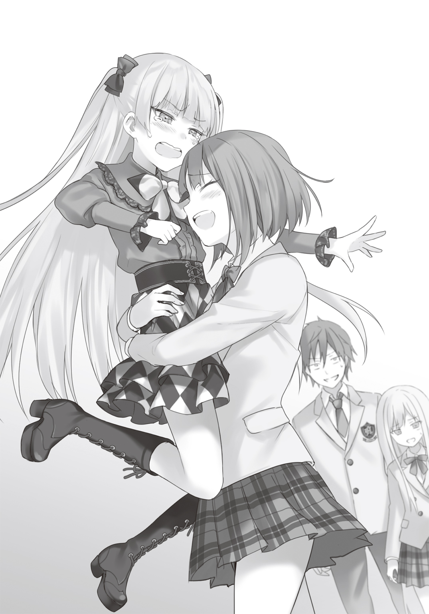
あ と が き
それは私――延野正行が初めて集英社という出版社を、訪れた日のことでございます。
「ラブコメを書く」という指針を聞き思わず喀血して、その日の打ち合わせは終わりました。
ふらふらと出版社の廊下を歩いていますと、少しだけドアが開いた部屋がございます。ふと私は気になり、悪い事とは思いましたが盗み見てしまいました。
部屋の中にはテーブルを囲み、数名の男たちが座っておりました。
私は圧倒されました。譬えを申しますならば、戦闘力５の人間が、戦闘力五十三万のフリーザ様とその一派＋ギニュー特選隊を前にしているような、威圧感を感じたのでございます。
私は一歩後ずさりをし、前を行く担当様に走って追いつきました。
エレベーターに乗った時、少々私の顔が優れないことに気付いたのでしょう。
担当様は少し目線を上げて、遠い目をしました。果たして彼の胸中はいかほどのものであったか、私には知るよしもございません。担当様は仰ったのです。
「そういえば言ってましたね。今日、ジャンプの編集会議をするって......」
後にも先にも、あれほど熱く恐ろしい会議を見たのは、あの会議以外ございませんでした。
というわけで、『〇・〇〇〇〇〇〇〇〇一％デレない白い猫』の二巻をお送りいたします（何がというわけなのかはわかりませんが）。例によって冒頭の話は内容と関係ありませーん。
一巻が二月刊だったのですが、まさか三ヶ月後に続編を出せるとは思いませんでした。はじめはマジ!? って思いましたけど、いやー、人間やれば出来るんですね（筆力的に）。
さて、最後は謝辞で締めさせていただきます。
相変わらず鼻血が出るほど可愛いイラストを描いていただいたフカヒレ先生。タマのラフ画を見た瞬間、思わず叫んでしまいました（証人：担当Ｈ）。いつもありがとうございます。
黒星がしばいてるシーンと、お風呂のシーンが最高だったと評価する担当Ｈ様。ラブコメがいまだに何なのかわからず書いてる新人を、今回も引っ張っていただきありがとうございます。
また一巻で感想・レビューをいただきました読者様に、この場を借りて、感謝を述べさせていただきます。
言わずもがな、この巻をお手にとっていただいた読者様に、最大級の感謝を。
〇・〇〇〇〇〇〇〇〇一％の奇跡を信じまして......。では！
（四月某日 延野正行）
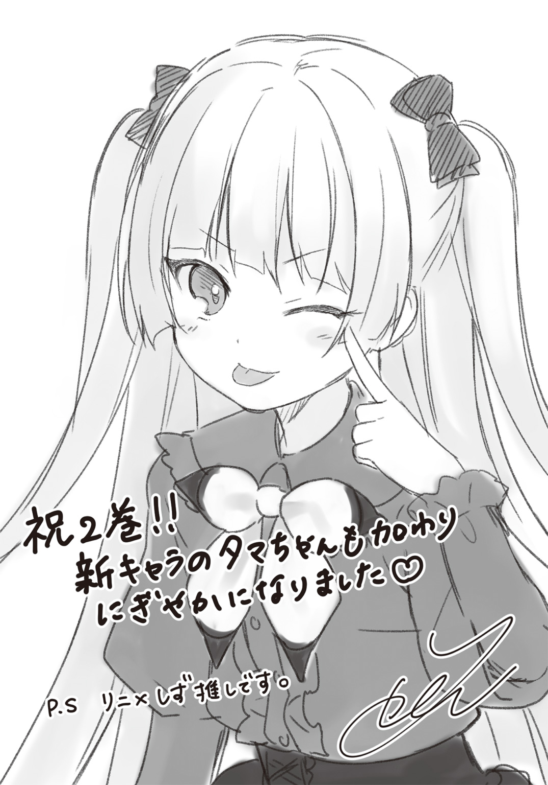
著者紹介
延野正行 のべの まさゆき
大阪府在住。第13回スーパーダッシュ小説新人賞特別賞を受賞。
猫派か犬派かと問われるならば、猫派です。
しかし猫アレルギー。しかも猫も俺アレルギー（よく噛まれる）。
なのに、子猫という名前のヒロインが出てきます。こっちは嚙みませんが、よく電撃で主人公を攻撃します。
illustration
フカヒレ ふかひれ
横浜市在住。また子猫ちゃん達が描けて嬉しいです！
裸の女の子を描いていると温泉に行きたくなります（？）
ダッシュエックス文庫DIGITAL
０・００００００００１％デレない白い猫２
著者 延野正行
© MASAYUKI NOBENO 2015
２０１５年６月30日発行
この電子書籍は、ダッシュエックス文庫「０・００００００００１％デレない白い猫２」
２０１５年５月27日発行の第１刷を底本としています。
発行者 鈴木晴彦
発行所 株式会社 集英社
〒１０１－８０５０
東京都千代田区一ツ橋２丁目５番10号
０３－３２３０－６０８０（読者係）
制作所 株式会社デジタルディレクターズ
本作品の全部また一部を無断で複製、転載、改竄、インターネット上に掲載すること、および有償無償に関わらず、本データを第三者に譲渡することを禁じます。なお個人利用の目的であっても、コピーガードを解除しての複製は、法律で禁じられています。